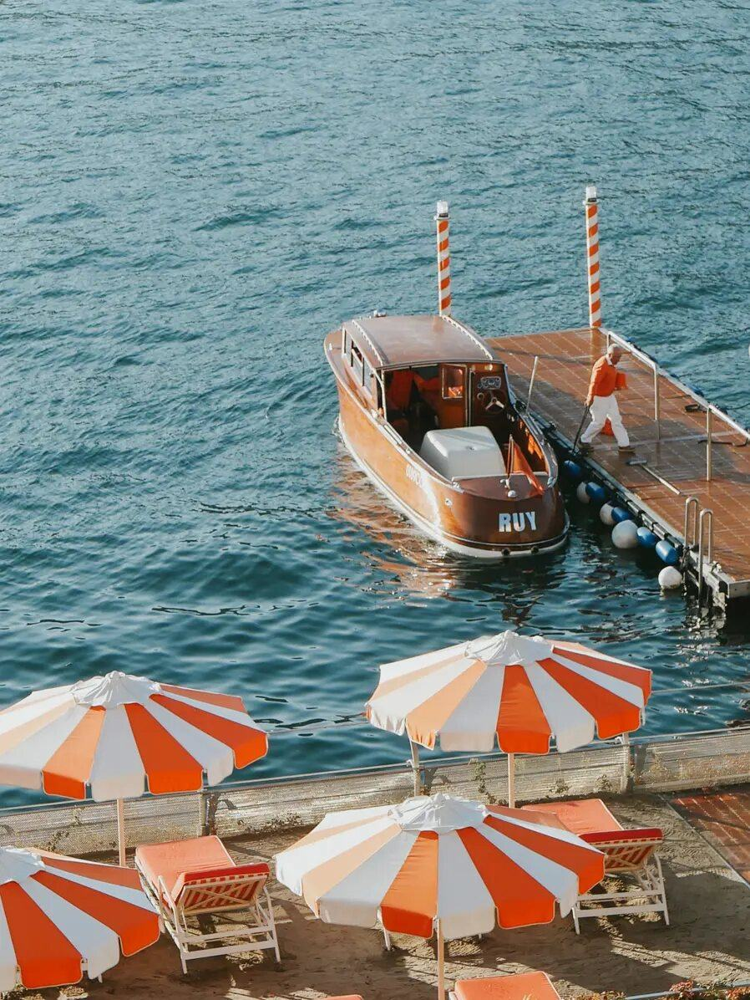

<!DOCTYPE html>
<html lang="en">
<head>
<meta charset="utf-8">
<meta name="viewport" content="width=device-width, initial-scale=1, viewport-fit=cover">
<title>Suites With Keith</title>
<meta name="robots" content="noindex, nofollow">
<meta name="theme-color" content="#161712">
<meta name="apple-mobile-web-app-capable" content="yes">
<meta name="apple-mobile-web-app-status-bar-style" content="black">
<meta name="apple-mobile-web-app-title" content="SWK Trips">
<link rel="manifest" href="manifest.json">
<link rel="apple-touch-icon" href="icon-180.png">
<link rel="icon" href="icon-192.png">
<link rel="preconnect" href="https://fonts.googleapis.com">
<link href="https://fonts.googleapis.com/css2?family=Instrument+Serif:ital@0;1&family=Newsreader:opsz,wght@6..72,400;6..72,500&display=swap" rel="stylesheet">
<style>
:root{
  --plaster:#F2EFE6; --plaster-deep:#E9E5DA; --lime:#FBFAF6;
  --shadow:#161712; --shadow-2:#22231C; --on-dark:#F2EFE6; --on-dark-muted:#9A9B90;
  --ink:#1F201A; --ash:#65665C; --ash-light:#8C8D82;
  --brass:#836229; --brass-light:#BE975A;
  --olive:#4A5040; --olive-deep:#3B4033;
  --line:rgba(22,23,18,.15); --line-dark:rgba(242,239,230,.18);
  --serif:"Instrument Serif",Georgia,serif; --body:"Newsreader",Georgia,serif;
}
*{box-sizing:border-box;margin:0;padding:0;border-radius:0}
html,body{height:100%}
body{background:var(--plaster-deep);color:var(--ink);font-family:var(--body);font-size:16px;line-height:1.5;-webkit-font-smoothing:antialiased}
button{font:inherit;color:inherit;background:none;border:0;cursor:pointer}
a{color:inherit}
.label{font-family:var(--serif);text-transform:uppercase;letter-spacing:.14em;font-size:12px}
.eyebrow{color:var(--brass)}
h1,h2,h3{font-family:var(--serif);font-weight:400;line-height:1.08}
h1 em,h2 em,h3 em{font-style:italic}

/* device shell */
.stage{min-height:100%;display:flex;justify-content:center;align-items:flex-start;padding:24px 16px 40px}
.proto-note{position:fixed;left:16px;top:16px;max-width:240px;font-size:13px;color:var(--ash);display:none}
@media(min-width:900px){.proto-note{display:block}}
.phone{width:100%;max-width:420px;height:min(860px,calc(100vh - 64px));min-height:640px;background:var(--plaster);border:1px solid var(--line);display:flex;flex-direction:column;position:relative;overflow:hidden}
@media(max-width:520px){.stage{padding:0}.phone{max-width:none;height:100vh;height:100dvh;border:0}}
.screen{flex:1;overflow-y:auto;-webkit-overflow-scrolling:touch;padding-bottom:24px}
.pad{padding:0 22px}

/* top bar */
.topbar{display:flex;justify-content:space-between;align-items:center;padding:calc(14px + env(safe-area-inset-top)) 22px 14px;border-bottom:1px solid var(--line);background:var(--plaster)}
.wordmark{font-family:var(--serif);font-size:20px;letter-spacing:.01em}
.wordmark em{font-style:italic}
.avatar{width:34px;height:34px;border:1px solid var(--line);display:flex;align-items:center;justify-content:center;font-family:var(--serif);font-size:15px}

/* tab bar */
.tabbar{display:grid;grid-template-columns:repeat(4,1fr);border-top:1px solid var(--line);background:var(--lime);padding-bottom:env(safe-area-inset-bottom)}
.tab{padding:12px 4px 14px;display:flex;flex-direction:column;align-items:center;gap:5px;color:var(--ash)}
.tab svg{width:22px;height:22px;stroke:currentColor;fill:none;stroke-width:1.4}
.tab .label{font-size:11px;letter-spacing:.1em;white-space:nowrap}
.tab.on{color:var(--ink)}
.tab.on .label{border-bottom:1px solid var(--ink)}
.tab.urgent{color:var(--olive)}

/* sign-in */
.signin{flex:1;display:flex;flex-direction:column;background:var(--shadow);color:var(--on-dark);padding:calc(48px + env(safe-area-inset-top)) 28px 32px}
.signin{position:relative;overflow:hidden}
.signin-photo{position:absolute;left:0;right:0;top:0;height:46%;overflow:hidden;border-bottom:1px solid var(--line-dark)}
.signin-photo img{width:100%;height:100%;object-fit:cover;object-position:50% 35%;display:block}
.signin > *:not(.signin-photo){position:relative}
.signin .wordmark{background:var(--shadow);align-self:flex-start;padding:6px 10px;margin:-6px 0 0 -10px}
.signin .wordmark{font-size:22px}
.signin h1{font-size:46px;margin:auto 0 14px}
.signin p{color:var(--on-dark-muted);margin-bottom:28px}
.field{display:block;width:100%;padding:15px 14px;background:transparent;border:1px solid var(--line-dark);color:var(--on-dark);font-family:var(--body);font-size:17px;outline:none}
.field:focus{border-color:var(--on-dark-muted)}
.field::placeholder{color:#6f7066}
.btn{display:block;width:100%;text-align:center;padding:15px 18px;background:var(--olive);color:var(--on-dark);font-family:var(--serif);text-transform:uppercase;letter-spacing:.14em;font-size:13px;text-decoration:none}
.btn:active{background:var(--olive-deep)}
.btn.ghost{background:transparent;border:1px solid var(--line);color:var(--ink)}
.btn.ghost-dark{background:transparent;border:1px solid var(--line-dark);color:var(--on-dark)}
.signin .btn{margin-top:12px}
.fine{font-size:13px;color:var(--on-dark-muted);margin-top:18px}
.field.code{font-family:var(--serif);font-size:34px;letter-spacing:.45em;text-align:center;padding:12px 10px}
.err{color:var(--brass-light);font-size:14px;min-height:20px;margin-top:6px}
.sent-box{border:1px solid var(--line-dark);padding:18px;margin-bottom:14px}
.sent-box strong{font-weight:500;color:var(--on-dark)}

/* home */
.greet{padding:26px 22px 18px}
.greet h1{font-size:38px;margin-top:6px}
.next{background:var(--shadow);color:var(--on-dark);margin:0;cursor:pointer;display:block;width:100%;text-align:left}
.next .art{height:250px}
.next .body{padding:18px 18px 20px}
.next .eyebrow{color:var(--brass-light)}
.next h2{font-size:32px;margin:6px 0 4px}
.next .meta{color:var(--on-dark-muted);font-size:15px}
.count{display:flex;gap:22px;margin-top:16px;padding-top:14px;border-top:1px solid var(--line-dark)}
.count b{font-family:var(--serif);font-weight:400;font-size:30px;display:block;line-height:1}
.count span{color:var(--on-dark-muted)}
.section-h{display:flex;justify-content:space-between;align-items:baseline;padding:30px 22px 10px}
.row{display:flex;gap:14px;align-items:center;padding:14px 22px;border-top:1px solid var(--line);width:100%;text-align:left;cursor:pointer}
.row:last-child{border-bottom:1px solid var(--line)}
.row .sw{width:58px;height:58px;flex:none}
.row h3{font-size:22px}
.row .meta{color:var(--ash);font-size:14px}
.chev{margin-left:auto;color:var(--ash-light);font-family:var(--serif);font-size:22px}

/* trip detail */
.trip-hero{background:var(--shadow);color:var(--on-dark)}
.trip-hero .art{height:190px;position:relative}
.back{position:absolute;left:14px;top:14px;background:var(--plaster);color:var(--ink);padding:7px 12px}
.trip-hero .body{padding:18px 22px 0}
.trip-hero .eyebrow{color:var(--brass-light)}
.trip-hero h1{font-size:40px;margin:6px 0 4px}
.trip-hero .meta{color:var(--on-dark-muted)}
.seg{display:flex;margin-top:18px;border-top:1px solid var(--line-dark)}
.seg button{flex:1;padding:14px 0;color:var(--on-dark-muted)}
.seg button.on{color:var(--on-dark);box-shadow:inset 0 -2px 0 var(--brass-light)}
.day{padding:22px 22px 6px}
.day-h{display:flex;align-items:baseline;gap:12px;padding-bottom:10px;border-bottom:1px solid var(--line)}
.day-h h3{font-size:24px}
.day-h .label{color:var(--ash)}
.item{display:grid;grid-template-columns:58px 1fr;gap:12px;padding:14px 0;border-bottom:1px solid var(--line)}
.item:last-child{border-bottom:0}
.item .t{font-family:var(--serif);font-size:17px;color:var(--ash)}
.item .k{color:var(--brass)}
.item .what{font-size:16.5px}
.item .sub{color:var(--ash);font-size:14px}
.res{margin:18px 22px 0;background:var(--lime);border:1px solid var(--line)}
.res .top{padding:16px 16px 12px;border-bottom:1px solid var(--line)}
.res h3{font-size:25px;margin:4px 0 2px}
.res .meta{color:var(--ash);font-size:14.5px}
.kv{display:grid;grid-template-columns:1fr 1fr}
.kv div{padding:11px 16px;border-bottom:1px solid var(--line)}
.kv div:nth-child(odd){border-right:1px solid var(--line)}
.kv .label{color:var(--ash);font-size:11px;display:block}
.kv b{font-weight:500;font-size:15.5px}
.perks{padding:12px 16px;border-bottom:1px solid var(--line)}
.perks ul{list-style:none;margin-top:6px}
.perks li{font-size:15px;padding:3px 0 3px 16px;position:relative}
.perks li:before{content:"";position:absolute;left:0;top:12px;width:7px;height:1px;background:var(--brass)}
.note{padding:12px 16px;font-size:15px;font-style:italic;color:var(--ink);border-bottom:1px solid var(--line)}
.actions{display:grid;grid-template-columns:1fr 1fr}
.actions button,.actions a{padding:13px 8px;text-align:center;font-family:var(--serif);text-transform:uppercase;letter-spacing:.12em;font-size:12px;text-decoration:none}
.actions > *:first-child{border-right:1px solid var(--line)}

/* book */
.book-head{padding:26px 22px 16px}
.book-head h1{font-size:36px;margin:6px 0 8px}
.book-head p{color:var(--ash)}
.portal{margin:0 22px;border:1px solid var(--line);background:var(--lime)}
.portal-bar{display:flex;align-items:center;gap:8px;padding:9px 12px;border-bottom:1px solid var(--line);font-size:13px;color:var(--ash)}
.portal-bar .dot{width:7px;height:7px;background:var(--olive)}
.portal-body{padding:22px 16px}
.mock-search{border:1px solid var(--line);display:grid;grid-template-columns:1fr}
.mock-search div{padding:12px 14px;border-bottom:1px solid var(--line)}
.mock-search div:last-child{border-bottom:0}
.mock-search .label{color:var(--ash);font-size:11px;display:block}
.portal-body .btn{margin-top:14px}
.portal-body .fine2{font-size:13px;color:var(--ash);margin-top:12px}
.why{margin:22px 22px 0;padding-top:16px;border-top:1px solid var(--line)}
.why li{list-style:none;padding:6px 0;font-size:15.5px;border-bottom:1px solid var(--line)}

/* contact */
.contact{background:var(--shadow);color:var(--on-dark);min-height:100%;padding:30px 22px 30px}
.contact .eyebrow{color:var(--brass-light)}
.contact h1{font-size:40px;margin:8px 0 10px}
.contact p{color:var(--on-dark-muted)}
.big{display:flex;justify-content:space-between;align-items:center;padding:20px 18px;margin-top:12px;background:var(--olive);color:var(--on-dark);text-decoration:none;width:100%}
.big.alt{background:transparent;border:1px solid var(--line-dark)}
.big .label{font-size:14px}
.big span:last-child{font-family:var(--serif);font-size:20px}
.num{font-family:var(--serif);font-size:28px;margin-top:22px;color:var(--on-dark)}
.contact .list{margin-top:26px;border-top:1px solid var(--line-dark)}
.contact .list div{padding:13px 0;border-bottom:1px solid var(--line-dark);font-size:15px;color:var(--on-dark)}
.contact .list .label{color:var(--on-dark-muted);display:block;font-size:11px;margin-bottom:2px}


/* day strip */
.strip{position:sticky;top:0;z-index:2;display:flex;gap:0;overflow-x:auto;background:var(--plaster);border-bottom:1px solid var(--line);scrollbar-width:none}
.strip::-webkit-scrollbar{display:none}
.chip{flex:none;width:58px;padding:9px 0 8px;display:flex;flex-direction:column;align-items:center;border-right:1px solid var(--line);color:var(--ash)}
.chip b{font-family:var(--serif);font-weight:400;font-size:24px;line-height:1.1;color:var(--ink)}
.chip .label{font-size:10px}
.chip.on{background:var(--shadow)}
.chip.on b,.chip.on .label{color:var(--on-dark)}
.chip.is-today .label{color:var(--brass)}
.chip.on.is-today .label{color:var(--brass-light)}
.today-tag{margin-left:auto;color:var(--brass)}
.today-list{margin-top:14px;border-top:1px solid var(--line-dark)}
.today-list div{padding:9px 0;border-bottom:1px solid var(--line-dark);font-size:15.5px}
.today-list span{display:inline-block;width:56px;font-family:var(--serif);color:var(--on-dark-muted)}
.preview{margin-top:18px;padding-top:14px;border-top:1px solid var(--line)}
.preview .btn{margin-top:8px}
.guide-link{display:flex;justify-content:space-between;align-items:center;margin:22px 22px 0;padding:16px;border:1px solid var(--line);background:var(--lime);width:calc(100% - 44px);text-align:left}
/* guides */
.g-head{padding:26px 22px 14px}
.g-head h1{font-size:36px;margin:6px 0 8px}
.g-head p{color:var(--ash)}
.g-hero{background:var(--shadow);color:var(--on-dark)}
.g-hero .art{height:170px;position:relative}
.g-hero .body{padding:18px 22px 22px}
.g-hero .eyebrow{color:var(--brass-light)}
.g-hero h1{font-size:40px;margin:6px 0 6px}
.g-hero p{color:var(--on-dark-muted)}
.hotel{padding:15px 22px;border-top:1px solid var(--line)}
.hotel h3{font-size:23px}
.hotel .label{color:var(--brass)}
.hotel p{font-size:15.5px;margin-top:3px}
.hotel p.none{color:var(--ash-light);font-style:italic}
.stops{margin:0 22px;border-left:1px solid var(--brass);padding-left:18px}
.stop{padding:10px 0;position:relative}
.stop:before{content:"";position:absolute;left:-22px;top:19px;width:7px;height:7px;background:var(--brass)}
.stop h3{font-size:21px}
.stop .meta{color:var(--ash);font-size:14.5px}
.place{display:grid;grid-template-columns:90px 1fr;gap:10px;padding:12px 22px;border-top:1px solid var(--line)}
.place .label{color:var(--ash)}
.ph-note{padding:12px 22px 0;font-size:13.5px;color:var(--ash)}
.site-link{display:block;margin:24px 22px 0}


.art img,.gimg img,.thumb img,.h-hero img,.sw img{position:absolute;inset:0;width:100%;height:100%;object-fit:cover;display:block}
.search{display:block;width:100%;margin-top:16px;padding:13px 14px;border:1px solid var(--line);background:var(--lime);font-family:var(--body);font-size:16px;outline:none;-webkit-appearance:none}
.search:focus{border-color:var(--ash)}
.gcard{display:block;width:calc(100% - 44px);margin:0 22px 16px;text-align:left;background:var(--shadow);color:var(--on-dark)}
.gimg{height:170px;position:relative;overflow:hidden;background:var(--shadow-2)}
.gbody{padding:14px 16px 16px}
.gbody h2{font-size:30px}
.gbody .meta{color:var(--on-dark-muted);font-size:14.5px;margin-top:2px}
.sw{position:relative;overflow:hidden;background:var(--plaster-deep)}
.hrow{display:grid;grid-template-columns:84px 1fr;gap:14px;padding:14px 22px;border-top:1px solid var(--line);width:100%;text-align:left}
.thumb{width:84px;height:84px;position:relative;overflow:hidden;background:var(--plaster-deep)}
.hrow h3{font-size:21px;margin:2px 0 3px}
.hrow p{font-size:14.5px;color:var(--ash);display:-webkit-box;-webkit-line-clamp:2;-webkit-box-orient:vertical;overflow:hidden}
.hrow .label{font-size:10.5px}
.astrip{gap:0}
.achip{flex:none;padding:12px 16px;border-right:1px solid var(--line);font-family:var(--serif);font-size:16px;white-space:nowrap}
.area-h{align-items:baseline}
.area-h h2{font-size:28px}
.area-h a{color:var(--brass);text-decoration:none}
.route{margin:0 22px 18px;padding:16px;border:1px solid var(--line);background:var(--lime)}
.route > h3{font-size:24px}
.route > .meta{color:var(--ash);font-size:14.5px;margin-bottom:12px}
.route .stops{margin:0}
.route .stop a{color:var(--ink)}
.nights{font-family:var(--body);font-size:13px;color:var(--ash)}
.read{display:block;margin-top:12px;font-family:var(--serif);text-transform:uppercase;letter-spacing:.12em;font-size:12px;color:var(--brass);text-decoration:none}
.h-hero{height:260px;position:relative;overflow:hidden;background:var(--shadow)}
.h-name{font-size:40px;margin-top:6px}
.h-verdict{font-family:var(--serif);font-style:italic;font-size:23px;line-height:1.3;margin-top:16px}
.h-kv{display:block;margin:20px 22px 0;border-top:1px solid var(--line)}
.h-kv div{padding:11px 0;border-bottom:1px solid var(--line)}
.h-kv .label{display:block;color:var(--ash);font-size:11px}
.h-kv b{font-weight:500}
.pts{margin:0 22px}
.pt{display:grid;grid-template-columns:34px 1fr;padding:12px 0;border-top:1px solid var(--line)}
.pt span{font-family:var(--serif);color:var(--brass)}
.pt b{font-weight:500}
.pt p{font-size:15px;color:var(--ash);margin-top:2px}

/* trips without a photo */
.mono{position:absolute;inset:0;display:flex;align-items:center;justify-content:center;background:var(--shadow);color:var(--brass-light);font-family:var(--serif);font-size:28px}
.trip-hero .art.noimg{height:64px}
/* sheet + toast */
.scrim{position:absolute;inset:0;background:rgba(22,23,18,.45);display:none;z-index:5}
.sheet{position:absolute;left:0;right:0;bottom:0;background:var(--plaster);z-index:6;transform:translateY(100%);transition:transform .22s ease;border-top:1px solid var(--line);padding:20px 22px calc(22px + env(safe-area-inset-bottom))}
.sheet.open{transform:none}
.sheet h3{font-size:26px;margin:4px 0 14px}
.sheet .btn{margin-top:10px}
.toast{position:absolute;left:22px;right:22px;bottom:84px;background:var(--shadow);color:var(--on-dark);padding:12px 14px;font-size:14px;z-index:7;display:none}

/* placeholder "photography" blocks */
.art{position:relative;overflow:hidden}
.art svg{position:absolute;inset:0;width:100%;height:100%}
</style>
</head>
<body>
<div class="stage"><div class="phone" id="phone"></div></div>

<script src="supabase.js"></script>
<script>
/* ---------- Sample data, shaped like a Fora sync ---------- */
const KEITH = { name:"Keith Pence", phone:"+1 (415) 272-4316", tel:"+14152724316",
  portal:"https://trips.foratravel.com/suites-with-keith/book" };

/* ---------- live data (Supabase) ---------- */
const SB_URL = "https://reyryrfdrbcumxuhinio.supabase.co";
const SB_KEY = "sb_publishable_IEPxr0ufXJ4gMGxkXzFdtQ_WE4E6ebu"; // public by design; Row Level Security protects the data
const sb = window.supabase.createClient(SB_URL, SB_KEY, { auth:{ persistSession:true, autoRefreshToken:true, storageKey:"swk-trips-auth" } });
let CLIENT = { first:"", last:"", email:"" };
let TRIPS = [];
const PALETTES = [["#E9E5DA","#9FA890","#161712"],["#E9E5DA","#836229","#22231C"],["#E9E5DA","#4A5040","#161712"]];
async function loadData(){
  const [me, tr] = await Promise.all([
    sb.from("clients").select("first_name,last_name,email").limit(1),
    sb.from("trips").select("*, reservations(*), itinerary_items(*)").order("start_date")
  ]);
  if (tr.error) throw tr.error;
  const c = (me.data||[])[0] || {};
  CLIENT = { first:c.first_name||"", last:c.last_name||"", email:c.email||state.email||"" };
  TRIPS = (tr.data||[]).map((t,i)=>{
    const days = {};
    (t.itinerary_items||[]).slice().sort((x,y)=>x.day.localeCompare(y.day)||x.sort-y.sort||String(x.time||"").localeCompare(String(y.time||"")))
      .forEach(it=>{ const d = days[it.day] ||= { d:it.day, title:"", items:[] };
        if(it.day_title && !d.title) d.title = it.day_title;
        d.items.push([it.time||"", it.kind||"", it.title, it.detail||""]); });
    return { id:t.id, name:t.name, em:t.subtitle||"", start:t.start_date, end:t.end_date, places:t.places||"",
      palette: PALETTES[i % PALETTES.length],
      reservations: (t.reservations||[]).slice().sort((x,y)=>x.sort-y.sort||String(x.check_in||"").localeCompare(String(y.check_in||"")))
        .map(r=>({ type:r.type||"Hotel", name:r.name, place:r.place||"", in:r.check_in, out:r.check_out, room:r.room||"",
          conf:r.confirmation||"", guests:r.guests||"", perks:r.perks||[], note:r.note||null, phone:r.phone||"" })),
      days: Object.values(days).sort((x,y)=>x.d.localeCompare(y.d)) };
  });
}


const H = [{"s":"acro-suites-crete","n":"Acro Suites","c":"Greece","a":"Crete","w":"Agia Pelagia, Crete","v":"An adults-only wellbeing resort built into the cliff above Mononaftis Bay, with Santorini drama at Crete prices.","p":"Couples, honeymoons, spa & yoga travelers, design lovers","st":"Adults-only cliffside wellbeing resort","r":"","vis":"","fh":0,"so":[],"k":[],"img":"","u":"https://suiteswithkeith.com/hotels/acro-suites-crete.html"},{"s":"airelles-palladio-venice","n":"Airelles Palladio Venice","c":"Italy","a":"Venice","w":"Venice, Italy","v":"The most spectacular hotel I toured in Venice, and one of the most beautiful properties I have ever seen. For me, it is the number one hotel in Italy.","p":"Families, groups, couples who want a resort, anyone who values calm","st":"","r":"","vis":"Visited October 2026","fh":1,"so":[["The arrival.","You come in by water to a private landing, and the reveal of the gardens is one of the great hotel arrivals in Europe."],["A three-story spa.","Spa Airelles by Guerlain is remarkable: three floors, with an indoor pool."],["The outdoor pool and gardens.","A stunning pool set in walled gardens, with lawns and pergolas. Space that physically does not exist across the water in San Marco."],["Four chefs and five bars.","Plus a beautiful library. You could stay a week without repeating an evening. The line-up ↓"]],"k":[["You are on Giudecca, deliberately.","The hotel boat makes the crossing in about five minutes. If you want to step out your door into the streets of Venice, look at Aman instead."],["Stay four nights.","Three is my sweet spot for Venice; at Airelles I could easily do four."],["Book early for July and Biennale years.","Redentore weekend in July puts the fireworks right over the Giudecca Canal, and Biennale years fill the city."],["Transfers, arranged.","I arrange the private water taxi from Marco Polo airport to the hotel dock, and private boats to Murano, Burano and Torcello."]],"img":"img/airelles-palladio-venice.jpg","u":"https://suiteswithkeith.com/hotels/airelles-palladio-venice.html"},{"s":"alila-napa-valley","n":"Alila Napa Valley","c":"Napa & Sonoma","a":"Napa Valley","w":"St. Helena, Napa Valley","v":"A good hotel whose modern character is a matter of taste. My ranking reflects my own preference for vineyard romance more than any flaw in execution.","p":"Hyatt loyalists, younger travelers","st":"Modern boutique (Hyatt)","r":"#09 in my Napa & Sonoma ranking","vis":"","fh":0,"so":[["Walkable to St. Helena.","One of the few luxury bases where you can walk to dinner downtown."],["Book a vineyard-facing room.","Significantly better than the alternatives if you can get one."],["The Hyatt points play.","For World of Hyatt loyalists, one of wine country's best-value redemptions."],["Clean modern design.","Sleek and current. If you prefer contemporary over farmhouse, this is your aesthetic."]],"k":[["Contemporary-first by design.","More sleek retreat than vineyard estate, so pick it if that's what you want."],["The pool is intimate rather than resort-scale.","Plan big pool days elsewhere and use Alila as your stylish, walkable base."],["On points, it's a standout.","At cash rates, compare against the list above for your dates. On Hyatt points, it's one of wine country's best redemptions."]],"img":"img/alila-napa-valley.jpg","u":"https://suiteswithkeith.com/hotels/alila-napa-valley.html"},{"s":"aman-kyoto","n":"Aman Kyoto","c":"Japan","a":"Kyoto","w":"Kyoto, Japan","v":"For travelers who want quiet immersion over convenience, this is the first hotel I name in Japan.","p":"Quiet immersion, design purists, second visits to Japan","st":"Forest sanctuary (Aman)","r":"Featured · my Japan shortlist","vis":"","fh":0,"so":[["The forest setting.","A garden valley on the city's northern edge, with the most transporting arrival of any Kyoto hotel."],["The most 'Aman' Aman in Japan.","Serenity as a discipline. This is the brand's philosophy at full strength."],["Three Michelin Keys.","Independent recognition matching my own placement of it at the top of the Kyoto list."]],"k":[["Seclusion is the trade.","You're not walking out the door into Gion. Travelers who want a central base should look at The Ritz-Carlton, Kyoto."],["Best for travelers who want quiet immersion.","First-timers racing a checklist may get more from Capella or the Ritz. This is the slow-Japan pick."],["Let me sequence the trip.","Kyoto's temples reward early access and the right guide, and the experiences I arrange are half the value here."]],"img":"img/aman-kyoto.jpg","u":"https://suiteswithkeith.com/hotels/aman-kyoto.html"},{"s":"aman-rosa-alpina-dolomites","n":"Aman Rosa Alpina","c":"Italy","a":"Dolomites","w":"San Cassiano, Alta Badia, Dolomites, Italy","v":"The most luxurious hotel in the Dolomites, in a fantastic spot for hiking and skiing, and as good for families as it is for couples. The suites are the reason to come.","p":"Families and couples, skiers and hikers","st":"Aman mountain hotel: wood, marble and calm","r":"","vis":"Toured October 2026","fh":1,"so":[["The suites.","The best rooms in the hotel, with beautiful views of the forest, village and peaks."],["The location for skiing and hiking.","It isn’t ski-in, ski-out, but there’s a ski room and the lifts are about two minutes away by shuttle."],["Families and couples alike.","A true luxury hotel that welcomes both."],["The design.","Classic Aman: warm wood, marble and a sense of calm."]],"k":[["Not the place for big views.","If a sweeping panorama is the point, look at Forestis or COMO Alpina."],["Winter minimum stays are unclear.","The hotel told me there’s a seven-night minimum in winter, but sample searches don’t show it. I confirm the rules directly with the team before you plan around them."],["Book a suite.","They’re the reason to stay."],["Expect German and Austrian sauna culture.","The main sauna areas are mixed, men and women together. You’ll walk around the spa in a towel or robe, but swimsuits and wraps come off in the saunas and steam rooms. Your body isn’t supposed to touch the wood, so you sit or lie on your towel in the saunas, and on a small towel in the steam rooms. It’s completely normal in this corner of Italy; the pools are swimsuit areas."]],"img":"img/aman-rosa-alpina-dolomites.jpg","u":"https://suiteswithkeith.com/hotels/aman-rosa-alpina-dolomites.html"},{"s":"aman-sveti-stefan-montenegro","n":"Aman Sveti Stefan & Villa Miločer","c":"Montenegro","a":"Montenegro","w":"Sveti Stefan, Montenegro","v":"Everything here comes from walking the property with the GM. And if you're already spending €4,000 a night, stay on the island.","p":"Couples, privacy seekers, full buyouts","st":"Historic island resort & villa","r":"Reviewed in my Montenegro guide","vis":"","fh":0,"so":[["Queen's Beach.","Expected to remain exclusive to Aman guests, accessed through a gated entrance. Possibly the prettiest beach I've seen in Montenegro."],["The spa building.","Vaulted timber ceilings, an indoor/outdoor pool facing Queen's Beach, and its own restaurant, reserved exclusively for hotel guests."],["A refreshing photography policy.","Aman asked that I not share my photos (no filming in public areas with guests present, no tripods, no drones). In a world of hotels built for social media, I found that pretty refreshing."],["Zuma and Nammos within walking distance.","I had lunch at Zuma after the tour (fantastic service), and having both nearby is a big improvement for four- or five-night stays."]],"k":[["Island or villa? Here's my line.","Traveling with kids, a stroller, or mobility concerns: book Villa Miločer. As a couple already spending around €4,000 a night, spend the extra ~€200 and stay on the island. That's the experience you're flying to Montenegro for."],["The villa isn't as private as you'd think.","A public walking path runs directly in front of it, plus a small local road into town. Neither bothered me, but if absolute privacy is the priority, the island is still the obvious choice."],["Reopening details, honestly stated.","They're hoping to reopen around July 1 without guaranteeing the date; entry-level rooms won't be offered this season, and only 16 of the 27 Deluxe Cottages are expected initially, ranging roughly 60–100 square meters."],["Fly into Tivat.","Helicopters exist, but international arrivals still clear immigration first, so it's not as smooth as the Maldives. Also note the Janu under construction next door, visible from parts of the property."]],"img":"img/aman-sveti-stefan-montenegro.jpg","u":"https://suiteswithkeith.com/hotels/aman-sveti-stefan-montenegro.html"},{"s":"aman-tokyo","n":"Aman Tokyo","c":"Japan","a":"Tokyo","w":"Tokyo, Japan","v":"The quiet counterpoint to the city's energy. When Tokyo is the adventure, this is the sanctuary I book above it.","p":"Decompression days, design purists, Aman devotees","st":"Urban sanctuary (Aman)","r":"Featured · my Japan shortlist","vis":"","fh":0,"so":[["The arrival.","An elevator up to a cathedral-quiet lobby in the sky. It's the most dramatic tonal shift in Tokyo hospitality."],["Imperial Palace garden views.","The rare Tokyo panorama with green at the center of it."],["Doubly decorated.","Three Michelin Keys and Forbes Five-Star. The external ratings agree with my placement."]],"k":[["Otemachi is a business district.","Superbly connected but quiet at street level after hours. Travelers who want to walk out into buzz should compare The Peninsula in Ginza."],["It's the calm one, by design.","For bold contemporary energy and on-site dining firepower, my Tokyo shortlist answer is Mandarin Oriental."],["Aman pricing applies.","Save it for the trips that deserve it. It turns a great Tokyo visit into a memorable one."]],"img":"img/aman-tokyo.jpg","u":"https://suiteswithkeith.com/hotels/aman-tokyo.html"},{"s":"aman-venice","n":"Aman Venice","c":"Italy","a":"Venice","w":"Venice, Italy","v":"One of the most beautiful Amans I have ever seen: a small, private palazzo on the Grand Canal, run with classic Aman service.","p":"Couples, privacy seekers, Aman loyalists, a Venice and Dolomites trip","st":"","r":"","vis":"Visited October 2026","fh":1,"so":[["The natural light.","Tall windows on the Grand Canal fill the rooms with light, and the restoration lets it fall on the original details."],["Gardens on the canal.","A rare thing in Venice: private gardens at the water’s edge, with the bar looking over them."],["An understated restoration.","Nothing is overdone. The palazzo’s frescoes and stucco do the talking."],["The service.","Twenty-four rooms and a general manager who cares. This is where Aman is at its best."]],"k":[["There is no pool.","The spa is small. If a pool or a big spa matters, look at Airelles Palladio."],["Pair it with the Dolomites.","Aman offers two nights at Aman Venice and three at Aman Rosa Alpina, with transfers included. I can also arrange a helicopter; the nearest helipad is about eight minutes away. See the Aman Venice + Aman Rosa Alpina journey →"],["Ask for the piano nobile.","The noble floor, one level above the ground floor, has the highest ceilings."],["Three nights is the sweet spot.","Long enough for the city, the islands and a few long lunches."]],"img":"img/aman-venice.jpg","u":"https://suiteswithkeith.com/hotels/aman-venice.html"},{"s":"amangiri-utah","n":"Amangiri","c":"Utah","a":"Utah","w":"Canyon Point, Utah","v":"If a pool alone can justify a trip, this is one of three in the world I'd say it about.","p":"Design lovers, milestone trips, total seclusion","st":"Desert resort (Aman)","r":"#03 in my top 10 hotel pools","vis":"","fh":0,"so":[["The pool is the postcard.","Built into a red rock mesa in the desert. It's the image that put it at #3 on my pools list, and it's even better in person by every account my clients give me."],["Desert seclusion, Aman polish.","Canyon Point is genuinely remote, which is exactly the point. This is the trip you take to disappear well."],["A short list of peers.","On my pools ranking it sits alongside Le Sirenuse and Hôtel du Cap-Eden-Roc. That's the company it keeps."]],"k":[["This is a splurge, full stop.","Aman pricing is Aman pricing. My clients book it for special occasions and shorter stays, and no one has regretted it."],["Getting there takes planning.","The remoteness is the product. Build the travel day into the itinerary and let me sequence it properly."],["Book well ahead.","A small property with global demand, so the best rooms and dates go early."]],"img":"img/amangiri-utah.jpg","u":"https://suiteswithkeith.com/hotels/amangiri-utah.html"},{"s":"andronis-arcadia-santorini","n":"Andronis Arcadia","c":"Greece","a":"Santorini","w":"Santorini, Greece","v":"Great if you like a bit of a scene; not the move if you want exclusivity and quiet.","p":"Families, younger couples, scene-seekers","st":"Full resort","r":"#08 in my Santorini ranking","vis":"Visited June 2026","fh":1,"so":[["Every room has a private pool.","Including some of the largest private pools on Santorini."],["Real family infrastructure.","The ARCADemy kids club plus resort-scale grounds make this the Andronis choice for families, and they'll tell you the same."],["Sunset-facing, very private layouts.","The same golden-hour orientation that makes neighboring Epitome special."],["Pacman and Beefbar on property.","Live music, scene energy, and two of the buzziest tables outside Oia's center."]],"k":[["It's massive and spread out.","You'll want a golf cart to get around in summer heat if there's no meltemi wind blowing."],["The vibe is a choice.","The Mykonos-esque dining scene draws a different clientele than the rest of this list. If you want exclusivity and quiet, book Epitome next door instead."],["Resort scale means resort rhythm.","This is the right Santorini hotel for travelers who want lots of activity and options."],["Planning a wedding here?","Arcadia's scale makes it Santorini's best room-block hotel. Weddings are exactly what I do, starting with my Santorini weddings page."]],"img":"img/andronis-arcadia-santorini.jpg","u":"https://suiteswithkeith.com/hotels/andronis-arcadia-santorini.html"},{"s":"andronis-boutique-santorini","n":"Andronis Boutique Hotel","c":"Greece","a":"Santorini","w":"Santorini, Greece","v":"Between the top Oia properties you really can't go wrong, but Boutique's cave-style rooms are the real thing.","p":"Younger honeymooners, first-timers","st":"Cave-style boutique","r":"#05 of my Greece Top 10","vis":"Visited June 2026","fh":1,"so":[["Real cave-style rooms, beautifully renovated.","Marble, wooden arches, and surprisingly bright interiors for cave architecture."],["The two-level Eternal Suite.","One of the most unique suites on the island."],["A water feature in every room.","Every room has a plunge pool or jacuzzi, which the Canaves properties can't say."],["Priced below its flagship sibling.","You give up very little versus Andronis Luxury Suites and usually pay less."]],"k":[["The \"stay in Imerovigli to avoid crowds\" narrative doesn't hold here.","At the top Oia properties, no one is walking directly in front of your room, while several Imerovigli hotels sit right on the Fira-to-Oia hiking path. If privacy matters, say so when booking."],["Spa devotees should also look at Andronis Concept.","Its spa near Imerovigli was one of my top five in the Cyclades."],["Compare the whole top tier.","Boutique, Luxury Suites, Canaves Ena, and Canaves Oia Suites, judged on the actual room, privacy, water feature, and price. My Santorini ranking compares them all."],["Transfers and private boats, arranged.","I arrange private transfers from the airport or port, and private boats: a sunset cruise on the caldera, or private boat transfers to Folegandros, Milos or Ios instead of the ferry."]],"img":"img/andronis-boutique-santorini.jpg","u":"https://suiteswithkeith.com/hotels/andronis-boutique-santorini.html"},{"s":"andronis-concept-santorini","n":"Andronis Concept","c":"Greece","a":"Santorini","w":"Santorini, Greece","v":"If this property were located in Oia instead, it'd probably be competing for one of my top three spots on the island.","p":"Wellness travelers, design lovers, 4+ night stays","st":"Wellness resort","r":"#06 in my Santorini ranking","vis":"Visited June 2026","fh":1,"so":[["Kallos Spa.","The best spa product I saw on Santorini, possibly the Cyclades. Worth planning a slow-travel stay around."],["Every suite has a private terrace and infinity pool.","All 28 keys, all facing the caldera sunset."],["Architecture that breaks the mold.","Warm, earthy, modern tones that blend into the volcanic landscape instead of the standard white-cave look."],["Built for longer stays.","This is a four-plus-night property. The wellness programming and quiet setting reward guests who settle in."]],"k":[["Some rooms sit directly on the Fira-to-Oia walking path.","Not all, but a few have the hiking trail passing right in front. Worth checking before booking, and worth telling me if privacy matters to you."],["Family-friendly, but families are steered elsewhere.","Andronis points families toward Arcadia, whose resort setup fits them better."],["It's near Imerovigli, not in it.","You'll taxi or drive to dinner in Oia and Imerovigli proper, which is a fair trade for the quiet."],["Transfers and private boats, arranged.","I arrange private transfers from the airport or port, and private boats: a sunset cruise on the caldera, or private boat transfers to Folegandros, Milos or Ios instead of the ferry."]],"img":"img/andronis-concept-santorini.jpg","u":"https://suiteswithkeith.com/hotels/andronis-concept-santorini.html"},{"s":"andronis-luxury-suites-santorini","n":"Andronis Luxury Suites","c":"Greece","a":"Santorini","w":"Santorini, Greece","v":"It lends itself perfectly to a 50+ clientele on anniversary trips, or returning to Santorini for the first time since their honeymoon. Also my pick when mobility is a factor.","p":"40+ couples, anniversaries, mobility-conscious travelers","st":"Flagship luxury suites","r":"#04 in my Santorini ranking","vis":"Visited June 2026","fh":1,"so":[["Home of Lycabettus.","The island's most famous cliffside table. Book it the same day you book the room, since it fills faster than the hotel does."],["Every room has a water feature.","Plunge pool, jacuzzi, or a full pool in the villas, with no exceptions across all 39 keys."],["The best of the portfolio for mobility concerns.","A few suites near check-in have only 15–20 stairs, so no trekking hundreds of caldera steps to reach your room."],["A MINI Cooper with select suites.","Complimentary MINI Cooper Cabrio use comes with the top categories, which is a genuinely useful perk on Santorini."]],"k":[["It reads more old-school luxury than cave-style Santorini.","Refined and elegant rather than authentically Cycladic. If cave rooms are what you're picturing, that's Boutique."],["Rates sit slightly above Andronis Boutique.","And Boutique gives up very little. Compare both in my Santorini ranking before deciding."],["The portfolio's best spa isn't here.","Mare Sanus is good, but wellness devotees should look at Andronis Concept, one of my top five spas in the Cyclades."],["Transfers and private boats, arranged.","I arrange private transfers from the airport or port, and private boats: a sunset cruise on the caldera, or private boat transfers to Folegandros, Milos or Ios instead of the ferry."]],"img":"img/andronis-luxury-suites-santorini.jpg","u":"https://suiteswithkeith.com/hotels/andronis-luxury-suites-santorini.html"},{"s":"andronis-minois-paros","n":"Andronis Minois","c":"Greece","a":"Paros & Antiparos","w":"Paros, Greece","v":"For travelers who prioritize space, comfort, and a true resort atmosphere, one of the island's most relaxing luxury stays.","p":"Families, couples, longer stays, resort lovers","st":"Relaxed luxury resort","r":"Featured in my Paros guide","vis":"Visited June 2026","fh":1,"so":[["The Minois Blu Suite Sea View is the room I'd book.","One of the property's most spacious accommodations, with panoramic sea views and room to truly settle in."],["The complimentary shuttle.","An easy way to enjoy Naousa for dinner without worrying about parking or driving home."],["Space, in every sense.","Generous suites and a peaceful setting away from the island's busiest villages."]],"k":[["Stay for at least four nights.","The slower pace rewards travelers who aren't in a hurry."],["Explore Aliki.","The charming fishing village is just minutes away and one of my favorite spots for a leisurely seafood lunch by the water."],["Weigh it against the design hotels.","If design is your priority over resort space, compare Vione and my Cosme vs. Parīlio breakdown before booking."],["Transfers and private boats, arranged.","I arrange private transfers from the port or airport, private boat days to Antiparos and the small islands, and private boat transfers to Mykonos or Naxos instead of the ferry."]],"img":"img/andronis-minois-paros.jpg","u":"https://suiteswithkeith.com/hotels/andronis-minois-paros.html"},{"s":"angama-mara-kenya","n":"Angama Mara","c":"Africa","a":"Kenya","w":"Maasai Mara, Kenya","v":"For the Great Migration, this is the seat I fight to get my clients: the whole Mara, from the edge of the escarpment.","p":"Migration chasers, photographers, milestone safaris","st":"Escarpment safari lodge","r":"Featured · my safari shortlist","vis":"","fh":0,"so":[["The view from the edge.","Sweeping panoramas over the Mara from the escarpment, the most dramatic siting in the region."],["Migration positioning.","My pick for travelers whose safari is built around the Great Migration."],["The balloon at dawn.","Floating over the Mara at first light. It's the signature experience I attach to this booking."]],"k":[["Time it to the migration.","The Mara's peak season is a moving target, and this is a booking where my calendar work earns its keep."],["It's up on the edge, away from the river.","For game at your doorstep (hippos below the deck), compare Sanctuary Olonana down on the Mara River."],["Book 9–12 months out.","Migration-season inventory at the Mara's best lodges is the scarcest thing I book."]],"img":"img/angama-mara-kenya.jpg","u":"https://suiteswithkeith.com/hotels/angama-mara-kenya.html"},{"s":"auberge-du-soleil-napa","n":"Auberge du Soleil","c":"Napa & Sonoma","a":"Napa Valley","w":"Rutherford, Napa Valley","v":"The terrace, the valley, the wine list. Few properties can be summarized in six words and lose nothing.","p":"Honeymoons, anniversaries, food-and-wine couples","st":"Wine country hideaway (Auberge)","r":"#14 on The Fifteen","vis":"","fh":0,"so":[["The terrace.","The most famous dining perch in the valley, and the view that made this property a legend."],["The wine list.","One of the three reasons it made my honeymoon shortlist, in the region where that bar is highest."],["Up on the hillside.","Elevated above the valley floor, so the whole stay looks out over the vines."]],"k":[["It's an adults-first property.","The romance is the product. Families are better matched elsewhere on my Napa & Sonoma list."],["Book the terrace with the room.","The famous tables go as fast as the rooms, so I reserve both together."],["Weigh it against Montage Healdsburg.","The Fifteen's other wine-country entry trades valley views for vineyard bungalows and a slower pace. Tell me your couple and I'll tell you which."]],"img":"img/auberge-du-soleil-napa.jpg","u":"https://suiteswithkeith.com/hotels/auberge-du-soleil-napa.html"},{"s":"banyan-tree-vabbinfaru-maldives","n":"Banyan Tree Vabbinfaru","c":"Maldives","a":"Maldives","w":"North Malé Atoll, Maldives","v":"For snorkelers, this is the one. You're in the water within half an hour of landing, on one of the Maldives' finest house reefs.","p":"Snorkelers, barefoot romantics, small-island lovers","st":"Intimate island resort","r":"Opens my Island Escape itinerary","vis":"","fh":0,"so":[["The house reef.","One of the Maldives' finest, directly off the beach. Turtles, reef sharks, and rays without a boat."],["The tiny-island intimacy.","Walkable in minutes and unhurried. This is the barefoot Maldives at its most literal."],["On the sand in half an hour.","A quick speedboat from Malé, and the fastest route into the water in my proposal."]],"k":[["Small is the point, and also the limit.","Wonderful, but not for those who want scale; my proposal pairs it with the bigger Kanuhura for exactly that reason."],["Dining is solid rather than a highlight.","My honest caveat from the proposal: the reef is the restaurant's toughest competition."],["Snorkelers, say so first.","If the reef is your priority, tell me. It reshapes the whole itinerary in your favor."]],"img":"img/banyan-tree-vabbinfaru-maldives.jpg","u":"https://suiteswithkeith.com/hotels/banyan-tree-vabbinfaru-maldives.html"},{"s":"bawah-reserve-indonesia","n":"Bawah Reserve","c":"Indonesia","a":"Indonesia","w":"Anambas Islands, Indonesia","v":"The most adventurous entry on my tennis list, and the one I recommend when the Maldives feels too tame.","p":"Adventurous couples, total-escape trips, tennis travelers","st":"Private-island eco resort","r":"#09 in my hotel tennis ranking","vis":"","fh":0,"so":[["The court in the jungle.","A single court carved from rainforest with the lagoon beyond. It's the reason it made my world ranking."],["A true private archipelago.","Not one island but a cluster, which makes the seclusion feel genuinely expeditionary."],["The self-selecting crowd.","Remote arrivals filter for guests who actually want this kind of quiet."]],"k":[["The journey is real.","This is a remote property by design. Plan the connections before you fall in love with the dates, and let me sequence them."],["It's an eco-lodge at heart.","The luxury here is setting and seclusion. If polished-marble service is the priority, look at my Maldives picks instead."],["Tennis comes with a view and humidity.","Play early. The rainforest setting is the magic and the challenge."]],"img":"img/bawah-reserve-indonesia.jpg","u":"https://suiteswithkeith.com/hotels/bawah-reserve-indonesia.html"},{"s":"belmond-castello-di-casole-tuscany","n":"Belmond Castello di Casole","c":"Italy","a":"Tuscany","w":"Casole d'Elsa, Tuscany, Italy","v":"A hilltop castle with sweeping views near Siena. For travelers who want their Tuscany slightly more traditional, this is the one.","p":"Traditionalists, couples, Siena-side itineraries","st":"Hilltop castle estate (Belmond)","r":"Featured on my Italy collection","vis":"Visited October 2026","fh":1,"so":[["A genuine hilltop castle.","Ten centuries of stone crowning its own estate, and the most castle-like of my featured Tuscany picks."],["The sweeping views.","Unbroken Tuscan countryside to every horizon. Sunset from the terraces is the day's main event."],["The Siena side of Tuscany.","Casole d'Elsa puts Siena, San Gimignano, and Volterra all within easy reach."]],"k":[["Traditional in feel is the brief.","Stone, heritage interiors, classic service. If you want contemporary polish, that's Castiglion del Bosco."],["It's remote by design.","Plan a car or driver. The isolation is the luxury, and the hill towns are the excursions."],["Belmond pairs beautifully.","An hour from Villa San Michele above Florence, so the two-stop Belmond Tuscany trip writes itself."],["Transfers and drivers, arranged.","I arrange private transfers from Florence, Pisa or Rome, and drivers for wine days and the hill towns, so you can enjoy the tastings without anyone having to drive."]],"img":"img/belmond-castello-di-casole-tuscany.jpg","u":"https://suiteswithkeith.com/hotels/belmond-castello-di-casole-tuscany.html"},{"s":"belmond-hotel-caruso-ravello","n":"Belmond Hotel Caruso","c":"Italy","a":"Amalfi Coast","w":"Ravello, Italy","v":"Quieter and more composed than Positano, with the coast's most dramatic pool. It's the Amalfi stay for travelers who want the view without the crowds.","p":"Couples, pool lovers, travelers who've done Positano","st":"Clifftop palazzo (Belmond)","r":"Featured on my Italy collection","vis":"","fh":0,"so":[["The most dramatic infinity pool on the coast.","Suspended a thousand feet over the sea at the edge of Ravello. My featured page says it plainly, and it's true."],["Ravello's composure.","Gardens, concerts, and evening quiet after the day-trippers leave."],["The 11th-century palazzo.","Frescoed vaults and terraced gardens. Belmond heritage restoration at its best."]],"k":[["You're well above the beach.","The hotel runs boat trips and shuttles down to the coast. The elevation is the amenity, but plan for it."],["Weighing it against Palazzo Avino?","Both are in Ravello. Palazzo Avino is around $1,000 less per night, with smaller base rooms and a quieter, slightly awkward mood when I visited. The Caruso is the bigger splurge."],["Want the action instead?","Le Sirenuse puts you in the center of Positano; Il San Pietro gives you the cliffside icon. My featured page compares all three."],["Time it to the festival.","Ravello's summer music festival turns the village into one of Italy's great evenings, and it's worth building dates around."]],"img":"img/belmond-hotel-caruso-ravello.jpg","u":"https://suiteswithkeith.com/hotels/belmond-hotel-caruso-ravello.html"},{"s":"belmond-villa-san-michele-florence","n":"Belmond Villa San Michele","c":"Italy","a":"Florence","w":"Fiesole, Florence, Italy","v":"The best views in Florence, from a renovated 15th-century monastery. The city's most romantic address isn't in the city at all.","p":"Couples, view seekers, second-time Florence visitors","st":"Historic hillside retreat (Belmond)","r":"Featured on my Italy collection","vis":"Visited October 2026","fh":1,"so":[["The best views in Florence.","The city spread below the Fiesole hills. It's the reason this property leads my Florence list."],["The monastery itself.","A 15th-century building with a facade attributed to Michelangelo's school, recently and beautifully renovated."],["The pool.","A highlight of the property, set on the hillside with the city below. (It’s a climb, more on that below.)"],["The chapel room.","Super special and unique, and the most private room on the property."]],"k":[["You're up above the city.","The shuttle makes it easy, but if you want to walk out into the streets, look at Hotel Lungarno (my riverside pick, steps from everything)."],["Privacy varies by room.","There's less privacy than you'd expect at this level. If I could choose, I'd book a Garden Junior Suite above the main lawn: those are more private than the ones below it, where people can look down on you. The most secluded garden suite overlooks the parking lot, and only the chapel room is more private. I'll make sure you're in the right one."],["Lots of stairs up to the pool.","The pool is a real climb from the rooms. Worth knowing if anyone in your group has mobility concerns."],["Seasonal by nature.","The terraces and pool are the point. Spring through fall is when this property sings."]],"img":"img/belmond-villa-san-michele-florence.jpg","u":"https://suiteswithkeith.com/hotels/belmond-villa-san-michele-florence.html"},{"s":"bill-and-coo-coast-mykonos","n":"Bill & Coo Coast","c":"Greece","a":"Mykonos","w":"Mykonos, Greece","v":"If I had the choice, I'd always choose the Coast location over the Mykonos Town property.","p":"Couples, beach club lovers","st":"Adults-only beachfront","r":"#06 of my Greece Top 10","vis":"Visited June 2026","fh":1,"so":[["The best breakfasts I had in Greece.","At any hotel, on any island. I was usually full until dinner."],["The private beach club.","Extremely relaxing, and lunch at Beefbar on-site is fun, if a bit sceney."],["Massive, genuinely private suites.","Rooms directly on the water, several with remarkable private pools."],["A big upgrade is coming.","A massive new gym complex and spa are under construction, which should take the property to another level."]],"k":[["Book Coast over Town.","If you have the choice, the protected bay, adults-only policy, and beachfront rooms make Coast the clear pick. The Town location's infinity pool gets windy in the meltemi."],["It's adults-only, for guests 17 and up.","Traveling with kids on Mykonos? Look at Cali on the quieter east side."],["The scene is there if you want it.","Beefbar brings energy at lunch, and the hotel arranges transfers to the island's beach clubs, but the property itself stays calm."],["Transfers and private boats, arranged.","I arrange private transfers from the airport or port, private boat days along the south coast or to Delos, and private boat transfers to Paros or Naxos instead of the ferry."]],"img":"img/bill-and-coo-coast-mykonos.jpg","u":"https://suiteswithkeith.com/hotels/bill-and-coo-coast-mykonos.html"},{"s":"bill-and-coo-suites-mykonos","n":"Bill & Coo Suites","c":"Greece","a":"Mykonos","w":"Mykonos, Greece","v":"Best Breakfast and Best Service in my Greece Collection edit, from the group that consistently out-executes Mykonos.","p":"Couples, families, food lovers, town access","st":"Boutique suites near Mykonos Town","r":"Best Breakfast & Best Service, The Greece Collection","vis":"Visited June 2026","fh":1,"so":[["The breakfast that won my award.","Best Breakfast across every hotel in my Greece Collection edit, so plan a slow morning around it."],["Service that took its own category.","Best Service on Mykonos in my edit. The team's warmth is the thread through everything the group does."],["Two properties, one standard.","Suites for town access and families; the Coast for elegant beachfront suites directly on the shoreline."]],"k":[["Compare both Bill & Coo properties before booking.","The Coast is my choice for a true beachfront stay; the Suites win if Mykonos Town or family travel is the priority."],["Town access is the differentiator.","If your Mykonos is dinners, boutiques, and evenings in town, the Suites' location earns its keep every single night."],["Dining is a reason to stay in.","Exceptional restaurants across the group, and my already-booked Mykonos page lists the other tables worth reserving."],["Transfers and private boats, arranged.","I arrange private transfers from the airport or port, private boat days along the south coast or to Delos, and private boat transfers to Paros or Naxos instead of the ferry."]],"img":"img/bill-and-coo-suites-mykonos.jpg","u":"https://suiteswithkeith.com/hotels/bill-and-coo-suites-mykonos.html"},{"s":"borgo-egnazia-puglia","n":"Borgo Egnazia","c":"Italy","a":"More Italy","w":"Puglia, Italy","v":"Space, food, and privacy. For the couple whose honeymoon is about disappearing well, this is the Italy pick on my shortlist.","p":"Honeymoons, food-driven trips, couples who want room to breathe","st":"Village-style resort estate","r":"#07 in The Fifteen, my honeymoon shortlist","vis":"Visited October 2026","fh":1,"so":[["Space.","Laid out like a village: casette with courtyards and real distance between you and everyone else."],["Food.","Puglia's produce and seafood, cooked at the region's flagship. It's the strongest eating of any property on The Fifteen's Italy section."],["Privacy.","The layout is built for couples who want to disappear for a week, which is the exact brief The Fifteen exists to answer."]],"k":[["Puglia takes one extra step to reach.","Fly to Bari or Brindisi (easy connections from Rome) and the transfer is short. I handle the routing."],["Choose your accommodation type deliberately.","Rooms, suites, and casette live differently. Tell me the trip and I'll place you."],["Compare it within The Fifteen.","Puglia's space-and-food brief versus Amalfi's drama versus Como's romance: the shortlist exists so we can have exactly that conversation."]],"img":"img/borgo-egnazia-puglia.jpg","u":"https://suiteswithkeith.com/hotels/borgo-egnazia-puglia.html"},{"s":"borgo-pignano-florence","n":"Borgo Pignano Florence","c":"Italy","a":"Florence","w":"Florence, Italy","v":"Space, calm and contemporary design at the edge of Florence, with the city five minutes away and the countryside estate one drive further.","p":"Return visitors, couples, anyone who wants space and quiet with Florence close by","st":"Contemporary city borgo (Borgo Pignano)","r":"","vis":"Visited October 2026","fh":1,"so":[["Space, close to the city.","The largest hotel grounds in Florence, with the center five minutes away on the hourly shuttle."],["Design and finishes.","Contemporary rooms with a lot of beautiful marble, every one a little different, and very high quality hardware throughout."],["Warm, attentive service.","A generous team, quick on WhatsApp, and thoughtful touches like food waiting in the room after a late arrival."],["The gym and the spa.","A well-equipped gym with a squat rack, dumbbells to 34kg and cardio machines. The spa sits in the basement, with a shared steam room and sauna and a unique tunnel connected to it."]],"k":[["Ask for Vite.","If you’re booking the entry category, Vite is the room I’d request. It’s a standalone building in its own private corner, and a good size for the category."],["Main building over the villa.","Five rooms sit in a separate villa by the entrance, which can be booked whole as a five-bedroom villa or used room by room when the main building is full. The rooms match the main building, but the villa is close to Via Bolognese and you’ll hear the road. I’d request the main building."],["Book spa treatments early.","There are only two treatment rooms. Tell me what you’d like and I’ll reserve it before you arrive."],["Choosing between the hills hotels?","It sits in the same price tier as Collegio alla Querce, which I’ve also stayed at. Villa San Michele is a category of its own. If you’d rather be in the center, look at Four Seasons Firenze."]],"img":"img/borgo-pignano-florence.jpg","u":"https://suiteswithkeith.com/hotels/borgo-pignano-florence.html"},{"s":"borgo-pignano-volterra-tuscany","n":"Borgo Pignano","c":"Italy","a":"Tuscany","w":"Volterra, Tuscany, Italy","v":"A quiet stone borgo on a Tuscan hilltop, where the dinner view alone is worth the drive.","p":"Couples who want a country stay, families and groups taking a villa, slow multi-night stays","st":"Restored hilltop borgo (Relais & Châteaux, Fora Reserve)","r":"","vis":"Visited October 2026","fh":1,"so":[["Dinner under the pergola.","Tables set under a reed roof with the valley laid out in front of you. Book it for sunset, when the light goes gold."],["The villas.","Around nine private villas spread across the estate, from two to five bedrooms. You get your own house, with hotel service and every amenity a short walk away."],["The best pool of the three borghi.","The main pool is cut into the hillside just below the villa, facing the view, and it beats the pools at Borgo San Felice and Il Borro. There’s a second pool and a separate kids’ pool too."],["Tennis, gym and spa.","A tennis court, a genuinely fantastic gym and a beautiful spa, enough to fill the days you don’t leave the estate."]],"k":[["It’s a bit remote, so you’ll want a car (or a driver).","That’s the point: this is a country, farm-stay kind of Tuscany. It’s about an hour and a half from Florence. Volterra, San Gimignano and my other Tuscany estates are all within easy reach; I arrange drivers who know the back roads."],["Traveling as a family or group? Ask about the villas.","They run from two to five bedrooms and vary in layout, privacy and view. Tell me who’s coming and I’ll match you to the right one. More on the villas →"],["Stay longer than one night.","This is a place to settle into. Plan for at least two or three nights so the pool, the dinners and the drives out don’t compete."],["There’s a sister house in Florence.","Borgo Pignano also runs a Florence address. I’ve stayed at both and can pair the city with the countryside in one trip."]],"img":"img/borgo-pignano-volterra-tuscany.jpg","u":"https://suiteswithkeith.com/hotels/borgo-pignano-volterra-tuscany.html"},{"s":"borgo-san-felice-tuscany","n":"Borgo San Felice","c":"Italy","a":"Tuscany","w":"Near Siena, Tuscany, Italy","v":"A truly perfect gem near Siena. It’s the most well-rounded borgo in Tuscany, and one of my favorite stays so far.","p":"Couples, first-timers to Tuscany, anyone who wants Siena close by and everything done well","st":"Restored medieval borgo among the vineyards (Fora Reserve)","r":"","vis":"Visited October 2026","fh":1,"so":[["A real feeling of home.","The staff remember you, the piazza fills up in the evening, and within a day the borgo feels like your village."],["Fantastic service and food.","Warm, polished and never stiff, and the cooking is a reason to eat in, especially dinner out in the piazza on a summer night."],["The borgo itself.","A medieval hamlet perfectly restored: stone lanes lined with flowers, a chapel, cypresses and the vineyards running right up to the edge."],["Tennis, gym and spa.","All on property, so the days you don’t leave the borgo are just as full as the days you do."]],"k":[["You’ll want a car (or a driver).","The borgo sits in the Chianti hills a short drive from Siena, and Florence is an easy day trip. I arrange drivers who know the back roads, and can link it with my other Tuscany estates."],["Book dinner in the piazza.","In summer, tables go out in front of the chapel with live music as the sun goes down. Tell me your dates and I’ll make sure you have one of those nights."],["Stay longer than one night.","This is a place to settle into. Plan for at least three nights so Siena, the vineyards and a slow day at the spa don’t compete."],["Three borghi, three different travelers.","Borgo Pignano, Borgo San Felice and Il Borro each suit a different traveler, and all three are fantastic. Borgo San Felice is the most well-rounded; tell me who’s coming and I’ll tell you which one is yours. Here are my side-by-sides: Borgo San Felice or Borgo Pignano and Borgo San Felice or Il Borro. Or see all three side by side."]],"img":"img/borgo-san-felice-tuscany.jpg","u":"https://suiteswithkeith.com/hotels/borgo-san-felice-tuscany.html"},{"s":"borgo-santandrea-amalfi","n":"Borgo Santandrea","c":"Italy","a":"Amalfi Coast","w":"Conca dei Marini, Amalfi Coast","v":"The modern, spectacular statement on the coast. Just think twice before booking a room with a private pool.","p":"Travelers who want a modern, spectacular statement and a real beach","st":"","r":"","vis":"","fh":1,"so":[["The beach.","Beautiful, massive and a proper beach."],["Alici.","Fantastic dining."],["The service.","Refined but warm."],["Modern, all the way through.","The rooms and the facilities feel different from every other hotel on the Amalfi Coast."]],"k":[["The private pool rooms are not that private.","You can look down on your neighbors, and they can look down on you. Not everyone will mind, but it is important to know. Tell me what matters to you and I will request the right room."],["The sun leaves the water early.","In the fall, your swim time ends around 4:30 or 5pm. If late-afternoon sun matters, Il San Pietro’s beach club is on the sunset side."],["When to go.","May to June, or September."],["It is not Positano.","This side of the coast is quieter. If you want the buzz, add a night or two at Le Sirenuse, and I can split the stay."]],"img":"img/borgo-santandrea-amalfi.jpg","u":"https://suiteswithkeith.com/hotels/borgo-santandrea-amalfi.html"},{"s":"bulgari-hotel-rome","n":"Bulgari Hotel Roma","c":"Italy","a":"Rome","w":"Rome, Italy","v":"Spectacular. Base rooms the size of junior suites elsewhere, marble and mosaics, a lively and sophisticated scene, more restaurants and bars than I could count, and the biggest gym in Rome.","p":"Travelers who want space, energy and great dining without leaving the hotel","st":"Modern and lively (Bulgari Hotels & Resorts)","r":"Spectacular, with the biggest base rooms in Rome","vis":"Visited October 2026","fh":1,"so":[["Very large base rooms.","What other hotels would sell as a deluxe room or a junior suite, so the entry rate already buys real space."],["Marble and mosaics.","Very modern design, lots of marble, and incredible mosaics in the bathrooms."],["A lively, sophisticated scene.","Almost like an EDITION, but much more polished."],["The location.","Right next to the Mausoleum of Augustus, which is almost done with its renovation."]],"k":[["The entry rooms are the value.","Because the base category is so generous, you often don’t need to upgrade to get space. I’ll tell you when a higher category is worth it."],["It’s on the lively side.","If you want quiet and calm, the Eden above the Spanish Steps is the one I’d pick."],["Compare the rest of Rome.","The de Russie for the garden, La Minerva for a real Roman neighborhood, the St. Regis for spectacle and the new Corinthia for space and a spa."],["Transfers and drivers, arranged.","I arrange private transfers from Fiumicino or Termini station, drivers for days outside the city, and onward travel by fast train or car to Florence, Naples or the Amalfi Coast."]],"img":"img/bulgari-hotel-rome.jpg","u":"https://suiteswithkeith.com/hotels/bulgari-hotel-rome.html"},{"s":"burgenstock-resort-lake-lucerne","n":"Bürgenstock Resort","c":"Switzerland","a":"Switzerland","w":"Lake Lucerne, Switzerland","v":"The best backdrop in the sport, attached to one of Europe's great resort estates. It's an easy yes in Switzerland.","p":"Tennis travelers, wellness trips, Switzerland first-timers","st":"Alpine resort estate (Fora Reserve)","r":"#03 in my hotel tennis court ranking","vis":"","fh":0,"so":[["The best backdrop in the sport.","Courts 500 meters above Lake Lucerne. My #03 worldwide, and the view genuinely improves your forehand's mood."],["The timber-wrapped indoor court.","An alpine court framed by the peaks, so you can play in any weather without losing the setting."],["A resort at village scale.","Multiple hotels, serious dining, and a spa operation that anchors the whole ridge. Days of programming without leaving the mountain."]],"k":[["Choose your hotel within the resort.","Bürgenstock is several properties on one ridge, each with a different personality. Tell me the trip and I'll place you in the right one."],["It's a destination in itself.","Give it three nights minimum. The ridge rewards guests who settle in."],["Pair it with Gstaad.","The other Swiss stop on my tennis list is the Gstaad Palace, and the two make a spectacular alpine circuit by car or rail."]],"img":"img/burgenstock-resort-lake-lucerne.jpg","u":"https://suiteswithkeith.com/hotels/burgenstock-resort-lake-lucerne.html"},{"s":"cali-mykonos","n":"Cali","c":"Greece","a":"Mykonos","w":"Mykonos, Greece","v":"A genuinely remarkable property I'd happily return to, and I'd stay again just for that gym.","p":"Fitness-minded travelers, privacy seekers","st":"Independent luxury resort","r":"#08 of my Greece Top 10","vis":"Visited June 2026","fh":1,"so":[["The gym is genuinely remarkable.","Pilates reformers, squat racks, dumbbells up to 75 pounds, plus padel, tennis, and pickleball. I'd stay here again just for the gym."],["The infinity pool.","One of the largest and most distinctive in Greece, with generous spacing between loungers."],["Truly private plunge pools.","Many rooms have them, and unlike most of Greece, they actually feel private."],["Refined, personal service.","Staff greeted guests by name and anticipated needs. It felt like big-brand polish at an independent hotel."]],"k":[["It's far from the party scene, on purpose.","The hotel arranges boat or car transfers to the beach clubs and nightclubs if that's what you're after."],["The vibe is a little LA.","A somewhat American feel compared to Kalesma's laid-back Cycladic mood. Pick your flavor of Mykonos."],["Mykonos is a smart entry point.","Easy to reach from Europe and the Middle East: fly in, move south through the Cyclades, and save Athens for a separate trip."],["Transfers and private boats, arranged.","I arrange private transfers from the airport or port, private boat days along the south coast or to Delos, and private boat transfers to Paros or Naxos instead of the ferry."]],"img":"img/cali-mykonos.jpg","u":"https://suiteswithkeith.com/hotels/cali-mykonos.html"},{"s":"canaves-ena-santorini","n":"Canaves Ena","c":"Greece","a":"Santorini","w":"Santorini, Greece","v":"The team here, especially longtime sales director Des, is a big reason I trust sending clients to this property.","p":"Value seekers, social travelers","st":"Intimate caldera boutique","r":"#05 in my Santorini ranking","vis":"Visited June 2026","fh":1,"so":[["The swim-up bar.","A fun, social addition on an island where most hotels are couples quietly keeping to themselves."],["The heritage.","17th-century wine caves, one family since the 80s. It's the most personal story on the Caldera."],["Higher on the Caldera.","Like Oia Suites, that elevation buys real privacy compared to most Caldera hotels."],["The 2024 renovation.","Minimalist but current. The update brought Ena fully up to the portfolio's standard."]],"k":[["Not every room has a water feature.","This is different from the Andronis properties, so check your category if a plunge pool or jacuzzi matters."],["Rooms are slightly smaller than Oia Suites.","The intimacy is the point, but square footage isn't the selling feature here."],["The value positioning doesn't always show up in the rate.","It's framed as the accessible Canaves, but pricing almost always lands right where Andronis Boutique does. Compare in my Santorini ranking."],["Transfers and private boats, arranged.","I arrange private transfers from the airport or port, and private boats: a sunset cruise on the caldera, or private boat transfers to Folegandros, Milos or Ios instead of the ferry."]],"img":"img/canaves-ena-santorini.jpg","u":"https://suiteswithkeith.com/hotels/canaves-ena-santorini.html"},{"s":"canaves-epitome-santorini","n":"Canaves Epitome","c":"Greece","a":"Santorini","w":"Santorini, Greece","v":"If you're asking me for the single best hotel I experienced across the Greek islands on this trip, it's Canaves Epitome.","p":"Return visitors, families, privacy seekers","st":"Boutique luxury resort","r":"#01 of my Greece Top 10","vis":"Visited June 2026","fh":1,"so":[["The two-bedroom suites are the star.","Separated by floor, with large pools, decks, and outdoor dining areas. Some rooms sit below the pool with views looking up into the water."],["The best sunset in Greece.","A real sunset into the open Aegean, something the Caldera hotels physically cannot offer."],["Omnia was the best hotel restaurant I ate at across the entire trip.","Poolside above Ammoudi Bay, and worth booking even if you stay elsewhere."],["The gardens change the whole mood.","Volcanic-rock walls and serious landscaping turn the common areas into a private world minutes from Oia's crowds."]],"k":[["It's not on the Caldera.","First-time visitors picturing the classic cliffside image are choosing a different experience here. If that image is non-negotiable, book Canaves Oia Suites instead."],["Full-property buyouts are available.","With no age restrictions once the contract is signed. For families, Epitome’s own Five-Bedroom and Three-Bedroom Pool Villas are my pick for the best family villa in Santorini, and for a large group that wants a whole property in Oia, see Canaves Sunday."],["You still get the Canaves ecosystem.","Easy shuttle access connects you to the other Canaves properties and their restaurants and spas."],["Planning a wedding or full buyout?","Epitome's buyouts, room blocks, and guest logistics are exactly what I do. Start with my Santorini weddings page."]],"img":"img/canaves-epitome-santorini.jpg","u":"https://suiteswithkeith.com/hotels/canaves-epitome-santorini.html"},{"s":"canaves-oia-suites-santorini","n":"Canaves Oia Suites","c":"Greece","a":"Santorini","w":"Santorini, Greece","v":"For first-timers, honeymooners, and 40+ couples who want the classic Santorini experience, this is the one.","p":"First-timers, honeymooners, 40+ couples","st":"Caldera luxury hotel","r":"#03 of my Greece Top 10","vis":"Visited June 2026","fh":1,"so":[["The River Pool Suite is the single best suite I saw in Greece.","Across all 38 hotels on this trip. If it's available for your dates, stop deliberating."],["The best spa product on the Caldera.","Completely brand new, plus a large gym. Neither is a given at caldera hotels."],["Privacy engineered into the site.","Set higher on the Caldera than most, with coverings above every room's outdoor space."],["Private multi-bedroom villas.","Two- and three-bedroom pool villas are nearly nonexistent in Oia, and Canaves has them."]],"k":[["There's a 13+ age requirement.","Traveling with younger kids? Epitome, a short walk away, has no age restrictions."],["Complete privacy doesn't exist on the Caldera.","Anywhere. Canaves does a particularly good job with it, but set expectations accordingly."],["Compare the top tier before booking.","For honeymoons, weigh this against Andronis Boutique, Andronis Luxury Suites, and Canaves Ena. My Santorini ranking breaks down all of them."],["Transfers and private boats, arranged.","I arrange private transfers from the airport or port, and private boats: a sunset cruise on the caldera, or private boat transfers to Folegandros, Milos or Ios instead of the ferry."]],"img":"img/canaves-oia-suites-santorini.jpg","u":"https://suiteswithkeith.com/hotels/canaves-oia-suites-santorini.html"},{"s":"canaves-sunday-santorini","n":"Canaves Sunday","c":"Greece","a":"Santorini","w":"Santorini, Greece","v":"For groups or buyouts needing flexibility and privacy, this is my pick for the best villa in Santorini, and the most budget-friendly door into Canaves.","p":"Groups, celebrations, budget-conscious Canaves fans","st":"Relaxed boutique & full buyout","r":"The Canaves portfolio, ranked","vis":"Visited June 2026","fh":1,"so":[["The full-property buyout.","The ten-bedroom villa plus all eight standalone suites. That's effectively eighteen bedrooms in the middle of Oia, and my pick for the best villa in Santorini for a big group. For one or two families, I’d look at the Epitome villas first."],["A 3-to-1 staff-to-guest ratio.","Villa privacy with hotel staffing is the combination standalone rentals can't match."],["The heart-of-Oia location.","The town's restaurants, galleries, and blue domes are outside the front door."],["Canaves service at the friendliest rate.","Suite for suite, the most accessible way into the portfolio."]],"k":[["Only the master suite has a private pool.","Everyone else shares the main pool. That's fine for a buyout group, but worth knowing for a couple booking a single suite. Sunday guests can also use the pool at Canaves Epitome, a short shuttle away."],["Age restrictions lift only on a buyout.","Booked as individual suites, standard Canaves age policies apply; signed as a full-villa contract, kids of any age are welcome."],["Book it as a celebration.","This property makes the most sense taken whole. Honeymoons and couples are better served at Oia Suites or Epitome."],["Planning a wedding here?","Buyouts, room blocks, and guest logistics are exactly what I do. Start with my Santorini weddings page."]],"img":"img/canaves-sunday-santorini.jpg","u":"https://suiteswithkeith.com/hotels/canaves-sunday-santorini.html"},{"s":"capella-kyoto","n":"Capella Kyoto","c":"Japan","a":"Kyoto","w":"Kyoto, Japan","v":"Culture without sacrificing polish. For design-minded couples, this is my current Kyoto pick.","p":"Design-led couples, culture seekers, onsen lovers","st":"Design hotel","r":"Featured · my Japan shortlist","vis":"","fh":0,"so":[["The Kengo Kuma pedigree.","One of Japan's defining architects, working in one of its most atmospheric districts."],["Private onsen suites.","The amenity that turns a Kyoto hotel stay into a ryokan-caliber ritual."],["The geisha-district address.","Miyagawa-chô is right at your doorstep."]],"k":[["New means still writing its story.","The design and location are proven; the property is earning its long-term reputation, which is exactly when preferred access is most valuable."],["Compare the Kyoto trio.","Aman for seclusion, Capella for design and district, the Ritz for a walkable full-service base."],["Book the onsen category.","If the private onsen is the draw (and it should be), confirm the suite category with me before rates move."]],"img":"img/capella-kyoto.jpg","u":"https://suiteswithkeith.com/hotels/capella-kyoto.html"},{"s":"capella-sydney","n":"Capella Sydney","c":"Australia","a":"Sydney","w":"Sydney, Australia","v":"A 1930s sandstone landmark reborn as the city's most polished luxury address, steps from Circular Quay, the Opera House, and the Royal Botanic Garden.","p":"First Sydney stays, business-plus-leisure, design & wellness travelers","st":"Heritage grand hotel, quietly contemporary","r":"","vis":"","fh":0,"so":[],"k":[],"img":"","u":"https://suiteswithkeith.com/hotels/capella-sydney.html"},{"s":"carneros-resort-napa","n":"Carneros Resort & Spa","c":"Napa & Sonoma","a":"Napa Valley","w":"Carneros, Napa Valley","v":"With a renovation, I honestly think this property could move several spots higher on this list.","p":"Families, multi-couple groups, older couples","st":"Cottage resort","r":"#08 in my Napa & Sonoma ranking","vis":"","fh":0,"so":[["It feels like wine country.","I prefer this location to Stanly Ranch. The vineyard-and-barn landscape is the real thing."],["Every cottage has private outdoor space.","The layout is built for slow mornings on your own patio."],["One of Napa's larger spas.","Serious square footage, and like the rooms, it will shine brightest after a refresh."],["The two-bedroom residences are fantastic.","The best product on the property, ideal for families and multi-couple groups."]],"k":[["A refresh would change everything.","The rooms and spa are ready for their next chapter, and my ranking already prices that in."],["Consistency varies.","Some stays have been flawless, others less so. Booking through me means someone is watching your file."],["Book the residences if you can.","I can't personally speak to the standard rooms, though most have private patios. The two-bedrooms are the play."]],"img":"img/carneros-resort-napa.jpg","u":"https://suiteswithkeith.com/hotels/carneros-resort-napa.html"},{"s":"casa-monti-rome","n":"Casa Monti","c":"Italy","a":"Rome","w":"Rome, Italy","v":"So cute. A great boutique hotel in the center of Rome, with real trattorias all around, a beautiful rooftop, a spa couples can have to themselves and a kind, welcoming team. A great option for anyone who wants something other than the classic luxury hotels.","p":"Younger couples and honeymooners who want something hip, young and fun","st":"Hip boutique hotel","r":"My pick for something other than classic luxury","vis":"Visited October 2026","fh":1,"so":[["The neighborhood.","Authentic Roman trattorias all around, full of Romans having Sunday lunch."],["The design.","Super cool patterns, and curtains that hide the TV. You can tell it’s from the team behind Le Fantaisie in Paris."],["Two restaurants.","A beautiful rooftop restaurant and a lively one downstairs."],["A spa you can privatize.","Book it just for the two of you, which makes it great for couples."]],"k":[["Who it suits best.","Younger couples, especially on their honeymoon, who want something more hip, young and fun than a grand hotel."],["An alternative to classic luxury.","If the Hassler or the de Russie feel too traditional, this is the one I’d send you to. For a palazzo by the Pantheon with the same real-Rome energy, look at La Minerva."],["Ask me about the private spa.","I’ll arrange it before you arrive so it’s set for your stay."],["Transfers and drivers, arranged.","I arrange private transfers from Fiumicino or Termini station, drivers for days outside the city, and onward travel by fast train or car to Florence, Naples or the Amalfi Coast."]],"img":"img/casa-monti-rome.jpg","u":"https://suiteswithkeith.com/hotels/casa-monti-rome.html"},{"s":"castelfalfi-tuscany","n":"Castelfalfi","c":"Italy","a":"Florence","w":"Montaione, between Florence, Pisa and Siena, Tuscany, Italy","v":"A polished, modern resort in the Tuscan countryside, and a fantastic choice for families and for couples who want a resort-style stay. If an authentic, historic borgo is the point of your trip, I’d point you to Borgo Pignano, Borgo San Felice or Il Borro instead.","p":"Families, couples who want a resort feel, groups taking a villa","st":"Modern countryside resort beside a restored medieval borgo","r":"","vis":"Stayed September 2026","fh":1,"so":[["Built for families.","A kids club, lots of family room configurations and beautiful villas in the borgo itself. A great alternative for families who don’t want to pay Rosewood, COMO or Belmond prices."],["The pools and spa.","The main pool is enormous, and the spa’s infinity pool over the valley is stunning."],["Four restaurants.","Including one inside the old castle in the borgo, which is really unique, plus dining at the main pool. I had dinner at the casual Italian restaurant, a four-minute walk away: beautiful, and the pizza was great."],["The views.","Many rooms look out over the countryside."]],"k":[["Book a room with a terrace.","I was in a Prestige Belvedere room: well appointed, with a lovely view, but no terrace or outdoor space. Next time I’d book a room with a terrace."],["Or ask about the Tabaccaia.","The entry-level rooms in the Tabaccaia, the historic building across the street, have the charm of the old building. If character matters more than space, they’re a lovely choice."],["Families: look at the villas.","The villas in the borgo are fantastic for families and groups who want their own space with the resort on hand."],["It’s lively.","The terrace fills up at sunset, and the borgo gets busy with day visitors, especially on weekends. For something quieter and more romantic, look at Borgo Pignano, Borgo San Felice or Il Borro."]],"img":"img/castelfalfi-tuscany.jpg","u":"https://suiteswithkeith.com/hotels/castelfalfi-tuscany.html"},{"s":"cheval-blanc-paris","n":"Cheval Blanc Paris","c":"France","a":"Paris","w":"Paris, France","v":"LVMH's showpiece above La Samaritaine: just 72 rooms, Dior Spa, and the most coveted new address in Paris.","p":"Design lovers, fashion trips, repeat Paris visitors","st":"Modern palace (LVMH / Cheval Blanc)","r":"Featured on my collection →","vis":"","fh":0,"so":[],"k":[],"img":"img/cheval-blanc-paris.jpg","u":"https://suiteswithkeith.com/hotels/cheval-blanc-paris.html"},{"s":"cheval-blanc-randheli-maldives","n":"Cheval Blanc Randheli","c":"Maldives","a":"Maldives","w":"Noonu Atoll, Maldives","v":"The only hotel on two of my lists at once. When service and setting both have to be perfect, this is my answer in the atolls.","p":"Honeymoons, service perfectionists, tennis travelers","st":"Private-island resort (LVMH)","r":"#11 on The Fifteen · #05 in my tennis ranking","vis":"","fh":0,"so":[["The most polished service in the atolls.","It holds #11 on The Fifteen because of execution, at a level even the Maldives' best rarely match."],["The tennis court.","A cerulean court cut into the jungle and ringed by palms. It's #5 on my world ranking of hotel tennis courts."],["Fora Reserve status.","One of the properties where my partner relationships carry the most weight for amenities and recognition."]],"k":[["It's a top-of-market splurge.","This sits at the very top of Maldives pricing, so I position it for honeymoons and milestone trips."],["Compare it against my proposal trio.","My sample Maldives proposal shows how I pair islands. Randheli can anchor a similar two-island itinerary."],["Tennis travelers, tell me.","Tell me you want to play and I'll build court time into the trip."]],"img":"img/cheval-blanc-randheli-maldives.jpg","u":"https://suiteswithkeith.com/hotels/cheval-blanc-randheli-maldives.html"},{"s":"chileno-bay-los-cabos","n":"Chileno Bay, Auberge Resorts","c":"Mexico","a":"Los Cabos","w":"Los Cabos, Mexico","v":"The Cabo I book when the goal is to think clearly by the water. It's calm and residential, on a beach you can actually swim at.","p":"Leadership retreats, modern-design lovers, low-key luxury","st":"Contemporary resort (Auberge)","r":"On my corporate travel shortlist","vis":"","fh":0,"so":[["The residential calm.","Quieter than the resort strip by design. It's the Cabo address that doesn't perform at you."],["The swimmable beach.","One of the only ones in Cabo, and you share it with a very short list of neighbors."],["Auberge service culture.","The same collection behind Auberge du Soleil on my honeymoon list. Quiet competence is a brand trait."]],"k":[["Smaller-group sweet spot.","My corporate pick for leadership retreats; full-scale incentive programs fit better at Montage."],["It's a contemporary build.","Travelers who want Cabo's history and lush grande-dame romance should look at Palmilla."],["Retreat logistics are my lane.","Offsites and leadership trips here run through my corporate travel practice."]],"img":"img/chileno-bay-los-cabos.jpg","u":"https://suiteswithkeith.com/hotels/chileno-bay-los-cabos.html"},{"s":"claridges-london","n":"Claridge's","c":"England","a":"London","w":"London, England","v":"The art deco icon and London's definitive grande dame, with impeccable service theater, the famous foyer tea, and suites that feel like private Mayfair flats.","p":"First London trips, tea devotees, celebration stays","st":"Art deco grande dame (Maybourne)","r":"Featured on my collection →","vis":"","fh":0,"so":[],"k":[],"img":"img/claridges-london.jpg","u":"https://suiteswithkeith.com/hotels/claridges-london.html"},{"s":"collegio-alla-querce-florence","n":"Collegio alla Querce","c":"Italy","a":"Florence","w":"Florence, Italy","v":"Quiet, light and a view, with a countryside feel in the hills and Florence a scenic walk away.","p":"Return visitors, couples, families who want space to breathe","st":"Modern hillside retreat (Auberge)","r":"","vis":"Visited October 2026","fh":1,"so":[["The views.","Sweeping views from almost every room, with the city laid out below you."],["The art collection.","An impressive collection throughout, set against bright, modern interiors."],["The pool and three dining venues.","A beautiful pool, and three fantastic places to eat, so dinner in town is a choice, not a necessity."],["The bar in the old headmaster’s office.","The building was once a school, and the bar now sits in the headmaster’s former office. Super cool."]],"k":[["You’re up above the city.","It’s about a 30-minute walk into Florence, and a scenic one. If you’d rather step straight out into the streets, look at Four Seasons Firenze."],["Ask for the view you want.","Almost every room has one, and they differ. Tell me what matters and I’ll request the right room."],["Deciding between the two?","I’ve stayed here and toured both Four Seasons Firenze and Villa San Michele. Here’s my Four Seasons vs Collegio and Collegio vs Villa San Michele side-by-sides."],["Transfers and drivers, arranged.","I arrange private transfers from Florence’s airport or Santa Maria Novella station, and drivers for days in Chianti, Siena or the Val d’Orcia, so nobody has to navigate Tuscan back roads or park in a hill town."]],"img":"img/collegio-alla-querce-florence.jpg","u":"https://suiteswithkeith.com/hotels/collegio-alla-querce-florence.html"},{"s":"como-alpina-dolomites","n":"COMO Alpina","c":"Italy","a":"Dolomites","w":"Alpe di Siusi, Dolomites, Italy","v":"The best location in the Dolomites for walking straight out onto trails and slopes, with a spa and pool that hold their own against anyone. It's not quite the hotel Forestis, Gardena or Aman is, but the price reflects that.","p":"Skiers, hikers and wellness-minded couples","st":"Mountain wellness hotel","r":"","vis":"Stayed October 2026","fh":1,"so":[["True ski-in, ski-out.","The best on this list, by a distance. In summer the same applies to hiking: the trails start at your door."],["The spa and pool.","On par with the best in the region, in a hotel built around wellness."],["Spacious rooms.","Big decks and views, large bathrooms and deep tubs."],["The formal restaurant.","A very nice dinner, with great servers."]],"k":[["Watch out for the chairlift by the Mountain View rooms.","There’s a chairlift right outside them, so they can feel a little loud and not very private as people come up to hike and explore. I hadn’t anticipated it before arriving. In winter I don’t think it would bother you much, but in the shoulder season it’s very much in your view. Tell me how you’re traveling and I’ll steer you to the right room."],["Your car needs a permit.","The Alpe di Siusi is a protected area, and the road up is restricted. The hotel handles the permit; a private transfer avoids the question entirely."],["Expect German and Austrian sauna culture.","The main sauna areas are mixed, men and women together. You’ll walk around the spa in a towel or robe, but swimsuits and wraps come off in the saunas and steam rooms. Your body isn’t supposed to touch the wood, so you sit or lie on your towel in the saunas, and on a small towel in the steam rooms. It’s completely normal in this corner of Italy; the pools are swimsuit areas."],["Service can be a little uneven.","Good overall, and great in the formal restaurant, but occasionally awkward. Not a reason to skip it, just calibrate expectations against Forestis."]],"img":"img/como-alpina-dolomites.jpg","u":"https://suiteswithkeith.com/hotels/como-alpina-dolomites.html"},{"s":"como-castello-del-nero-tuscany","n":"COMO Castello del Nero","c":"Italy","a":"Tuscany","w":"Chianti, Tuscany, Italy","v":"A 12th-century castle that puts Florence and Siena both within reach. It's the smartest base on my Tuscany list.","p":"Wellness travelers, first-time Tuscany visitors, day-trippers","st":"Converted castle retreat (COMO)","r":"Featured on my Italy collection","vis":"Visited October 2026","fh":1,"so":[["The positioning.","Chianti's center, with Florence and Siena each an easy day trip. It's the best-connected estate on my Tuscany list."],["A 12th-century original.","Frescoes and chapel intact, converted with COMO's restraint rather than gutted."],["COMO Shambhala wellness.","The brand's signature spa and healthy kitchen make it the wellness-forward option among my Tuscany picks."]],"k":[["It's the day-tripper's estate.","If you plan to leave the property most days, this is the pick. If you plan never to leave it, look at Castiglion del Bosco."],["Chianti versus Val d'Orcia.","Chianti is vineyards and proximity; the Val d'Orcia is the wide-open postcard. Tell me which Tuscany you're picturing."],["Wellness travelers, weight this one.","The Shambhala programming is a genuine differentiator among Tuscan estates."],["Transfers and drivers, arranged.","I arrange private transfers from Florence, Pisa or Rome, and drivers for wine days and the hill towns, so you can enjoy the tastings without anyone having to drive."]],"img":"img/como-castello-del-nero-tuscany.jpg","u":"https://suiteswithkeith.com/hotels/como-castello-del-nero-tuscany.html"},{"s":"connaught-london","n":"The Connaught","c":"England","a":"London","w":"London, England","v":"Quieter and clubbier than its sibling Claridge's, and home to the Connaught Bar, Hélène Darroze's dining room, and the most discreet service in the city.","p":"Repeat visitors, privacy seekers, bar and food lovers","st":"Discreet luxury house (Maybourne)","r":"Featured on my collection →","vis":"","fh":0,"so":[],"k":[],"img":"img/connaught-london.jpg","u":"https://suiteswithkeith.com/hotels/connaught-london.html"},{"s":"corinthia-rome","n":"Corinthia Rome","c":"Italy","a":"Rome","w":"Rome, Italy","v":"Wow. A showstopper renovation, a beautiful spa and large rooms, quiet and safe across from parliament. Truly a game changer for Rome.","p":"Travelers who want space, a real spa and a central, quiet base","st":"Grand new opening (Corinthia)","r":"A game changer for Rome","vis":"Visited October 2026","fh":1,"so":[["The renovation.","A showstopper from the moment you walk in."],["The location.","Across the street from parliament, so it’s incredibly safe, quiet, and walkable to everything."],["The spa and public spaces.","Beautiful, and big enough that the hotel never feels crowded."],["Large rooms.","Spacious and tastefully appointed, which is rare in the centro storico."]],"k":[["It’s new, so book with someone who knows it.","Room categories and views vary, and I’ll steer you to the right one."],["Compare the rest of Rome.","The Eden for warm, quiet romance, La Minerva for a real Roman neighborhood, the de Russie for the garden and the St. Regis for spectacle."],["Transfers and drivers, arranged.","I arrange private transfers from Fiumicino or Termini station, drivers for days outside the city, and onward travel by fast train or car to Florence, Naples or the Amalfi Coast."]],"img":"img/corinthia-rome.jpg","u":"https://suiteswithkeith.com/hotels/corinthia-rome.html"},{"s":"cosme-paros","n":"Cosme","c":"Greece","a":"Paros & Antiparos","w":"Paros, Greece","v":"Paros’ best beach stay. The laid-back luxury is genuinely refreshing. The rates are high, but the base rooms are massive (larger than many hotels’ junior suites), which makes this the rare entry category I’d happily book.","p":"","st":"","r":"#09 of my Greece Top 10","vis":"Stayed June 2026","fh":1,"so":[],"k":[],"img":"img/cosme-paros.jpg","u":"https://suiteswithkeith.com/hotels/cosme-paros.html"},{"s":"danieli-four-seasons-venice","n":"The Danieli","c":"Italy","a":"Venice","w":"Venice, Italy","v":"The lobby is a showstopper and the rooftop restaurant has one of the great views in Venice. A classic, grand Venice stay, right at the heart of the city.","p":"First-time visitors, Four Seasons loyalists, travelers who want to be at San Marco","st":"","r":"","vis":"Visited October 2026","fh":1,"so":[["The lobby.","The Gothic atrium, with its arcades, candle sconces and stained-glass skylight, is the great see-and-be-seen room in Venice."],["The rooftop.","Terrazza Danieli has one of the best views in the city, over the Salute and the lagoon."],["The lagoon views.","Lagoon-facing rooms look straight across to San Giorgio Maggiore."],["Upgrade odds.","A bigger hotel has more rooms to upgrade you into."]],"k":[["It is busy outside.","The Riva is the liveliest waterfront in Venice, which is part of the fun. If you would rather come home to calm, look at Airelles Palladio or Aman."],["Book a lagoon view.","The rooms are classic; the view is what makes them."],["Service at scale.","A larger hotel runs differently from a small palazzo, and my relationships with the team mean my clients are looked after."],["The spa is now open.","There is no pool, but the new spa has opened, a welcome addition to a classic hotel."]],"img":"img/danieli-four-seasons-venice.jpg","u":"https://suiteswithkeith.com/hotels/danieli-four-seasons-venice.html"},{"s":"ellerman-house-cape-town","n":"Ellerman House","c":"Africa","a":"South Africa","w":"Cape Town, South Africa","v":"A 13-room Relais & Châteaux house above the Atlantic with a private art collection and wine gallery. The gateway stay before or after safari, and reason enough to linger.","p":"Safari bookends, art and wine lovers, honeymoon landings","st":"Private-house hotel (Relais & Châteaux)","r":"Featured on my collection →","vis":"","fh":0,"so":[],"k":[],"img":"img/ellerman-house-cape-town.jpg","u":"https://suiteswithkeith.com/hotels/ellerman-house-cape-town.html"},{"s":"erema-milos","n":"Erēma, a Member of Design Hotels","c":"Greece","a":"Milos","w":"Milos, Greece","v":"Refreshingly understated, and one of the island's strongest luxury stays for design, privacy, and the slower side of Milos.","p":"Couples, design lovers, privacy, luxury escapes","st":"Contemporary Cycladic estate","r":"Featured in my Milos guide","vis":"Visited June 2026","fh":1,"so":[["The Horizon Suite with Private Pool is the room I'd book.","Expansive indoor-outdoor living with uninterrupted Aegean views and exceptional privacy."],["The private-estate feel.","Secluded, quiet and design-forward, which is genuinely rare among new Cycladic openings."],["The pedigree.","Same group as Cosme and Parīlio on Paros, and my comparison of the two explains why that matters."]],"k":[["Stay at least three nights.","Milos deserves more than a quick stop, and Erēma is best enjoyed at a slower pace."],["Pair your stay with a private boat day.","Seeing Milos from the water completely changes the experience, and Erēma makes the perfect base."],["Plan beach time into your itinerary.","The hotel feels wonderfully secluded, but some of Milos' best beaches are only a short drive away."],["Can't choose between Cosme and Parīlio?","The better question is whether you should be doing two islands instead of one. Paros then Milos, ending here."]],"img":"img/erema-milos.jpg","u":"https://suiteswithkeith.com/hotels/erema-milos.html"},{"s":"forestis-dolomites","n":"Forestis","c":"Italy","a":"Dolomites","w":"Above Bressanone, Dolomites, Italy","v":"A fantastic hotel I’d recommend without hesitation for peace and quiet, wellness, great food and awe-inspiring views. Ask me to secure a high floor in the tower closest to the lodge.","p":"Couples, solo travelers, wellness trips, and families or groups in the private villa","st":"Alpine wellness retreat","r":"","vis":"Stayed October 2026","fh":1,"so":[["The view of the Odle.","Unmatched among the Dolomites’ luxury hotels. Even the reception terrace is incredible at sunset."],["The spa.","Two pools, indoor and outdoor and connected by a glass door, both heated to around 32°C (90°F), with attentive staff throughout. Inside are relaxation rooms, a blacked-out sensory room, a swimsuit sauna, and a separate sauna area with three saunas, a steam room, a cold plunge and a heated plunge pool. My 90-minute deep-tissue massage was excellent and very reasonably priced, at about €260 when I visited."],["The dining.","Half board covers breakfast and dinner in either restaurant. Breakfast is served in the main dining room, with its cathedral-style booths and extraordinary views. The seven-course tasting menu was a highlight, and the more casual upstairs restaurant serves generous portions. The wine list is excellent."],["The tower suites.","Scandinavian in feel, with spacious balconies and daybeds, large bathrooms with tubs and walk-in showers, heated floors and Dyson hairdryers."]],"k":[["Your floor and tower matter, and only a request secures them.","There’s no separate room category for higher floors or a particular tower; a tower suite can be on any floor of any of the three towers. The best views of the Odle are from the fourth or fifth floor and above, in the tower closest to the historic lodge and in the middle tower, where you’re above the tree line. Securing one of those is the real upgrade here, and it’s exactly what I push for with the team for my clients."],["The lodge suites are good value.","The suites in the historic lodge are spacious and well priced. If the tower suites are beyond the budget, I’d happily book one."],["Expect German and Austrian sauna culture.","The main sauna area is mixed. You walk around in a towel or robe, but it comes off in the saunas and steam room, which is normal in this corner of Italy. Your body isn’t supposed to touch the wood, so you sit or lie on your towel in the saunas, and on a small towel in the steam room. There’s also a swimsuit sauna if you prefer."],["There’s nowhere else to eat nearby.","For stays longer than three nights, plan on rotating between the two restaurants’ menus."]],"img":"img/forestis-dolomites.jpg","u":"https://suiteswithkeith.com/hotels/forestis-dolomites.html"},{"s":"fouquets-mykonos","n":"Fouquet's Mykonos","c":"Greece","a":"Mykonos","w":"Mykonos, Greece","v":"The energy of Mykonos' south coast with the comforts of a true luxury resort. It's my Best New Resort in Greece.","p":"Luxury travelers, couples, groups, celebrations","st":"South-coast luxury resort","r":"Best New Resort, The Greece Collection","vis":"Visited June 2026","fh":1,"so":[["Dinner at ZUMA.","One of the strongest dining experiences on Mykonos and worth planning an evening around, even if you're staying elsewhere."],["The underground sports court.","A massive subterranean basketball court that's unlike anything you'll find at most luxury resorts."],["Walk to Paraga Beach or Scorpios.","Being able to leave the car behind is one of the hotel's biggest advantages."],["The Aegean Suite with Private Pool is the room I'd book.","Expansive outdoor living with one of the property's best balances of privacy, space, and sea views."]],"k":[["It's on the energetic side of the island.","That's the point. If you want quiet beachfront instead, look at Bill & Coo."],["Book beach clubs before you land.","Scorpios and the south-coast clubs fill up, and my already-booked Mykonos page covers the reservations worth making now."],["New-build polish, real resort comforts.","The finished property exceeded the expectations I formed touring it under construction. That almost never happens."],["Transfers and private boats, arranged.","I arrange private transfers from the airport or port, private boat days along the south coast or to Delos, and private boat transfers to Paros or Naxos instead of the ferry."]],"img":"img/fouquets-mykonos.jpg","u":"https://suiteswithkeith.com/hotels/fouquets-mykonos.html"},{"s":"four-seasons-astir-palace-athens","n":"Four Seasons Astir Palace","c":"Greece","a":"Athens","w":"Athens Riviera, Greece","v":"Astir Palace feels like two vacations in one. Few hotels balance city and beach this easily.","p":"Families, beach lovers, celebrations, extended stays","st":"Seaside urban resort","r":"Featured in my Athens guide","vis":"Visited June 2026","fh":1,"so":[["The private coves deserve more than a quick swim.","Astir's beach club is one of the Riviera's biggest advantages, so spend a full afternoon there."],["Pelagos is worth planning your evening around.","One of the best Michelin-starred meals in Greece, right on property. Manko is the other table I send clients to on the peninsula."],["The Sea View Bungalow Suite is the room I'd book.","Privacy, generous outdoor space, and direct access to the Riviera lifestyle."]],"k":[["It's a resort first, a city base second.","If your trip is museums and rooftops, stay at The Dolli instead. Or better, split the stay and do both."],["Explore Vouliagmeni.","Walk to the lake or enjoy dinner in town before returning to the calm of the peninsula."],["Few hotels balance city and beach this easily.","That makes it ideal for families and longer stays where one member of the party wants beach days and another wants the Acropolis."],["Transfers and onward travel, arranged.","I arrange private airport transfers and your onward travel to the islands: fast ferries from Piraeus or Rafina, or a helicopter straight to your island."]],"img":"img/four-seasons-astir-palace-athens.jpg","u":"https://suiteswithkeith.com/hotels/four-seasons-astir-palace-athens.html"},{"s":"four-seasons-hotel-firenze","n":"Four Seasons Hotel Firenze","c":"Italy","a":"Florence","w":"Florence, Italy","v":"Resort-like calm inside the city center, and the only Florence hotel where the garden competes with the art.","p":"Families, longer Florence stays, garden lovers","st":"Palazzo resort (Four Seasons)","r":"Featured on my Italy collection","vis":"Visited October 2026","fh":1,"so":[["The garden.","One of Florence's largest private gardens, with acres of green the city simply doesn't offer anywhere else."],["Two Renaissance palazzos.","Frescoed, restored, and museum-grade. The rooms live inside genuine Renaissance fabric."],["Classic Italian rooms.","A classic take on Italian style, set inside genuine Renaissance architecture."],["Resort infrastructure in the centro.","Pool, spa and garden dining, so you get the full resort day without leaving the city limits."]],"k":[["It's a walk to the core sights.","About ten minutes to the Duomo. A gentle stroll for most, but worth noting if you want to be on top of the postcard."],["The palazzo rooms vary wonderfully.","Frescoes here, garden views there. Tell me what matters and I'll request the right one."],["A new, more modern wing is coming.","The hotel is building an entire new section of more modern rooms, set to open in spring 2027, and from what I understand it will add around 90 rooms. Four Seasons is already at the top of Florence prices, next to Villa San Michele, so I’ll be watching how the new rooms are priced. Ask me for the latest before you book."],["Families, this is your Florence hotel.","The garden and pool make it the city's easiest luxury stay with kids, which is rare and worth planning around."]],"img":"img/four-seasons-hotel-firenze.jpg","u":"https://suiteswithkeith.com/hotels/four-seasons-hotel-firenze.html"},{"s":"four-seasons-hualalai-hawaii","n":"Four Seasons Resort Hualalai","c":"Hawaii","a":"Hawaii","w":"Kailua-Kona, Hawaii","v":"The benchmark for service. The three words I wrote on my list are the whole review.","p":"Honeymoons, families, service perfectionists","st":"Luxury beach resort","r":"#12 on The Fifteen","vis":"","fh":0,"so":[["The benchmark for service.","The literal note on my list. It's the standard I measure other resorts against."],["Four Seasons consistency, Hawaii warmth.","The rare property where brand polish and genuine aloha coexist."],["Preferred-partner leverage.","One of the bookings where my Four Seasons relationship visibly pays for itself."]],"k":[["It's not a seclusion play.","For remote-and-private, my other Hawaii entry is the answer: Four Seasons Resort Lanai, #13 on the same list."],["Honeymooners share it with families.","The service absorbs it, but couples set on adults-only energy should tell me upfront."],["Pair the two Fifteens.","Hualalai plus Lanai is the two-island Hawaii honeymoon I build most happily."]],"img":"img/four-seasons-hualalai-hawaii.jpg","u":"https://suiteswithkeith.com/hotels/four-seasons-hualalai-hawaii.html"},{"s":"four-seasons-kuda-huraa-maldives","n":"Four Seasons Resort Maldives at Kuda Huraa","c":"Maldives","a":"Maldives","w":"North Malé Atoll, Maldives","v":"My easiest recommendation for first-time Maldives visitors. On this trip, nothing is your problem.","p":"First-time Maldives visitors, travelers who want easy logistics","st":"Classic island resort (Four Seasons)","r":"Opens my Four Seasons Collection itinerary","vis":"","fh":0,"so":[["The 25-minute arrival.","The shortest transfer in my proposal. You're at the pool before your jet lag notices."],["One brand for the whole trip.","A single Four Seasons team runs the whole trip, including the complimentary seaplane to Landaa."],["The polished classic.","Flawless, familiar service, the same trait that makes Hualalai my global benchmark."]],"k":[["It's the priciest collection.","My proposal says so plainly: the Four Seasons pairing costs more than my other two itineraries, and what you're paying for is ease."],["Larger and busier means less seclusion.","Classic rather than cutting-edge, and livelier than a private hideaway. That's the trade, stated upfront."],["The pairing is the product.","Kuda Huraa alone is lovely; Kuda Huraa into Landaa Giraavaru is the itinerary."]],"img":"img/four-seasons-kuda-huraa-maldives.jpg","u":"https://suiteswithkeith.com/hotels/four-seasons-kuda-huraa-maldives.html"},{"s":"four-seasons-lanai-hawaii","n":"Four Seasons Resort Lanai","c":"Hawaii","a":"Hawaii","w":"Lanai, Hawaii","v":"Remote, private, unmatched for couples. Lanai is the Hawaii I save for people who want it all to themselves.","p":"Honeymoons, privacy seekers, second-time Hawaii visitors","st":"Remote island resort","r":"#13 on The Fifteen","vis":"","fh":0,"so":[["The island is the moat.","One small island, one great resort. No beachfront room category can give you that kind of privacy."],["Unmatched for couples.","My exact note on The Fifteen. The pace, the quiet, and the scale all favor two people."],["Four Seasons execution, end to end.","The same consistency that makes Hualalai my service benchmark, transplanted somewhere far quieter."]],"k":[["Remote means remote.","Getting to Lanai takes an extra hop. I sequence it so the transit feels like part of the unwinding."],["Bring your own itinerary energy.","The island is quiet by design. Couples who want restaurant-hopping variety should split the trip with the Big Island."],["The two-Fifteen pairing.","Hualalai for the benchmark service, Lanai for the seclusion. It's my favorite Hawaii honeymoon structure."]],"img":"img/four-seasons-lanai-hawaii.jpg","u":"https://suiteswithkeith.com/hotels/four-seasons-lanai-hawaii.html"},{"s":"four-seasons-landaa-giraavaru-maldives","n":"Four Seasons Resort Maldives at Landaa Giraavaru","c":"Maldives","a":"Maldives","w":"Baa Atoll, Maldives","v":"Serious marine life with flawless, familiar service. This is the grand finale my Four Seasons Collection is named for.","p":"Marine-life lovers, first-time visitors, grand finales","st":"Flagship island resort (Four Seasons)","r":"The flagship finish of my Four Seasons Collection","vis":"","fh":0,"so":[["Hanifaru Bay at your doorstep.","One of the world's great manta and whale-shark aggregation sites, a short boat ride away."],["The marine research centre.","Conservation woven into the resort. It's the nature-rich half of the Four Seasons pairing."],["The complimentary seaplane arrival.","Scenic, easy, and included between the two Four Seasons islands."]],"k":[["Season drives the spectacle.","Hanifaru's manta season only runs part of the year. Tell me your dates and I'll tell you your odds."],["Grand means big.","Like its sibling, this is a larger, livelier resort, so seclusion-first couples should compare the Island Escape in my proposal."],["Book it as the second island.","The itinerary builds from polished Kuda Huraa to grand Landaa on purpose."]],"img":"img/four-seasons-landaa-giraavaru-maldives.jpg","u":"https://suiteswithkeith.com/hotels/four-seasons-landaa-giraavaru-maldives.html"},{"s":"four-seasons-mykonos","n":"Four Seasons Hotel Mykonos","c":"Greece","a":"Mykonos","w":"Mykonos, Greece","v":"A true Four Seasons on Mykonos, with a private beach, rooms big enough for families, and a team I trust with my clients.","p":"Families, couples, travelers who want resort calm on Mykonos","st":"Cliffside resort with a private beach","r":"New for 2026, Mykonos","vis":"Visited June 2026","fh":1,"so":[["Spacious Deluxe Sea-View Rooms.","The entry-level category is around 500 square feet with sea views, and big enough for a family of three without jumping to a suite."],["A private beach on Kalo Livadi Bay.","Beach days without the beach-club scramble, with the south coast’s energy close by when you want it."],["Two infinity pools and a kids club.","Both pools face the Aegean, and the Four Seasons kids club gives the kids their own program while you enjoy the beach."],["A spa set among gardens.","Four single treatment rooms and three couples’ suites, including a private VIP suite and an open-air pavilion, plus a sauna, a vitality pool, a spa garden, a fitness studio and a yoga pavilion."]],"k":[["It’s about 20 minutes from Mykonos Town.","That’s the trade for a private beach and a quieter setting. I arrange drivers for dinners in Chora."],["Families, start here.","Few Mykonos hotels fit a family this well, from the room sizes and the kids club to the villas. Tell me the kids’ ages and I’ll match you to the right room or villa."],["Comparing the south coast?","Fouquet’s is the more energetic choice near Paraga and Scorpios, and Kalesma sits above Ornos Bay, close to everything."],["Transfers and private boats, arranged.","I arrange private transfers from the airport or port, private boat days along the south coast or to Delos, and private boat transfers to Paros or Naxos instead of the ferry."]],"img":"img/four-seasons-mykonos.jpg","u":"https://suiteswithkeith.com/hotels/four-seasons-mykonos.html"},{"s":"four-seasons-napa-valley","n":"Four Seasons Napa Valley","c":"Napa & Sonoma","a":"Napa Valley","w":"Calistoga, Napa Valley","v":"It's a great property that lends itself to a large swath of people.","p":"Families, girls trips, couples, groups","st":"Vineyard resort","r":"#02 in my Napa & Sonoma ranking","vis":"","fh":0,"so":[["Service at Four Seasons standard.","Genuinely what separates it from the hotels below it, and consistent across every stay I've had."],["A Michelin star on property.","The one-star restaurant is fantastic, and the pool bar is a favorite in its own right."],["The architecture.","Dark moody rooms or bright white farmhouse styles, set within a working vineyard."],["It fits almost everyone.","Families, couples, girls trips, and groups all genuinely work here, which is rare at this level."]],"k":[["Request an upper floor if shower privacy matters.","Some ground-floor outdoor showers face the pathways. That's easy to handle at booking, just tell me."],["Calistoga is the far end of the valley.","Beautiful, quieter, and a longer drive from the southern wineries, so plan tastings accordingly."],["Watch for the free-night offers.","Third or fourth night free shows up through preferred partner channels, and it changes the math on longer stays."]],"img":"img/four-seasons-napa-valley.jpg","u":"https://suiteswithkeith.com/hotels/four-seasons-napa-valley.html"},{"s":"four-seasons-punta-mita","n":"Four Seasons Resort Punta Mita","c":"Mexico","a":"Punta Mita","w":"Punta Mita, Mexico","v":"The resort that makes multigenerational trips easy. In my practice, that's among the highest compliments there is.","p":"Multigenerational trips, families, golfers","st":"Family luxury resort (Four Seasons)","r":"Featured · my Riviera Nayarit shortlist","vis":"","fh":0,"so":[["Two beaches, two golf courses.","The raw inventory that lets a big group split up all day and reunite at dinner."],["The consistency.","The Four Seasons trait I lean on hardest when three generations share one itinerary."],["Surf mornings at Punta Mita.","Private coaching on gentle breaks, back in time for lunch. It's the signature experience I attach here."]],"k":[["It's the dependable one.","Design-first couples will be more excited by Mandarina up the coast. This property's strength is dependability."],["Same peninsula, quieter neighbor.","The St. Regis Punta Mita is the more residential, butler-serviced base nearby. Ask me which fits your group."],["Whale season applies here too.","December through April, humpbacks calve in these waters, and a private boat beats the crowds every time."]],"img":"img/four-seasons-punta-mita.jpg","u":"https://suiteswithkeith.com/hotels/four-seasons-punta-mita.html"},{"s":"four-seasons-safari-lodge-serengeti","n":"Four Seasons Safari Lodge Serengeti","c":"Africa","a":"Tanzania","w":"Serengeti, Tanzania","v":"The most comfortable, family-friendly entry point into the Serengeti. It's the safari I book when the whole family is coming.","p":"First safaris, families, multigenerational groups","st":"Safari lodge (Four Seasons)","r":"Featured · my safari shortlist","vis":"","fh":0,"so":[["The year-round waterhole.","Elephants at the waterhole while you're at the pool. The game viewing is built into the architecture."],["Real resort infrastructure.","Spa, two pools, fitness. Traditional camps simply don't have these."],["The multigenerational solve.","The safari property I recommend when the group spans ages seven to seventy."]],"k":[["It's a lodge rather than a bush camp.","Travelers chasing canvas-and-campfire romance should weigh my Kenya picks, Angama Mara and Sanctuary Olonana."],["Book 9–12 months out.","Safari inventory is the tightest I work with, so the calendar is the strategy."],["Pair it with the coast.","Serengeti plus beach. The Serengeti-to-Indian-Ocean finish is a structure I build often."]],"img":"img/four-seasons-safari-lodge-serengeti.jpg","u":"https://suiteswithkeith.com/hotels/four-seasons-safari-lodge-serengeti.html"},{"s":"four-seasons-tamarindo","n":"Four Seasons Resort Tamarindo","c":"Mexico","a":"Costalegre","w":"Costalegre, Mexico","v":"A 3,000-acre private reserve on the Costalegre coast, with dramatic clifftop pools, protected wilderness, and barely another soul in sight.","p":"Design lovers, privacy seekers, repeat Mexico travelers","st":"Secluded reserve resort","r":"Featured · my Pacific coast shortlist →","vis":"","fh":0,"so":[],"k":[],"img":"img/four-seasons-tamarindo.jpg","u":"https://suiteswithkeith.com/hotels/four-seasons-tamarindo.html"},{"s":"gardena-grodnerhof-ortisei","n":"Gardena Grödnerhof","c":"Italy","a":"Dolomites","w":"Ortisei, Val Gardena, Dolomites, Italy","v":"The best base in the Dolomites, and a close second to Forestis for me: a beautifully renovated, well-rounded hotel in the best town for restaurants and hiking. Book a Superior Deluxe or above, and come outside of July and August.","p":"Couples, families, hikers and skiers who want a town on the doorstep","st":"Renovated alpine grand hotel with a serious spa","r":"","vis":"Stayed October 2026","fh":1,"so":[["The location.","Right in Ortisei, with restaurants on foot and lifts to two completely different hiking areas: Seceda for the dramatic peaks of Val Gardena, and the gondola to the Alpe di Siusi for the high meadows."],["The renovation.","Everything from the Superior Deluxe category up has been beautifully redone, and the original building has been restored so well you’d never guess its age. It’s my pick for the best design in the Dolomites."],["The spa and gym.","An incredible spa and a genuinely great gym, which ties with Aman Rosa Alpina’s for the best in the Dolomites, which is rare in a town hotel."],["The service.","Warm, polished and consistent across the whole stay."]],"k":[["Book a Superior Deluxe or above.","The Superior and Comfort rooms keep the hotel’s original charm. They’re spacious, with balconies or terraces, and nice in their own right, but the renovated rooms from Superior Deluxe up are the reason to stay here, and they’re what I book."],["Avoid peak summer if you want quiet.","Ortisei is a busy town in July and August. Spring, early summer, September and October are when it shines."],["Seceda needs a plan.","The Seceda lift is busy and needs a time-slotted ticket bought in advance; in summer I imagine it can be an awful experience. You can reach the same area via the Col Raiser lift from Santa Cristina, about 10 minutes away by car or transfer. Better still is a private guide who knows when and where to go, which I arrange."],["Expect German and Austrian sauna culture.","The main sauna areas are mixed, men and women together. You’ll walk around the spa in a towel or robe, but swimsuits and wraps come off in the saunas and steam rooms. Your body isn’t supposed to touch the wood, so you sit or lie on your towel in the saunas, and on a small towel in the steam rooms. It’s completely normal in this corner of Italy; the pools are swimsuit areas."]],"img":"img/gardena-grodnerhof-ortisei.jpg","u":"https://suiteswithkeith.com/hotels/gardena-grodnerhof-ortisei.html"},{"s":"grace-santorini","n":"Grace Hotel Santorini","c":"Greece","a":"Santorini","w":"Santorini, Greece","v":"A genuinely beautiful property. At current rates I usually find stronger value elsewhere on the island, but when pricing aligns, Grace absolutely belongs in the conversation.","p":"Honeymooners comfortable outside Oia","st":"Caldera boutique","r":"#07 in my Santorini ranking","vis":"Visited June 2026","fh":1,"so":[["Above the fog line.","The Imerovigli elevation gives Grace a caldera perspective no Oia hotel can match. On the right morning it's otherworldly."],["Bright, elegant rooms.","Simple and white, and surprisingly luminous for a caldera property. Many Santorini rooms run dark; these don't."],["Exceptional dining.","Michelin-starred chef Lefteris Lazarou personally visits tables. The food is distinctly Greek, yet modern."],["A honeymoon feel without Oia's foot traffic.","For couples happy to trade the Oia postcard for altitude and quiet, the setting delivers."]],"k":[["Room selection matters here.","Some rooms sit along the Fira-to-Oia walking path. Book through me and I'll make sure yours is one of the secluded ones."],["Choose the outdoor water features.","Between Grace's top categories, I'd guide you to the outdoor plunge-pool rooms over the indoor hot tub suites. Ask me and I'll explain the trade-offs for your dates."],["Compare before committing.","At this rate level, it's worth weighing Grace against my top five in the Santorini ranking. Sometimes it wins, and I'll tell you when it does."],["Transfers and private boats, arranged.","I arrange private transfers from the airport or port, and private boats: a sunset cruise on the caldera, or private boat transfers to Folegandros, Milos or Ios instead of the ferry."]],"img":"img/grace-santorini.jpg","u":"https://suiteswithkeith.com/hotels/grace-santorini.html"},{"s":"grand-hotel-miramare-santa-margherita","n":"Grand Hotel Miramare","c":"Italy","a":"More Italy","w":"Santa Margherita Ligure, Italy","v":"The real Italian Riviera: a beautifully restored grand hotel among Italian families, at about half the price of the Splendido.","p":"Honeymooners, couples who want a real Italian beach town, families, anyone weighing the Splendido","st":"Restored Belle Époque grand hotel, since 1904 (Virtuoso)","r":"","vis":"Visited October 2026","fh":1,"so":[["You’re vacationing with Italians.","Santa Margherita is where Milan goes to the sea. Restaurants, bars and the beach are full of Italian families rather than tour groups. It's the real coastal Italy people are looking for and rarely find."],["A renovation that kept the soul.","The restored rooms are beautiful, and they still feel Italian and historic rather than generically modern. The remaining rooms are set to be finished by next summer."],["The beach club.","One of the largest beach clubs in Liguria, being restored for next summer. You can swim right off the beach or off the platforms. It’s open to the public, but in practice that means local Milanese families who have kept the same cabanas for generations. I think that’s a plus: you’re at the beach with real Italians."],["A building that still follows its original plan.","In the early 20th century, the noble families lived on the lower floors and the servants lived on the upper ones. The structure can’t be changed, so it still works that way: the lower floors have the larger rooms with real outdoor terraces, and rooms get smaller as you go up."]],"k":[["The floor you’re on matters more than the room name. Ask me before you book.","The hotel’s ground floor sits a full level above the street, and its “first floor” is higher again. So even the lowest rooms have a true sea view, and the floor numbers don’t mean what an American would expect. If you want space and a large outdoor terrace, the lower floors are the smart choice, because that’s where the noble families once lived. The upper floors are smaller, and the newest top floor, added after a fire, wasn’t allowed balconies at all. The exception is a couple of signature suites, including the one with a wraparound balcony I stayed in. Reach out and I’ll walk you through it and put you in the right room."],["Book the sea view if you can.","It’s the one I’d always recommend. If the sea view doesn’t fit the budget or the dates, the garden-view rooms are quiet, private and still a lovely stay."],["It works very well for families.","Certain suites can be combined behind one closed door, so you get two proper suites as one private unit. Some rooms with a sofa bed take up to three adults, or two adults and two children under 10."],["The beach club is open to the public.","Don’t let that put you off. In practice it means Italian families who have had their cabanas for generations. It’s part of what makes a stay here feel real."]],"img":"img/grand-hotel-miramare-santa-margherita.jpg","u":"https://suiteswithkeith.com/hotels/grand-hotel-miramare-santa-margherita.html"},{"s":"grand-hotel-timeo-taormina","n":"Grand Hotel Timeo","c":"Italy","a":"More Italy","w":"Taormina, Sicily, Italy","v":"Etna views and old-world service. It's the honeymoon for couples who want their romance with a sense of history.","p":"Honeymoons, classicists, Sicily first-timers","st":"Old-world grande dame (Belmond)","r":"#08 in The Fifteen, my honeymoon shortlist","vis":"Visited October 2026","fh":1,"so":[["The Etna view.","The volcano across the bay from your terrace. That's the single image that put the Timeo on The Fifteen."],["Old-world service.","A century and a half of practice, in the polished, unhurried style that's getting rarer every year."],["The theatre next door.","Taormina's ancient Greek theatre is literally beside the hotel. It's the town's best address by any measure."]],"k":[["Taormina is on a hill, and so is the hotel.","Steps and slopes come with the territory, so flag any mobility concerns and I'll plan the details."],["Sister property on the sea.","Belmond's Villa Sant'Andrea sits on the bay below with a private beach. Pairing the two makes the ideal Taormina week."],["Sicily rewards a longer itinerary.","The Timeo anchors the east coast beautifully, and I often build it into a fuller Sicily route."],["Transfers and drivers, arranged.","I arrange the private transfer from Catania airport, about an hour, and drivers or guides for Etna, Siracusa and the coast."]],"img":"img/grand-hotel-timeo-taormina.jpg","u":"https://suiteswithkeith.com/hotels/grand-hotel-timeo-taormina.html"},{"s":"grand-hotel-tremezzo-lake-como","n":"Grand Hotel Tremezzo","c":"Italy","a":"Lake Como","w":"Tremezzo, Lake Como, Italy","v":"Just a fun hotel. Book a lake-view junior suite, spend your afternoons at the garden pool, and know you’ll be sharing it with a crowd.","p":"Families, first trips to the lake, couples who like a buzz","st":"Art Nouveau grand hotel","r":"#01 in my Lake Como hotels ranking","vis":"Toured October 2026","fh":1,"so":[["The welcome.","The valets were fun and helpful, and the whole place has a playful, colorful energy you don’t find at the lake’s more formal hotels."],["The tiered gardens and their pool.","Stunning, and my favorite pool on the property. There’s also a pool floating on the lake, but I’m not a fan of those: they rock with the water and can make you queasy."],["The lake-view junior suites.","Spacious, beautifully restored, with balconies and gorgeous bathrooms. You feel like you’re right on top of the lake."],["Five restaurants and a clay court.","Lots of different concepts and corners to explore, so you’re never stuck eating in the same place twice."]],"k":[["Book a junior suite or above.","Garden-view rooms look out on pretty gardens and cost less, but the stars are the junior suites and above with lake views and balconies. The hotel recently reworked its rooms to add more of them, which was a smart move."],["It’s busy.","Outside guests are welcome and come in large numbers, and it’s a magnet for photos. If privacy matters most, look at Il Sereno or Passalacqua."],["Great for families, but mind the stairs.","It’s much better suited to families than the lake’s intimate villas, but the property is built into the hillside and there are a lot of stairs."],["Service is relaxed.","I had lunch at the restaurant closest to the lobby. Service was solid, neither overly formal nor overly attentive, which suits the hotel’s easygoing mood."]],"img":"img/grand-hotel-tremezzo-lake-como.jpg","u":"https://suiteswithkeith.com/hotels/grand-hotel-tremezzo-lake-como.html"},{"s":"gstaad-palace","n":"Gstaad Palace","c":"Switzerland","a":"Switzerland","w":"Gstaad, Switzerland","v":"Chalet-side clay the pro tour visits every year. If you take your tennis seriously, the Palace takes it just as seriously.","p":"Tennis travelers, summer alpine trips, family tradition","st":"Alpine palace hotel (Fora Reserve)","r":"#07 in my hotel tennis court ranking","vis":"","fh":0,"so":[["Courts the pro tour plays.","Chalet-side clay hosting an annual tour stop. You hit on the same surface the professionals do, with the Alps as the fence line."],["A true palace, family-run.","Over a century of the same standard, and the building that defines Gstaad's skyline."],["Summer in the Alps.","Meadow hiking, tournament week, and alpine light. It's the season Gstaad insiders actually prefer."]],"k":[["Time it to the tournament, or around it.","Tour week is electric and books solid; the weeks either side give you the courts and the calm. Tell me which energy you want."],["Winter is a different trip.","The Palace runs a full ski season too. Same address, entirely different rhythm."],["Pair it with Lake Lucerne.","Bürgenstock is the other Swiss court on my list, and together they make Switzerland's best tennis itinerary."]],"img":"img/gstaad-palace.jpg","u":"https://suiteswithkeith.com/hotels/gstaad-palace.html"},{"s":"gundari-folegandros","n":"Gundari","c":"Greece","a":"Folegandros","w":"Folegandros, Greece","v":"Folegandros is a fantastic island, and Gundari makes it even more special. Wow.","p":"Honeymoons, anniversaries, remote luxury","st":"Design-led clifftop resort","r":"#02 of my Greece Top 10","vis":"Visited June 2026","fh":1,"so":[["The coolest infinity pool in the Cyclades.","Without a doubt. It's cantilevered toward open sea, with nothing between you and the horizon."],["The spa and gym punch far above the room count.","Both were fantastic, which is rare for a property this remote."],["The outdoor shower overlooking the Aegean.","A small thing that captures how deliberately this place was designed."],["A team that listens.","When my clients flag anything at all, the team responds with genuine gratitude and speed. That's the kind of ownership mentality you hope for at this level."]],"k":[["Give it three nights.","Gundari and Folegandros really need three. If it's booked and you can only do two, I'd still go."],["It pairs perfectly with Santorini.","Folegandros is right next door, making Gundari an easy add-on for a honeymoon or anniversary trip."],["Getting there takes intent.","Ferry via a less-frequent line, or helicopter charter direct to the property. Plan the crossing before you fall in love with the dates."],["Private boats, arranged.","Instead of the ferry, I arrange private boat transfers from Santorini, about 45 minutes, or a helicopter straight to the hotel."]],"img":"img/gundari-folegandros.jpg","u":"https://suiteswithkeith.com/hotels/gundari-folegandros.html"},{"s":"hassler-roma","n":"Hotel Hassler Roma","c":"Italy","a":"Rome","w":"Rome, Italy","v":"A very nice, very traditional luxury hotel right above the Spanish Steps, with Michelin-starred dining on the roof and a beautiful courtyard restaurant. Just know the area is busy, and the new wellness and gym area won’t open until 2027.","p":"Travelers who love classic, traditional luxury and want to be at the heart of the action","st":"Traditional grand hotel","r":"Traditional luxury above the Spanish Steps","vis":"Visited October 2026","fh":1,"so":[["Right above the Spanish Steps.","You can’t get much more iconic, or more central."],["Michelin-starred dining on the roof.","With the rooftops of Rome laid out below you."],["The courtyard restaurant.","Beautiful, and a calmer place to eat than the streets outside."],["A very traditional hotel.","Classic luxury, for travelers who want Rome’s grand-hotel style."]],"k":[["It’s a busy area.","The Steps draw crowds from morning to night. If you want quiet, the Eden is a few minutes away on a calm residential street."],["Wellness is coming in 2027.","The Hassler is building a large new wellness and gym area that opens in 2027. Until then, if a spa and gym matter, look at the Bulgari or the Corinthia."],["Compare the rest of Rome.","The de Russie for the garden, La Minerva for a real Roman neighborhood and the St. Regis for spectacle."],["Transfers and drivers, arranged.","I arrange private transfers from Fiumicino or Termini station, drivers for days outside the city, and onward travel by fast train or car to Florence, Naples or the Amalfi Coast."]],"img":"img/hassler-roma.jpg","u":"https://suiteswithkeith.com/hotels/hassler-roma.html"},{"s":"hotel-barriere-fouquets-paris","n":"Hôtel Barrière Fouquet's Paris","c":"France","a":"Paris","w":"Paris, France","v":"Value and buzz: a true palace with a private-club feel, at the sharpest price of the five I compare.","p":"Value-smart palace stays, younger energy, spa lovers","st":"Glamorous modern palace (Barrière)","r":"Featured on my Paris collection","vis":"","fh":0,"so":[["The best-priced palace on my list.","In my proposal's five-palace comparison, Fouquet's opens thousands below the field, with palace hardware throughout."],["One of the city's best spas.","My featured page's claim, and a real differentiator among the palaces."],["The private-club energy.","Younger, more glamorous, more social. It's the palace for travelers who find the grande dames hushed."]],"k":[["Value here doesn't mean compromise.","The 37-square-meter base Superior outsizes most palace entry rooms. You save money without getting a lesser room."],["The Champs-Élysées is lively.","That's the appeal. For hushed classicism, Le Meurice is my list's other pole."],["Watch the rate terms.","The sharpest Fouquet's pricing can carry stricter conditions, and my Paris proposal shows how I present the trade-off."]],"img":"img/hotel-barriere-fouquets-paris.jpg","u":"https://suiteswithkeith.com/hotels/hotel-barriere-fouquets-paris.html"},{"s":"hotel-cap-estel-eze","n":"Hotel Cap Estel","c":"France","a":"French Riviera","w":"Èze, France","v":"A pool jutting into the sea on its own private peninsula. On a coastline this famous, that kind of privacy is the real luxury.","p":"Privacy seekers, couples, Riviera connoisseurs","st":"Private peninsula hideaway","r":"#05 in my Top Hotel Pools","vis":"","fh":0,"so":[["The pool on the peninsula.","Jutting into the sea with water on both sides. It's #05 on my worldwide list, and unlike anything else on the Riviera."],["The privacy.","A gated peninsula all to itself between Nice and Monaco, and the rare Riviera address where nobody is watching."],["The positioning.","Èze's medieval village above you, Monaco and Nice each a short drive away. It's a perfect base for the whole coast."]],"k":[["Small means small.","An intimate room count is the charm, and the reason peak-summer dates disappear early."],["Compare against the Eden-Roc.","The other French Riviera pool on my list is the legendary Hôtel du Cap-Eden-Roc. Icon versus hideaway is the real choice, and I'm happy to talk you through it."],["It pairs beautifully.","Èze splits perfectly with Provence, Monaco's Grand Prix calendar, or an Italy add-on across the border."]],"img":"img/hotel-cap-estel-eze.jpg","u":"https://suiteswithkeith.com/hotels/hotel-cap-estel-eze.html"},{"s":"hotel-cipriani-venice","n":"Hotel Cipriani","c":"Italy","a":"Venice","w":"Venice, Italy","v":"The quiet side of Venice. The largest pool in the city, real gardens and a clay court, five minutes by boat from San Marco, now with a Peter Marino redesign and a Dior Spa.","p":"Couples and discreet travelers who want a quiet base, families who want a pool, tennis travelers, Belmond loyalists","st":"Venetian legend (Belmond, Fora Reserve)","r":"#02 in my hotel tennis court ranking","vis":"","fh":0,"so":[],"k":[["It is seasonal.","The Cipriani closes for winter. Belmond currently lists 1 June 2027 as the reopening. July and August sell first, so book early, or look at September for softer crowds and the best lagoon light."],["You are across the lagoon, on purpose.","The boat makes it easy, but if you want to step out your door into the streets of Venice, look at Aman Venice or the Danieli. The distance is also the whole advantage."],["Water taxis, arranged.","About 30 minutes by water taxi from Marco Polo airport and 20 minutes from Santa Lucia station. I arrange the private boat straight to the hotel dock, plus boats to Murano, Burano and Torcello."],["Belmond travels well.","It pairs naturally with the Splendido in Portofino or the Caruso in Ravello for a full Belmond Italy trip. Or arrive the classic way, on the Venice Simplon-Orient-Express."]],"img":"img/hotel-cipriani-venice.jpg","u":"https://suiteswithkeith.com/hotels/hotel-cipriani-venice.html"},{"s":"hotel-de-crillon-paris","n":"Hôtel de Crillon, A Rosewood Hotel","c":"France","a":"Paris","w":"Paris, France","v":"A landmark stay, with Paris history under Rosewood's hand, the city's most beautiful pool and my list's best combined perks.","p":"Landmark stays, celebrations, pool and spa lovers","st":"Storied palace (Rosewood, Forbes Five-Star)","r":"Featured on my Paris collection","vis":"","fh":0,"so":[["The landmark itself.","An 18th-century monument on Place de la Concorde, and the most storied address of any Paris palace."],["One of the city's most beautiful pools.","The mosaic-lined pool is worth planning an afternoon around. My featured page singles it out."],["Grand without stuffiness.","Rosewood's art-filled rebirth. Glamour that doesn't require whispering."],["The Rosewood program.","4th night free plus a confirmed one-category upgrade at booking. It's the strongest combined offer on my Paris list."]],"k":[["Size up from the base room.","With a confirmed upgrade in play, booking one category higher compounds the benefit. That's exactly the strategy in my Paris proposal."],["Concorde is grand-boulevard Paris.","Monumental and central, steps to the Tuileries and a short stroll to the Champs-Élysées."],["Compare the five palaces properly.","Crillon, Le Meurice, the Peninsula and Fouquet's each fit a different couple, and my proposal shows how I frame the choice."]],"img":"img/hotel-de-crillon-paris.jpg","u":"https://suiteswithkeith.com/hotels/hotel-de-crillon-paris.html"},{"s":"hotel-de-la-ville-rome","n":"Hotel de la Ville","c":"Italy","a":"Rome","w":"Rome, Italy","v":"Nice, with a great rooftop and a spot at the top of the Spanish Steps. But if you’re choosing between the Rocco Forte hotels in Rome, I prefer its sister, the de Russie.","p":"Travelers who want the Spanish Steps on the doorstep and a rooftop for sunset drinks","st":"Colorful Roman palazzo (Rocco Forte)","r":"Nice, but I prefer its sister, the de Russie","vis":"Visited October 2026","fh":1,"so":[["Cielo on the roof.","A rooftop bar and restaurant across the top two floors, with views across Rome’s skyline."],["The courtyard.","Mosaico, the main restaurant, opens onto it."],["Colorful, very Roman interiors.","Designed by Tommaso Ziffer, with yellow walls, engravings, plaster reliefs and black and white floors."],["A Sicilian-inspired spa.","Plus the Julep cocktail bar for an evening drink."]],"k":[["I prefer the de Russie.","Same family, a few minutes away. The de Russie’s large courtyard, renovated rooms and spa with an indoor pool made it the stronger stay for me."],["It’s a busy area.","The top of the Spanish Steps is crowded from morning to night. For quiet, the Eden is a short walk away on a calm residential street."],["Compare the rest of Rome.","The Hassler next door for tradition, the Bulgari for big rooms and energy, and Casa Monti for something younger and more fun."],["Transfers and drivers, arranged.","I arrange private transfers from Fiumicino or Termini station, drivers for days outside the city, and onward travel by fast train or car to Florence, Naples or the Amalfi Coast."]],"img":"img/hotel-de-la-ville-rome.jpg","u":"https://suiteswithkeith.com/hotels/hotel-de-la-ville-rome.html"},{"s":"hotel-de-russie-rome","n":"Hotel de Russie","c":"Italy","a":"Rome","w":"Rome, Italy","v":"I loved it. A beautiful, large courtyard that’s the star of the property, renovated rooms with lemon and orange ceilings, a spa with an indoor pool, and a stunning suite with fantastic views. I prefer it to its sister, the de la Ville.","p":"Couples, Rome first-timers, travelers who want a spa and a beautiful courtyard in the center of Rome","st":"Garden retreat (Rocco Forte)","r":"Featured on my Italy collection","vis":"Visited October 2026","fh":1,"so":[["The courtyard.","Beautiful and large, and really the star of the property."],["Renovated rooms with the cutest ceilings.","Each one is either lemon or orange themed."],["A nice spa with an indoor pool.","Rare in the centro storico, and a real draw after a day on foot."],["A stunning suite.","With fantastic views. Ask me and I’ll tell you which one."]],"k":[["I prefer it to its sister, the de la Ville.","Both the de la Ville and the de Russie are Rocco Forte hotels near the Spanish Steps. For me the de Russie is the stronger stay, and the courtyard is a big part of why."],["The street out front is busy.","Step outside and you’re in the crowds between Popolo and the Steps. For a quiet street, the Eden, my top overall pick in Rome, is the one."],["Compare the rest of Rome.","The Bulgari for big rooms and energy, the Hassler for tradition above the Steps, La Minerva for a real Roman neighborhood and the St. Regis for spectacle."],["Transfers and drivers, arranged.","I arrange private transfers from Fiumicino or Termini station, drivers for days outside the city, and onward travel by fast train or car to Florence, Naples or the Amalfi Coast."]],"img":"img/hotel-de-russie-rome.jpg","u":"https://suiteswithkeith.com/hotels/hotel-de-russie-rome.html"},{"s":"hotel-du-cap-eden-roc-antibes","n":"Hôtel du Cap-Eden-Roc","c":"France","a":"French Riviera","w":"Cap d'Antibes, France","v":"Two of my worldwide lists, one hotel. When the trip is a milestone, the Eden-Roc is my Riviera answer.","p":"Milestone trips, Riviera classicists, tennis travelers","st":"Legendary Riviera grande dame","r":"#10 in my Top Hotel Pools","vis":"","fh":0,"so":[["The legendary pool.","Blasted into the cliffs above the Mediterranean. It's one of the most famous swims on earth, and it earns the reputation."],["Clay courts tucked into the pines.","Just steps from the Mediterranean below. It's #10 on my hotel tennis ranking, and a morning ritual worth building the day around."],["The full estate.","Gardens, the walk down to the rocks, the cabanas. This is the complete grande-dame Riviera experience."]],"k":[["This is a milestone booking.","Rates match the legend. It's the property I recommend when the occasion genuinely calls for it: anniversaries, honeymoons, the big birthday."],["Cabanas and courts need reserving.","The famous spots around the pool and the tennis calendar both fill, so I handle those requests when I confirm the room."],["Want the Riviera with more seclusion?","The other French entry on my pools list, Cap Estel, trades the legend for a private peninsula. It's a comparison worth making."]],"img":"img/hotel-du-cap-eden-roc-antibes.jpg","u":"https://suiteswithkeith.com/hotels/hotel-du-cap-eden-roc-antibes.html"},{"s":"hotel-eden-rome","n":"Hotel Eden","c":"Italy","a":"Rome","w":"Rome, Italy","v":"My top overall pick in Rome, and one of my top three stays in all of Italy. Warmer service, quieter streets and a slightly lower rate than its rivals.","p":"Couples, anniversaries, travelers who want quiet in the middle of Rome","st":"Romantic classic (Dorchester Collection)","r":"My top overall pick in Rome","vis":"Stayed October 2026","fh":1,"so":[["The fastest coffee I’ve ever had delivered.","Out of all my stays in Italy, and maybe all my stays ever. It sounds small, but it tells you everything about how this team runs."],["Service that anticipates.","Warm, personal and a step ahead the whole time. The concierge sorted my dinner reservations without any back and forth."],["Rooms that are modern and traditional at once.","Beautifully decorated, bright, with incredible views over the rooftops."],["The restaurant upstairs.","Fantastic service, and the view across the domes is the one I send couples to on their first evening in Rome."]],"k":[["The top suites can be connected.","They’re spacious on their own, and they can be combined into larger configurations for families or two couples traveling together. Ask me and I’ll map out what’s possible."],["It costs slightly less than its rivals.","Usually a little below the Hassler, the de Russie and the Bulgari, for a stay I’d rank above them. I’ll quote them side by side if you want to see it."],["Who it suits best.","Almost everyone, and couples especially. If you’re younger and want the energy of a real Roman neighborhood, look at La Minerva by the Pantheon."],["Compare the rest of Rome.","The de Russie for the garden, the St. Regis for spectacle, and the new Corinthia, which blew me away. My featured page puts them side by side."]],"img":"img/hotel-eden-rome.jpg","u":"https://suiteswithkeith.com/hotels/hotel-eden-rome.html"},{"s":"hotel-lungarno-florence","n":"Hotel Lungarno","c":"Italy","a":"Florence","w":"Florence, Italy","v":"Ponte Vecchio views, steps from everything. The Florence hotel for travelers who came to be in Florence.","p":"First-time Florence visitors, couples, walkers","st":"Riverside boutique (Lungarno Collection)","r":"Featured on my Italy collection","vis":"Visited October 2026","fh":1,"so":[["Rooms hanging over the Arno.","The Ponte Vecchio framed in your window. These are the best river views of any Florence hotel."],["Steps from everything.","The rare luxury base where every major sight is a walk. No cars, no shuttles, no logistics."],["The nautical-chic character.","Ferragamo-family style and a real art collection give it more boutique personality than palazzo formality."]],"k":[["Book the river view specifically.","The Arno-facing rooms are the entire point, so I confirm the room category as well as the hotel."],["Boutique scale, boutique facilities.","No resort pool or garden here. For that, it's the Four Seasons Firenze. The city is the amenity."],["The Oltrarno side is the right side.","Quieter at night, better at aperitivo hour, and still two minutes from the bridge."],["Transfers and drivers, arranged.","I arrange private transfers from Florence’s airport or Santa Maria Novella station, and drivers for days in Chianti, Siena or the Val d’Orcia, so nobody has to navigate Tuscan back roads or park in a hill town."]],"img":"img/hotel-lungarno-florence.jpg","u":"https://suiteswithkeith.com/hotels/hotel-lungarno-florence.html"},{"s":"hotel-santa-caterina-amalfi","n":"Hotel Santa Caterina","c":"Italy","a":"Amalfi Coast","w":"Amalfi, Amalfi Coast","v":"The kind of hotel where you feel like a guest in someone’s home. It has been here for a while, and it knows exactly what it’s doing.","p":"Slow stays, multigenerational trips, anyone who values real human service","st":"","r":"","vis":"Visited October 2026","fh":1,"so":[["A family hotel for four generations.","Opened as six rooms by the town doctor of Amalfi, and still run by his granddaughters, Giusi and Carmela “Ninni” Gambardella, with Giusi and Carmela’s children, the fourth generation, alongside them."],["An owner who is still in it.","When I sat down with Signora Giusi she had just been looking at competitors’ rates to close out the season. She remembered a client of mine down to the room numbers."],["A team that stays.","So many of the people I met have been here 15 to 20 years or more. Giusi and Carmela are like their grandmothers or second mothers, and you feel it."],["Quiet luxury.","Understated and in the tiny details. Even the in-room handouts that could feel dated feel exactly right here."]],"k":[["Book a front sea view.","Every category I book faces the sea head-on: the Special Suites, the Full Sea View Garden Suites, the front sea view Junior Suites and the upper-floor Front Sea View Doubles. I can also request room 45, where I stayed."],["Stay at least five nights.","This is a hotel to slow down in. I would go back for five nights minimum."],["Stairs one way, elevator the other.","Walk down through the gardens to the beach club at least once. And when you do take the elevator down, be ready for the coolest view you have ever seen on the way to the beach."],["Expect to use the phone.","If you want to message the hotel on WhatsApp, this is not that place. Pick up the phone and dial 260. That is part of the charm."]],"img":"img/hotel-santa-caterina-amalfi.jpg","u":"https://suiteswithkeith.com/hotels/hotel-santa-caterina-amalfi.html"},{"s":"il-borro-tuscany","n":"Il Borro","c":"Italy","a":"Tuscany","w":"Valdarno, Tuscany, Italy","v":"A whole medieval borgo turned hotel. It's very authentic Tuscany, and for honeymooners, the original village is the place to sleep.","p":"Honeymooners in the original borgo, travelers who want a more modern room nearby, anyone after an authentic Tuscany","st":"Restored medieval borgo and estate (Relais & Châteaux, Fora Reserve)","r":"","vis":"Visited October 2026","fh":1,"so":[["A real medieval village.","Stone houses, narrow lanes and a church on a wooded ridge. This is the original borgo, not a reconstruction or a resort built to look like one."],["The Sveti Stefan layout.","Like Aman Sveti Stefan, the whole village is the hotel. You walk out of your room and into the borgo."],["The honeymoon stay.","Rooms inside the original borgo are the ones to book for a honeymoon. They're atmospheric, private and steps from dinner."],["Rooms for families, down the road.","More rooms about a three-minute drive from the village, with their own restaurant and pool. More modern, much more accessible and better suited to families, with the borgo on the doorstep."]],"k":[["Pick your stay before you pick your dates.","Honeymooners and couples chasing atmosphere should be in the original borgo; families, and anyone who wants a more modern, accessible room, should look at the rooms about three minutes away by car, which have their own restaurant and pool. Tell me which sounds like you and I’ll match the room."],["You’ll want a car (or a driver).","Il Borro sits in the countryside between Florence and Arezzo, so it pairs easily with a few nights in the city. I arrange drivers who know the back roads, and can link it with my other Tuscany estates."],["Three borghi, three different travelers.","Borgo Pignano, Borgo San Felice and Il Borro all offer a different stay for a different traveler, and all three are fantastic. Tell me who’s coming and what you want from Tuscany, and I’ll tell you which one is yours. Here are my side-by-sides: Borgo San Felice or Il Borro and Borgo Pignano or Il Borro. Or see all three side by side."],["Stay longer than one night.","The borgo rewards slowing down. Plan for at least two or three nights so you actually live in the village rather than pass through it."]],"img":"img/il-borro-tuscany.jpg","u":"https://suiteswithkeith.com/hotels/il-borro-tuscany.html"},{"s":"il-san-pietro-di-positano","n":"Il San Pietro di Positano","c":"Italy","a":"Amalfi Coast","w":"Positano, Amalfi Coast","v":"The classic, done properly. For me, one of the two best options in Positano, alongside Villa Treville.","p":"Honeymoons, tennis travelers, and fall trips when afternoon sun matters","st":"","r":"","vis":"Visited October 2026","fh":1,"so":[["The sunset beach club.","It sits on the sunset side, so you get sun on the water late into the afternoon while most of the coast is already in shade."],["A sea view from every room.","Some face the sunrise, some face the sunset. You choose, and I request it."],["The tennis court.","Iconic, of course, and #1 in my hotel tennis court ranking."],["Privacy.","No one can look down on you. People can look up toward your room, but the whole property is very private, so the only people you see are other guests."]],"k":[["Sunrise or sunset: tell me.","Rooms face one or the other. Sunsets are hard to find on the Amalfi Coast, so if that matters to you, say so up front and I will request the right side."],["Base rooms are fantastic.","If you want more space, go Signature or Prestige."],["Come in the fall.","It is the best time to visit the coast, and it is when the sunset-side beach club really pays off: most hotels lose the sun on the water by 4:30 or 5pm."],["Peak season sells out far ahead.","This is one of the hardest confirmations on the coast, so the earlier we start, the better."]],"img":"img/il-san-pietro-di-positano.jpg","u":"https://suiteswithkeith.com/hotels/il-san-pietro-di-positano.html"},{"s":"il-sereno-lake-como","n":"Il Sereno","c":"Italy","a":"Lake Como","w":"Torno, Lake Como, Italy","v":"The best true lakefront hotel on Lake Como. I stayed in October 2026 and couldn’t find a single fault. Book it if you want privacy, design and the water right outside your room.","p":"Couples, honeymoons, design lovers, anyone who wants privacy","st":"Modern lakefront design hotel","r":"#02 in my Lake Como hotels ranking","vis":"Stayed October 2026","fh":1,"so":[["The best true lakefront hotel on the lake.","The building sits right on the water and every room looks at the lake, which is rarer on Como than you’d think."],["The heated pool.","Built on land just above the water, so it never rocks with boat wakes the way Como’s floating pools do, and the poolside service is excellent."],["The hot tub in the old boathouse.","Book it privately, by the hour. It’s one of the most romantic hours you can have on the lake."],["Its own fleet of Rivas.","The dock is the front door. Bellagio, Como and dinners across the lake are a boat ride away."]],"k":[["The magic starts at the Grand Suite.","Every room sees the lake, but entry rooms get a partial view, some through the trees. The Grand Suite Lago adds the head-on view and a private terrace, and it starts at about what an entry room costs at Passalacqua. The Garden Lake View Suite is larger but sees the lake at an angle, and my Lake Como proposal breaks down both."],["Modern is the point.","If your Como dream is frescoes and history, that's Villa d'Este or Passalacqua. This is the lake for design lovers. Or have both: two nights at Passalacqua, then ten minutes across the water to here."],["Best for couples.","It’s not a family hotel. I’d only send families with older teenagers who are happy by the pool. For a family trip on the lake, look at Grand Hotel Tremezzo or the Mandarin Oriental."],["Torno is quiet.","There’s not much going on in the village. If you want a lively base, stay in Bellagio, Como or Tremezzo instead, or stay here and go out by boat."]],"img":"img/il-sereno-lake-como.jpg","u":"https://suiteswithkeith.com/hotels/il-sereno-lake-como.html"},{"s":"joali-being-maldives","n":"Joali Being","c":"Maldives","a":"Maldives","w":"Raa Atoll, Maldives","v":"On a shortlist where every hotel serves a different couple, this is the one for the pair who need the honeymoon to give something back.","p":"Restorative honeymoons, burnout recoveries, wellness devotees","st":"Wellness private-island resort","r":"#10 on The Fifteen","vis":"","fh":0,"so":[["Wellness is built into the whole island.","The island itself is programmed around restoration, and that's why it made The Fifteen."],["Built for the exhausted couple.","My recommendation when the honeymoon also needs to repair a wedding year."],["Still unmistakably the Maldives.","The lagoon, the sand, the overwater silhouettes. You get restoration without giving up the postcard."]],"k":[["Commit to the programming.","Guests who engage with the wellness curriculum get the full value, so treat it like the point of the trip."],["Not the party island.","Couples who want dining energy and social buzz should compare the pairings in my sample proposal."],["Consider it as a finisher.","It also works as the restorative second island of a two-resort itinerary, and I structure those regularly."]],"img":"img/joali-being-maldives.jpg","u":"https://suiteswithkeith.com/hotels/joali-being-maldives.html"},{"s":"jupiter-villa-paros","n":"Jupiter","c":"Greece","a":"Paros & Antiparos","w":"Parīlio, Paros, Greece","v":"My Best Paros Villa, and the private base I book for groups on the island I keep thinking about.","p":"Families, groups, villa buyout trips","st":"Five-bedroom villa at Parīlio","r":"Best Paros Villa, The Greece Collection","vis":"Visited June 2026","fh":1,"so":[["It won my Best Paros Villa award.","Out of everything I evaluated for the Greece Collection's Paros section, this is the villa I named first."],["Five king bedrooms and a private pool.","Parīlio’s most exclusive stay: 180 square meters with a fully equipped kitchen, rainfall showers and a private pool on a big terrace. For a multi-family trip or a group celebration, it beats booking a row of suites, for privacy and for the experience."],["Paros is built for the villa format.","Naousa's restaurants, the beaches, and the boat days all work beautifully from a private base."]],"k":[["Villas book differently than hotels.","Peak weeks go early and minimum-stay rules apply, so talk to me before you lock flights."],["It’s part of Parīlio.","You get the hotel’s team and restaurant a short walk away. For a room at the hotel itself, see my Parīlio review and Cosme vs. Parīlio."],["Pair it with a boat day.","Seeing the Cyclades from the water is the upgrade every villa group thanks me for later."]],"img":"img/jupiter-villa-paros.jpg","u":"https://suiteswithkeith.com/hotels/jupiter-villa-paros.html"},{"s":"kalesma-mykonos","n":"Kalesma","c":"Greece","a":"Mykonos","w":"Mykonos, Greece","v":"Cali is flashier on paper, but Kalesma's laid-back beauty is what won me over.","p":"Couples, sunset lovers, slow evenings","st":"Design boutique","r":"#07 of my Greece Top 10","vis":"Visited June 2026","fh":1,"so":[["The fire pit overlooking Delos.","A fantastic place to sit around sunset before heading out to dinner."],["The jacuzzi suites.","A glass of wine, the bay below, golden hour. It's the memory that outlasted the trip."],["The design language.","Dark wood and marble against Cycladic white. It's warm and restrained, and unlike anything else on the island."],["The location.","Above Ornos, central to everything, without any of the Mykonos Town chaos."]],"k":[["Request the junior suites left of the pool bar.","They're more private than the one I stayed in, and interestingly, the base rooms above the junior suites are more private still."],["Wellness is low-key.","The spa is small and the gym covers the basics. If a serious gym matters, that's Cali."],["Dining is pleasant rather than the headline.","Kalesma is about the design and the views, and Mykonos's remarkable restaurant scene is minutes away."],["Transfers and private boats, arranged.","I arrange private transfers from the airport or port, private boat days along the south coast or to Delos, and private boat transfers to Paros or Naxos instead of the ferry."]],"img":"img/kalesma-mykonos.jpg","u":"https://suiteswithkeith.com/hotels/kalesma-mykonos.html"},{"s":"katikies-santorini","n":"Katikies Santorini","c":"Greece","a":"Santorini","w":"Santorini, Greece","v":"For now, my clients usually find the stronger value a notch up my list, and I'll be first in line to re-review the moment a refresh lands.","p":"Katikies loyalists, and everyone else after the refresh","st":"Caldera hotel portfolio","r":"#10 in my Santorini ranking","vis":"Visited June 2026","fh":1,"so":[["The setting.","All three Caldera properties occupy genuinely beautiful positions. This is the terraced white Santorini everyone pictures."],["The spa at Pelagos House.","Expansive and impressive. It's the standout facility across the portfolio."],["The photographs.","The iconic white stairs and infinity pools still deliver the postcard, even where the rooms behind them don't."],["The potential.","Great bones and unbeatable locations. A renovation would move this portfolio right back up my ranking."]],"k":[["No coverings over the patios.","Unlike Andronis or Canaves, which means less shade and much less privacy on your terrace."],["The interiors are classic rather than current.","A furniture and finishes update would transform the experience, and the rate-to-experience math with it."],["The honest math.","Right now, $100–$200 more per night reaches my top five on Santorini, and it's a comparison worth making for your dates."],["Transfers and private boats, arranged.","I arrange private transfers from the airport or port, and private boats: a sunset cruise on the caldera, or private boat transfers to Folegandros, Milos or Ios instead of the ferry."]],"img":"img/katikies-santorini.jpg","u":"https://suiteswithkeith.com/hotels/katikies-santorini.html"},{"s":"lake-como-edition","n":"The Lake Como EDITION","c":"Italy","a":"Lake Como","w":"Cadenabbia, Lake Como, Italy","v":"A neat, modern hotel that isn’t for everyone, but is right for a lot of travelers. Book a lake-view room on the third floor or above. If you’d rather have a classic grand hotel at a similar price, Grand Hotel Tremezzo next door is my pick.","p":"Younger travelers, LGBTQ+ travelers, families in the two-bedroom suite, fans of lively modern hotels","st":"Modern design hotel in a converted lakefront building (EDITION)","r":"#05 in my Lake Como hotels ranking","vis":"Stayed October 2026","fh":1,"so":[["The spa.","Excellent, with a long list of rooms: three saunas, a steam room, an indoor heated pool and more. The hotel is leaning into wellness, and it shows."],["The gym.","One of the best hotel gyms I’ve seen: free weights up to 40 kilos, a squat rack, plenty of machines and cardio. Serious lifters will be happy here."],["The design.","White, neutrals, green marble, arches and EDITION’s signature wood. Bright and calm, especially in the penthouses. I loved the arches and light in Penthouse 1."],["The two-bedroom suite.","The real star for families. At around $5,500 a night, it’s good value compared with the alternatives on the lake for a family sharing one suite."]],"k":[["Book a lake view, on the third floor or above.","Below the third floor, lake-view rooms sit right above the casual restaurant, which is loud into the evening. Non-lake-view rooms face either the spa across the street or an interior courtyard, and they’re likely dark; unlike at Villa d’Este, Passalacqua or Grand Hotel Tremezzo, there’s no pretty garden view to fall back on."],["Don’t count on a view upgrade.","The hotel told me directly that a non-lake-view booking won’t be upgraded to a lake view; that takes a paid supplement. A standard lake-view booking can be upgraded to a lake-view loft or suite, so it’s the better starting point."],["Dining is limited.","There are three or four outlets, all on the expensive side, and the casual and in-room menus are short; there’s no pizza, for example. Grand Hotel Tremezzo is a short walk away for meals, and a boat opens up Bellagio, Varenna and the smaller restaurants I like on the lake, such as Silvio, Crotto del Misto and Locanda La Tirlindana."],["There’s no town at the door.","There isn’t much within walking distance. If you want a town right outside, Villa d’Este in Cernobbio is the better choice. Bellagio is a short boat ride away, but it’s very crowded, even in October."]],"img":"img/lake-como-edition.jpg","u":"https://suiteswithkeith.com/hotels/lake-como-edition.html"},{"s":"lanesborough-london","n":"The Lanesborough","c":"England","a":"London","w":"London, England","v":"Regency grandeur on Hyde Park Corner with 24-hour butler service in every room. It's the most residential-feeling of London's great hotels.","p":"Service maximalists, longer stays, Knightsbridge shoppers","st":"Regency townhouse palace (Oetker Collection)","r":"Featured on my collection →","vis":"","fh":0,"so":[],"k":[],"img":"img/lanesborough-london.jpg","u":"https://suiteswithkeith.com/hotels/lanesborough-london.html"},{"s":"las-ventanas-los-cabos","n":"Las Ventanas al Paraíso","c":"Mexico","a":"Los Cabos","w":"Los Cabos, Mexico","v":"For celebrations that deserve a little spectacle. Those were my exact words on the shortlist, and I stand by every one.","p":"Anniversaries, proposals, celebrations with spectacle","st":"Celebration resort (Rosewood)","r":"Featured · my Los Cabos shortlist","vis":"","fh":0,"so":[["The service theater.","Famous, over-the-top, and genuinely fun, which is why it owns the celebration lane in Cabo."],["Rosewood polish underneath.","The spectacle rides on the same standards behind Hôtel de Crillon and Rosewood Castiglion del Bosco on my other lists."],["Built for the big moment.","Proposals and milestone dinners are choreographed here better than anywhere else on this coast."]],"k":[["Spectacle is the product.","Travelers who find theater exhausting will be happier at Montage or Chileno Bay, so choose this one on purpose."],["Tell me what we're celebrating.","The property performs best with advance choreography, and that takes a conversation with me."],["Whale season doubles the show.","December through April, a private whale-watching boat is the celebration add-on I book most."]],"img":"img/las-ventanas-los-cabos.jpg","u":"https://suiteswithkeith.com/hotels/las-ventanas-los-cabos.html"},{"s":"le-meurice-paris","n":"Le Meurice","c":"France","a":"Paris","w":"Paris, France","v":"The grande dame facing the Tuileries. Classic Paris at its most elegant, and with a 4th night free, smarter than it looks.","p":"Classicists, first-time palace stays, Tuileries views","st":"Classic palace (Dorchester Collection, Forbes Five-Star)","r":"Featured on my Paris collection","vis":"","fh":0,"so":[["Facing the Tuileries.","Rooms that look straight down the gardens, which is the classic Paris view."],["Alain Ducasse dining.","The grande dame's table matches its address. It's a destination in its own right."],["The partner-program math.","4th night free and a guaranteed upgrade at booking. On a four-night palace stay, that makes a real difference."]],"k":[["Classic is the brief.","18th-century grandeur, discreetly polished. If you want younger energy, that's Fouquet's on my list."],["Choose Classic versus Executive deliberately.","The Executive's size and separate bath (and its path to an Eiffel-view Superior) are worth the step up. My Paris proposal shows both."],["Palace Paris books early.","The garden-facing categories go first, so hold dates before you plan the rest."]],"img":"img/le-meurice-paris.jpg","u":"https://suiteswithkeith.com/hotels/le-meurice-paris.html"},{"s":"le-sirenuse-positano","n":"Le Sirenuse","c":"Italy","a":"Amalfi Coast","w":"Positano, Amalfi Coast","v":"Honestly, I wouldn’t proactively send clients here. If you have your heart set on staying in town, I’ll make sure you’re in a true sea-view room.","p":"Travelers who want the energy of Positano at the door","st":"","r":"","vis":"Stayed October 2026","fh":1,"so":[["The location.","Right in the middle of Positano. Walk out the door and you are in town."],["The breakfast.","Incredible. Out of this world."],["The new beach club.","With complimentary boats there at 10:30 and 12:30."],["The art, and the dome.","The artwork around the property is stunning, and the lookout over the church dome is truly stunning."]],"k":[["Only book a true sea-view room or suite.","The rest either look onto the courtyard, or have pool views right on top of the pool, which is loud."],["Book the sunset cruise in advance.","It does not work as a same-day ask. I learned this the hard way, so I set it up before you arrive."],["Lively is the point.","Positano is busy and Le Sirenuse is in the thick of it. That is a selling point or a sore point depending on who you are."],["Want privacy? Look at Il San Pietro or Villa Treville.","Il San Pietro and Villa Treville are just outside town, and getting in is very easy, so you get the quiet without losing Positano."]],"img":"img/le-sirenuse-positano.jpg","u":"https://suiteswithkeith.com/hotels/le-sirenuse-positano.html"},{"s":"londolozi-south-africa","n":"Londolozi","c":"Africa","a":"South Africa","w":"Sabi Sand, South Africa","v":"The family-run reserve that set the standard for leopard viewing worldwide. Five camps, one ethos, and guiding that turns first-timers into safari people for life.","p":"Leopard obsessives, photographers, first great safari","st":"Family-run legacy safari reserve, five camps","r":"Featured on my collection →","vis":"","fh":0,"so":[],"k":[],"img":"img/londolozi-south-africa.jpg","u":"https://suiteswithkeith.com/hotels/londolozi-south-africa.html"},{"s":"luura-paros","n":"Luura: Cliff, Paros","c":"Greece","a":"Paros & Antiparos","w":"Paros, Greece","v":"The newest hotel on Paros is a clifftop, adults-only Morgans Originals debut above Agia Irini bay, facing the Antiparos sunset.","p":"Design & art lovers, couples, sunset seekers, early adopters","st":"Clifftop art-house boutique, adults only","r":"","vis":"Visited June 2026","fh":1,"so":[],"k":[],"img":"","u":"https://suiteswithkeith.com/hotels/luura-paros.html"},{"s":"macarthur-place-sonoma","n":"MacArthur Place","c":"Napa & Sonoma","a":"Sonoma","w":"Sonoma, California","v":"A great option for return visitors who'd rather not drive back to their hotel every night.","p":"Returning visitors, walkability, wine tasting","st":"Boutique garden estate","r":"#05 in my Napa & Sonoma ranking","vis":"","fh":0,"so":[["The easiest walk to town on my list.","Wine-taste all afternoon and walk home without needing a designated driver."],["The design.","A beautiful garden-estate feel that punches above its rate."],["The freshly remodeled pool.","Just finished an extensive renovation, so it's the newest thing on the property."],["Downtown Sonoma.","Quaint, local, and less commercialized than Healdsburg, with Glen Ellen close by."]],"k":[["Wellness is modest here.","The draw is the gardens, the remodeled pool, and the town. If a destination spa is central to your trip, I'd build that in elsewhere."],["It's a boutique hotel.","Fewer facilities than the marquee names. The town makes up for it."],["Best as a second-trip base.","Ideal for returning visitors who've done the Napa marquee circuit and want walkable, local wine country."]],"img":"img/macarthur-place-sonoma.jpg","u":"https://suiteswithkeith.com/hotels/macarthur-place-sonoma.html"},{"s":"madrona-manor-healdsburg","n":"Madrona Manor","c":"Napa & Sonoma","a":"Sonoma","w":"Healdsburg, Sonoma County","v":"An easy recommendation for a romantic weekend with beautiful design and one of the most charming atmospheres in wine country.","p":"Couples, romantic getaways","st":"Historic estate (Jay Jeffers design)","r":"#07 in my Napa & Sonoma ranking","vis":"","fh":0,"so":[["The Jay Jeffers design.","A stunning estate restoration, and every room feels collected rather than specified."],["The front porch.","A glass of wine overlooking the vineyards from that porch is one of my favorite moments in Sonoma County."],["The estate feel.","You feel like a houseguest here. It's completely different energy from every resort on this list."],["E-bikes to Healdsburg Plaza.","Just a few minutes away, while the property itself stays perfectly peaceful."]],"k":[["No spa, and the pool is underwhelming.","The main drawbacks on an otherwise special property. Build your trip around the estate itself."],["This is a couples property.","I wouldn't recommend it for families, and that's precisely its charm."],["An estate has estate quirks.","Historic buildings mean every room is a bit different, so ask me which rooms suit you."]],"img":"img/madrona-manor-healdsburg.jpg","u":"https://suiteswithkeith.com/hotels/madrona-manor-healdsburg.html"},{"s":"mamula-island-montenegro","n":"Mamula Island by Banyan Tree","c":"Montenegro","a":"Montenegro","w":"Bay of Kotor, Montenegro","v":"With stronger service and a much better F&B program this could be one of the Mediterranean's most compelling hotels. Today, it's a 6.5/10. The place is extraordinary, but the hotel isn't there yet.","p":"History lovers, design travelers, one-of-a-kind stays","st":"Historic fortress hotel","r":"Scored in my Montenegro guide","vis":"","fh":0,"so":[["Stay inside the original fortress structure.","Thick stone walls, vaulted ceilings, and the feeling of actually staying inside the fortress rather than looking at it. Entry-level rooms sit in newer construction above it. Some prefer the balconies, but I want the stone."],["Arrival by boat.","The approach to the fortress sets the tone for the whole stay."],["One of the most unique hotel concepts in Europe.","Whatever you conclude about converting this history into a hotel, it's hard to argue with the singularity of the place."]],"k":[["Set service expectations now.","A ten-minute wait to be greeted at lunch, a speakeasy that was 'open' with nobody in it, a hands-off beach. Individually minor, but collectively they added up."],["Plan around the F&B gaps.","The beach has no food or beverage outlet (the nearest is roughly a ten-minute walk), and neither dinner nor the crudo won me over. The presentation felt basic for the price point."],["The water policy is real.","Tap water isn't drinkable and guests get one complimentary bottle per day; my second one came from the minibar, at a charge. I honestly can't remember encountering that at this level before."],["My room had rough edges.","A shower that flooded the bathroom floor and loose finish hardware. A beautiful room, but not a perfectly executed one."]],"img":"img/mamula-island-montenegro.jpg","u":"https://suiteswithkeith.com/hotels/mamula-island-montenegro.html"},{"s":"mandarin-oriental-lago-di-como","n":"Mandarin Oriental, Lago di Como","c":"Italy","a":"Lake Como","w":"Blevio, Lake Como, Italy","v":"The lake's famous floating pool, on the estate with room for everyone. When Como needs to work for the whole family, this is how.","p":"Families, pool lovers, resort-style Como stays","st":"Resort-scale garden estate (Mandarin Oriental)","r":"#09 in my Top Hotel Pools","vis":"","fh":0,"so":[["The floating pool.","The lake's famous pool, floating at the water's edge and framed by the Alps. It's #09 on my worldwide list."],["Resort scale on a lake of villas.","Terraced gardens, private villas, and real facilities. As my featured page puts it, it's the family-friendly way to do Como."],["Mandarin Oriental service.","A storybook setting with the brand's polished, anticipatory service, now in Blevio."]],"k":[["Base rooms are scarce.","The Junior Suite (garden view, open-plan living) is the realistic entry point, and the Duplex Suite upgrade roughly doubles the space. My Como proposal shows both."],["Blevio is the quiet shore.","A boat or car ride from Como town and Bellagio. The seclusion is the point, so plan transfers accordingly."],["Bringing kids to Como?","This is my answer. The lake's intimate villas are built for couples, while the Mandarin's scale works for families."],["Boats and transfers, arranged.","From Milan, a private car is the easiest way in, about an hour. Once you’re here, I arrange private boats for dinners across the lake, a day on the water or the move to your next hotel. I work with the best captains on Como, at fair prices."]],"img":"img/mandarin-oriental-lago-di-como.jpg","u":"https://suiteswithkeith.com/hotels/mandarin-oriental-lago-di-como.html"},{"s":"mandarin-oriental-tokyo","n":"Mandarin Oriental, Tokyo","c":"Japan","a":"Tokyo","w":"Tokyo, Japan","v":"For travelers who plan Tokyo around its tables, this is the hotel I name first.","p":"Food-first travelers, skyline lovers, celebration dinners","st":"Contemporary luxury hotel","r":"Featured · my Japan shortlist","vis":"","fh":0,"so":[["Three Michelin-starred restaurants on-site.","In the world's greatest food city, the strongest in-house dining bench of any hotel on my list."],["The skyline from everywhere.","High-floor rooms and public spaces that treat Tokyo's sprawl as the artwork."],["Contemporary confidence.","Bold, current interiors for travelers who want Tokyo's energy inside the hotel too."]],"k":[["Book the tables when you book the room.","The on-site restaurants command their own demand, so I reserve both together."],["Nihonbashi is polished.","A refined district; the Shibuya-scramble version of Tokyo is a short ride away."],["Choose by personality.","The hushed sanctuary is Aman; the Ginza classic is The Peninsula; the contemporary food-first stay is here."]],"img":"img/mandarin-oriental-tokyo.jpg","u":"https://suiteswithkeith.com/hotels/mandarin-oriental-tokyo.html"},{"s":"mauna-kea-beach-hotel-hawaii","n":"Mauna Kea Beach Hotel","c":"Hawaii","a":"Hawaii","w":"Kohala Coast, Hawaii","v":"On a list of showpiece single courts, this is where you go to actually play, every day and at sunset, on the Kohala Coast.","p":"Tennis families, multigenerational trips, Hawaii classicists","st":"Classic beach resort","r":"#11 in my hotel tennis ranking","vis":"","fh":0,"so":[["A dozen courts.","The only true tennis park on my ranking, with programming and volume the showpiece courts can't offer."],["The Kohala Coast setting.","Courts strung along one of Hawaii's most beautiful coastlines."],["The original.","Hawaii's first great resort tennis facility, and it still carries that history."]],"k":[["It's the accessible tier of my list.","Priced below the European showpieces on my ranking, so it's a genuinely bookable entry point to the list."],["Classic in style.","The appeal is heritage-resort Hawaii. Design-first travelers should weigh my Four Seasons picks nearby."],["Build it into a two-island trip.","Big Island plus Lanai is a sequencing I love, so ask me."]],"img":"img/mauna-kea-beach-hotel-hawaii.jpg","u":"https://suiteswithkeith.com/hotels/mauna-kea-beach-hotel-hawaii.html"},{"s":"meadowood-napa-valley","n":"Meadowood Napa Valley","c":"Napa & Sonoma","a":"Napa Valley","w":"St. Helena, Napa Valley","v":"Every time I go to Meadowood, I feel well taken care of, and I can't say that about every property on this list.","p":"Honeymoons, celebrations, wine lovers, returning visitors","st":"Estate resort","r":"#01 in my Napa & Sonoma ranking","vis":"","fh":0,"so":[["Service at Aman standards.","The single biggest separator in wine country. You feel looked after from arrival to checkout."],["The cottages.","Spacious, private, and scattered through the estate's woods, with around 40 keys total and no bad rooms."],["The tennis facility is underrated.","Beautiful courts with instructors I'd recommend in a heartbeat."],["The details.","Thoughtful turndown treats each evening, and a beautiful spa to build slow mornings around."]],"k":[["Mind the stairs.","About 90% of rooms aren't fully accessible, though buggies are available for those with mobility concerns."],["It skews a bit older.","The property tends to attract 40+ couples, though there's a family pool and it works well solo too."],["Book through a Virtuoso partner.","The additional credit (often $500) meaningfully changes the math on a multi-night stay."]],"img":"img/meadowood-napa-valley.jpg","u":"https://suiteswithkeith.com/hotels/meadowood-napa-valley.html"},{"s":"minos-beach-art-hotel-crete","n":"Minos Beach Art Hotel","c":"Greece","a":"Crete","w":"Agios Nikolaos, Crete","v":"Waterfront bungalows on Mirabello Bay since 1963, and an open-air art museum you can sleep in.","p":"Families, art & design lovers, couples who want calm","st":"Waterfront bungalow classic, Member of Design Hotels","r":"","vis":"","fh":0,"so":[],"k":[],"img":"","u":"https://suiteswithkeith.com/hotels/minos-beach-art-hotel-crete.html"},{"s":"minos-palace-crete","n":"Minos Palace","c":"Greece","a":"Crete","w":"Agios Nikolaos, Crete","v":"Adults only, on its own private peninsula. It's an island within an island, with the sea on three sides of you.","p":"Couples, quiet-seekers, wellness & longevity travelers","st":"Adults-only peninsula resort","r":"","vis":"","fh":0,"so":[],"k":[],"img":"","u":"https://suiteswithkeith.com/hotels/minos-palace-crete.html"},{"s":"miramalfi-amalfi","n":"Miramalfi","c":"Italy","a":"Amalfi Coast","w":"Amalfi, Italy","v":"A beautiful new renovation, a sea view from every room and my #01 pool in the world, at a slightly friendlier rate than its neighbors.","p":"Younger couples, pool lovers, anyone who wants the coast at a slightly lower rate","st":"Newly renovated cliffside hotel","r":"#01 in my Top Hotel Pools","vis":"Toured 2026","fh":1,"so":[["The pool, obviously.","Carved into the cliffside, facing the Amalfi coastline, and #01 on my worldwide list for a reason."],["Every room faces the sea.","There is no view to negotiate. Every single room looks out over the water."],["A beautiful new renovation.","A four-star converted into a five-star, and they are doing really well with it."],["The rate.","Slightly less expensive than the other hotels I book on the Amalfi Coast."]],"k":[["The pool loses the afternoon sun in the fall.","Because of the way it faces. Swim in the morning, then spend the afternoon in Amalfi or out on a boat."],["Warm, not formal.","The service is kind and warm, maybe not the most refined on the coast. If polished, grand-hotel service matters most, I would point you to Hotel Santa Caterina or Il San Pietro."],["Mind the terrain.","Like everywhere on this coast, expect stairs and elevation. Tell me if mobility is a factor and I will plan around it."],["Transfers and boats, arranged.","A private boat from Naples or Salerno is practical and enjoyable here, or a private car if you prefer. I arrange both, plus private boats along the coast and over to Capri."]],"img":"img/miramalfi-amalfi.jpg","u":"https://suiteswithkeith.com/hotels/miramalfi-amalfi.html"},{"s":"miramonti-merano","n":"Miramonti","c":"Italy","a":"Dolomites","w":"Above Merano, South Tyrol, Italy","v":"A unique, quirky hotel with an iconic pool and beautiful views above Merano. Not at the level of the region’s top luxury hotels, but a great stay for the right traveler.","p":"Couples and design lovers who want character over polish","st":"Quirky design hotel","r":"","vis":"Toured October 2026","fh":1,"so":[["The pool.","The best outdoor pool of any hotel I saw in the region."],["The views.","Beautiful, over the valley and Merano."],["The character.","Every room is different, and the hotel has a personality all its own."]],"k":[["It’s not really the Dolomites.","Merano is a lovely base, but it’s outside the main Dolomites valleys. For hiking among the famous peaks, base yourself in Ortisei or on the Alpe di Siusi."],["Character over polish.","It isn’t a top-tier luxury hotel experience. If service and finish matter most, look at Forestis or Aman Rosa Alpina."],["Expect German and Austrian sauna culture.","The main sauna areas are mixed, men and women together. You’ll walk around the spa in a towel or robe, but swimsuits and wraps come off in the saunas and steam rooms. Your body isn’t supposed to touch the wood, so you sit or lie on your towel in the saunas, and on a small towel in the steam rooms. It’s completely normal in this corner of Italy; the pools are swimsuit areas."],["Ask about your room.","Because every room is different, the right one matters. I’ll match one to you."]],"img":"img/miramonti-merano.jpg","u":"https://suiteswithkeith.com/hotels/miramonti-merano.html"},{"s":"mombo-camp-botswana","n":"Mombo Camp","c":"Africa","a":"Botswana","w":"Okavango Delta, Botswana","v":"Botswana's most storied camp, on an island in the Delta's richest game country. Water and land safari in one, at the top of the category.","p":"Second safaris, wildlife purists, top-of-category trips","st":"Flagship tented camp (Wilderness)","r":"Featured on my collection →","vis":"","fh":0,"so":[],"k":[],"img":"img/mombo-camp-botswana.jpg","u":"https://suiteswithkeith.com/hotels/mombo-camp-botswana.html"},{"s":"montage-healdsburg","n":"Montage Healdsburg","c":"Napa & Sonoma","a":"Sonoma","w":"Healdsburg, Sonoma County","v":"It's just a great property, and I feel lucky I've spent so many nights there.","p":"Wine lovers, couples, returning visitors","st":"Hillside vineyard resort","r":"#03 in my Napa & Sonoma ranking","vis":"","fh":0,"so":[["Book a vineyard room.","Waking up and sitting by your fire pit overlooking the vineyards never gets old. It's why they're my clear pick over the mountain and oak categories."],["The best restaurant view on my list.","Dinner looks out over the vines and hills, and no other wine country dining room matches it."],["They remember you.","There's one masseuse in particular I make a point to see every time I go. The returning-guest experience is real."],["The Healdsburg shuttle.","Complimentary rides to the plaza mean nobody argues about who's driving home from dinner."]],"k":[["Twenty stays in, I notice the small things.","A few more little misses lately than in year one. Nothing that moves it from my top three, and the team always makes it right."],["Choose your room category deliberately.","Vineyard rooms are the property's magic; the others are lovely but miss the signature view."],["Healdsburg is Sonoma, not Napa.","A more relaxed, less commercial base. It's my preference, but know which valley you're signing up for."]],"img":"img/montage-healdsburg.jpg","u":"https://suiteswithkeith.com/hotels/montage-healdsburg.html"},{"s":"montage-los-cabos","n":"Montage Los Cabos","c":"Mexico","a":"Los Cabos","w":"Los Cabos, Mexico","v":"My first recommendation in Cabo for couples, families, and companies alike. Very few resorts can say that.","p":"First Cabo trips, incentive groups, families","st":"Luxury beach resort (Montage)","r":"Featured · my Los Cabos shortlist","vis":"","fh":0,"so":[["Santa Maria Bay.","One of the few genuinely swimmable beaches in Cabo, and the single biggest differentiator on this coast."],["Understated design, standout service.","The formula that makes it my first recommendation here."],["Scale that swallows a group.","Multiple restaurants, a full spa, and room for a large incentive group without crowding. It's my top Cabo pick for corporate travel."]],"k":[["Big is a feature and a trade.","Groups and families love the scale; couples wanting residential quiet should compare Chileno Bay next door."],["Corporate groups, start with me.","Room blocks, buyout logistics, and incentive programming here are exactly what my corporate travel practice does."],["Whale season is December–April.","Humpbacks calve in these waters. I time trips and book the private boat."]],"img":"img/montage-los-cabos.jpg","u":"https://suiteswithkeith.com/hotels/montage-los-cabos.html"},{"s":"mystique-santorini","n":"Mystique","c":"Greece","a":"Santorini","w":"Santorini, Greece","v":"For now, it's my top Bonvoy-points play on the caldera. For cash stays, I tend to guide clients a notch up my list until the next chapter arrives.","p":"Marriott Bonvoy redemptions","st":"Caldera resort (Marriott Luxury Collection)","r":"#09 in my Santorini ranking","vis":"Visited June 2026","fh":1,"so":[["The location and the bones.","The caldera perch is real, and the sculpted architecture photographs beautifully. The raw material for a great hotel is all here."],["The Empiria Group connection.","The same team runs some of the best hotels in the Cyclades, which is exactly why I believe a renovation would change everything."],["A points sweet spot.","If you're sitting on Marriott Bonvoy points, this is one of the highest-value caldera redemptions that exists."],["Earth tones instead of white.","Mystique's warm, sculpted look is a genuine change from Santorini's standard whitewash, and when it's lit well, it's special."]],"k":[["Privacy is limited.","More so than at the top of my list. Room selection and expectations matter here, and I can help with both."],["The cave rooms run dark and quiet.","It's signature Mystique, wonderfully moody for some travelers and spare for others. Ask me about specific categories before booking."],["Paying cash? Let's compare.","At cash rates, it's worth weighing against my top five on Santorini. On points, it's hard to beat."],["Transfers and private boats, arranged.","I arrange private transfers from the airport or port, and private boats: a sunset cruise on the caldera, or private boat transfers to Folegandros, Milos or Ios instead of the ferry."]],"img":"img/mystique-santorini.jpg","u":"https://suiteswithkeith.com/hotels/mystique-santorini.html"},{"s":"naviva-punta-mita","n":"Naviva, A Four Seasons Resort","c":"Mexico","a":"Punta Mita","w":"Punta Mita, Mexico","v":"Fifteen tented villas hidden in the Punta Mita jungle. Adults-only, wellness-driven, and as close to a private nature reserve as Mexico gets.","p":"Honeymoons, wellness resets, couples seeking privacy","st":"Adults-only tented jungle retreat","r":"Featured · my Punta Mita shortlist →","vis":"","fh":0,"so":[],"k":[],"img":"img/naviva-punta-mita.jpg","u":"https://suiteswithkeith.com/hotels/naviva-punta-mita.html"},{"s":"nos-sifnos","n":"NOS","c":"Greece","a":"Sifnos","w":"Sifnos, Greece","v":"A hotel that feels deeply connected to Sifnos, and one of my favorite stays in the Cyclades.","p":"Adults, quiet luxury, design lovers, wellness","st":"Minimalist boutique hotel","r":"Featured in my Sifnos guide","vis":"Visited June 2026","fh":1,"so":[["Wake up for sunrise.","The east-facing views make early mornings one of the most memorable parts of staying here."],["The Faros Superior is the room I'd book.","Sun-washed interiors, generous indoor-outdoor living, and the easy simplicity that defines NOS."],["An afternoon of doing nothing.","NOS is one of the few hotels where lingering by your suite feels just as rewarding as exploring the island."]],"k":[["This is quiet luxury, deliberately.","Adults, design lovers, and wellness travelers will love it; anyone chasing scene and nightlife should look at Mykonos instead."],["Walk into Faros for dinner.","The fishing village feels refreshingly untouched, with some of Sifnos' best waterfront tavernas."],["Sifnos asks you to linger.","Some islands ask you to see more. This one doesn't. Build your itinerary accordingly, and my Sifnos guide shows how."],["Transfers and private boats, arranged.","I arrange private transfers from the port, and private boat transfers from Milos or Paros, which is far easier than Sifnos’s limited ferry schedule."]],"img":"img/nos-sifnos.jpg","u":"https://suiteswithkeith.com/hotels/nos-sifnos.html"},{"s":"odera-tinos","n":"Odera","c":"Greece","a":"More islands","w":"Tinos, Greece","v":"The first five-star hotel on Tinos. Tinian stone above Vourni beach, on the island where eating and walking are the itinerary.","p":"Walkers, food-driven travelers, couples, design lovers","st":"Village-inspired resort, Autograph Collection","r":"","vis":"","fh":0,"so":[],"k":[],"img":"","u":"https://suiteswithkeith.com/hotels/odera-tinos.html"},{"s":"one-and-only-aesthesis-athens","n":"One&Only Aesthesis","c":"Greece","a":"Athens","w":"Athens Riviera, Greece","v":"The Riviera beach day I already write into my itineraries, booked as its own stay when the trip calls for it.","p":"Beach days, honeymoon starts, Riviera loyalists","st":"Riviera beach resort","r":"Featured in my Athens planning","vis":"Visited June 2026","fh":1,"so":[["The Mãnko Beach cabana day.","The exact day I write into my sample honeymoon itinerary: a Riviera beach afternoon before a rooftop dinner in the city."],["The Riviera position.","A true beach resort within striking distance of the Acropolis. That combination makes Athens more than a stopover."],["It plays well with others.","Easy to pair with The Dolli in the city or Astir Palace on the peninsula for a two-hotel Athens chapter."]],"k":[["Athens deserves two full days minimum.","Don't treat the Riviera as a layover. My Athens guide lays out three perfect days including the Riviera."],["Choose your Riviera flag deliberately.","Astir Palace is the peninsula resort I've walked myself, and Aesthesis is the beach-scene alternative. I'll match you to the right one."],["Cabana days need booking.","Like the island beach clubs, the good real estate at Mãnko goes early in peak season, so I reserve it when I confirm the room."],["Transfers and onward travel, arranged.","I arrange private airport transfers and your onward travel to the islands: fast ferries from Piraeus or Rafina, or a helicopter straight to your island."]],"img":"img/one-and-only-aesthesis-athens.jpg","u":"https://suiteswithkeith.com/hotels/one-and-only-aesthesis-athens.html"},{"s":"one-and-only-kea","n":"One&Only Kea Island","c":"Greece","a":"More islands","w":"Kea (Tzia), Greece","v":"The One&Only flag in the Greek islands: 63 cliffside pool villas on the quiet island an hour from Athens, without the circuit's foot traffic.","p":"Privacy seekers, families, One&Only loyalists, Athens pairings","st":"All-villa cliffside resort & private homes","r":"","vis":"Visited June 2026","fh":1,"so":[],"k":[],"img":"","u":"https://suiteswithkeith.com/hotels/one-and-only-kea.html"},{"s":"one-and-only-portonovi-montenegro","n":"One&Only Portonovi","c":"Montenegro","a":"Montenegro","w":"Portonovi, Montenegro","v":"Next up in my guide, on my booking list today. When I've walked it, you'll get the full scored review.","p":"Adriatic first-timers, spa travelers, marina life","st":"Marina-front resort","r":"Next up in my Montenegro guide","vis":"","fh":0,"so":[["Why it's on my list.","A major resort brand on a coastline with very few true luxury options. The supply-demand math alone earns it a look."],["The Montenegro context I already have.","Having scored Mamula as a guest and toured Aman Sveti Stefan with its GM, I know exactly what the local bar is, and where it isn't being met."],["The honest-guide format.","When I do visit, Portonovi gets the same treatment as the others: full scoring, no press materials, clearly labeled."]],"k":[["I haven't visited yet.","That's stated plainly in my Montenegro guide, the same guide where I publish complete scores when I have them."],["Fly into Tivat.","The same arrival advice I give for the whole coast: international arrivals clear immigration before any onward transfer."],["Building a full Adriatic trip?","I pair Montenegro's hotels hotel-by-hotel. Tell me your dates and I'll tell you honestly which property earns which nights."]],"img":"img/one-and-only-portonovi-montenegro.jpg","u":"https://suiteswithkeith.com/hotels/one-and-only-portonovi-montenegro.html"},{"s":"oneandonly-mandarina","n":"One&Only Mandarina","c":"France","a":"French Riviera","w":"Riviera Nayarit, Mexico","v":"The most architecturally exciting resort on the Pacific coast, and the one design lovers should fly for.","p":"Design lovers, honeymoons, jungle-meets-ocean trips","st":"Rainforest cliffside resort","r":"Featured · my Riviera Nayarit shortlist","vis":"","fh":0,"so":[["The treehouse villas.","Folded into the cliffside canopy, with the boldest architecture on this coast."],["Jungle meets ocean.","The rainforest-to-Pacific setting no Cabo property can offer."],["The quiet-polish coast.","Riviera Nayarit's lushness with One&Only's service behind it."]],"k":[["Cliffside means vertical.","The topography is the drama, so guests with mobility concerns should talk villa placement with me first."],["It's the lush, quiet coast.","Cabo's energy is a different trip, and my Montage and Palmilla pages cover that side."],["Families may prefer the neighbor.","Four Seasons Punta Mita is my standby when the group includes kids."]],"img":"img/oneandonly-mandarina.jpg","u":"https://suiteswithkeith.com/hotels/oneandonly-mandarina.html"},{"s":"oneandonly-palmilla-los-cabos","n":"One&Only Palmilla","c":"Mexico","a":"Los Cabos","w":"Los Cabos, Mexico","v":"The original Cabo icon. When the trip is a statement, this is still the address that makes it.","p":"Milestone trips, romantics, full-property buyouts","st":"Grande dame resort","r":"Featured · my Los Cabos shortlist","vis":"","fh":0,"so":[["The grande dame factor.","Lush grounds and decades of story. It's the original Cabo icon, still impeccably serviced."],["The swimmable cove.","Like Montage's Santa Maria Bay, one of Cabo's rare genuinely swimmable stretches."],["The legendary breakfasts.","The meal my Palmilla clients bring up unprompted, every time."],["Buyout pedigree.","Still my pick for a milestone incentive trip or a full-property corporate buyout."]],"k":[["Storied means traditional.","The aesthetic is classic and lush. Travelers wanting contemporary lines should compare Chileno Bay."],["Statement trips deserve statement planning.","Milestone occasions here are where my service theater (arrivals, private dinners, whale-season boats) earns its keep."],["Corporate buyouts run through my desk.","The logistics live on my corporate travel page, so start there."]],"img":"img/oneandonly-palmilla-los-cabos.jpg","u":"https://suiteswithkeith.com/hotels/oneandonly-palmilla-los-cabos.html"},{"s":"onero-milos","n":"Onero","c":"Greece","a":"Milos","w":"Milos, Greece","v":"A brand-new hillside resort above Parasporos, with local stone, sea views from every key, and private pools on the island my clients ask about most.","p":"Couples, honeymooners, villa groups, design lovers","st":"Contemporary Cycladic hillside resort","r":"","vis":"Visited June 2026","fh":1,"so":[],"k":[],"img":"img/onero-milos.jpg","u":"https://suiteswithkeith.com/hotels/onero-milos.html"},{"s":"orient-express-la-minerva-rome","n":"Orient Express La Minerva","c":"Italy","a":"Rome","w":"Rome, Italy","v":"The warmest shared spaces and the friendliest team I found in Rome, in a real Roman neighborhood by the Pantheon. A great hotel for younger travelers.","p":"Younger travelers, social couples, anyone who wants a real Roman neighborhood","st":"Palazzo by the Pantheon (Orient Express)","r":"Where I start my La Dolce Vita journeys","vis":"Stayed October 2026","fh":1,"so":[["The people.","Warm, funny and relaxed. The check-in set the tone for the whole stay."],["The restaurant upstairs.","The rooftop is where I’d spend the evening, looking over the domes and rooftops of the centro storico."],["The bar and lobby downstairs.","Shared spaces you actually want to sit in, with a real buzz to them."],["A real Roman neighborhood.","Step out by the Pantheon into the city as Romans actually live it."]],"k":[["The views are lived-in Rome.","Expect neighborhood rooftops and lived-in Rome around you. I love that, but if the postcard view matters most, ask me about the Eden."],["Who it suits best.","Younger travelers and couples who want energy and a bit of personality. Older travelers usually feel more at home at the Hotel Eden."],["Riding La Dolce Vita?","Journeys start in Rome, so I put clients at La Minerva first. Here’s how I put the train and the two Orient Express hotels together."],["Compare the rest of Rome.","The de Russie for the garden, the St. Regis for spectacle, and the new Corinthia for the showstopper renovation."]],"img":"img/orient-express-la-minerva-rome.jpg","u":"https://suiteswithkeith.com/hotels/orient-express-la-minerva-rome.html"},{"s":"orient-express-venice","n":"Orient Express Palazzo Donà Giovannelli","c":"Italy","a":"Venice","w":"Venice, Italy","v":"“It is almost overwhelming how beautiful this property is.” I said that out loud on the tour, and I meant it.","p":"Design lovers, couples, travelers arriving by train","st":"","r":"","vis":"Visited October 2026","fh":1,"so":[["The marble.","Around seventy kinds, book-matched in the bathrooms and set against dark wood throughout."],["The ceilings and chandeliers.","Painted and coffered ceilings restored to their original glory, lit by Murano glass."],["The restoration.","Eight years of work, and it shows in every room."],["The location.","Quiet but convenient: a calm corner of Cannaregio, close to the station and an easy walk to the sights."]],"k":[["Ask for the piano nobile.","The noble floor, one level above the ground floor, has the highest ceilings, here and in palazzi across Italy."],["There is no pool.","This is a palazzo hotel. If a pool matters, look at Airelles Palladio on Giudecca."],["Easy by train.","It is close to Santa Lucia station, so it works well if you are arriving from Florence, Milan or the Dolomites by rail."],["Three nights is the sweet spot.","Long enough for the city, the islands and a few long lunches."]],"img":"img/orient-express-venice.jpg","u":"https://suiteswithkeith.com/hotels/orient-express-venice.html"},{"s":"palazzo-avino-ravello","n":"Palazzo Avino","c":"Italy","a":"Amalfi Coast","w":"Ravello, Italy","v":"A beautiful, historic and very pink palazzo in quiet Ravello, with sweeping views and a lovely pool at a gentler rate. Book it for the village and the seclusion, not for the beach.","p":"Travelers who want seclusion, a real village and a lower rate than the coast","st":"Historic pink palazzo in Ravello","r":"On my Amalfi Coast guide","vis":"Visited October 2026","fh":1,"so":[["Sweeping views.","Mountain and sea views from the rooms, over Ravello and down the coast."],["Tiered gardens and the pool.","The gardens step down the hillside to a beautiful pool overlooking the town below."],["Historic, and very pink.","A historic palazzo with a playful pink palette, from striped headboards to onyx basins."],["Quiet Ravello.","A real village that is not overrun by day-trippers, which is the whole selling point."]],"k":[["The beach is a drive away.","The beach club is 15 to 20 minutes down a windy, steep road. If walking down to the water matters, look at Hotel Santa Caterina, Il San Pietro or Miramalfi."],["Mind the view below.","A fairly unsightly building sits below the property. Some guests will not mind it, but I would rather you hear it from me."],["It is very quiet.","Especially in the indoor common areas. If you want energy and a scene, Positano is the other end of the spectrum."],["Split the stay.","Three nights in Ravello and three on the water is the version I would book: the village and the views here, then a hotel where you can swim off the rocks."]],"img":"img/palazzo-avino-ravello.jpg","u":"https://suiteswithkeith.com/hotels/palazzo-avino-ravello.html"},{"s":"parilio-paros","n":"Parilio","c":"Greece","a":"Paros & Antiparos","w":"Paros, Greece","v":"I'm very pro private-villas-at-hotels these days versus standalone villas, and Parilio's are the best case for it.","p":"Design lovers, couples, families & groups","st":"Design hotel & villas","r":"#04 of my Greece Top 10","vis":"Visited June 2026","fh":1,"so":[["Request the Sun Suite up at the villas.","One of the three Sun Suites sits at the new hilltop villas, with ocean views and a massive private pool. Ask for that specific one when booking."],["The new villas are a sneaky value.","Three-bedroom villas run around $3,000–$3,500 per night in peak season. They're brand new, with full access to the hotel's amenities. For a group or family, that's genuinely reasonable at this level."],["Twilight at the pool.","The property's geometry and light around sunset are the most photographed thing on Paros for a reason."],["Free access to Cosme's beach club.","A short hop away, directly on the water in front of Cosme."]],"k":[["Most rooms don't have ocean views.","If waking up to water is the priority, look at Cosme, or take the hilltop villas here."],["July brings families to the pool.","It was tranquil during my stay, but peak-summer guests told me to expect kids. That's Paros in July."],["Torn between Parilio and Cosme?","I wrote a full head-to-head comparison after staying at both."],["Transfers and private boats, arranged.","I arrange private transfers from the port or airport, private boat days to Antiparos and the small islands, and private boat transfers to Mykonos or Naxos instead of the ferry."]],"img":"img/parilio-paros.jpg","u":"https://suiteswithkeith.com/hotels/parilio-paros.html"},{"s":"passalacqua-lake-como","n":"Passalacqua","c":"Italy","a":"Lake Como","w":"Moltrasio, Lake Como, Italy","v":"A villa you never want to leave. Book it for a milestone. It's worth every euro if the moment calls for it.","p":"Honeymoons, milestones, two couples traveling together","st":"Historic villa showpiece (Fora Reserve)","r":"#05 in The Fifteen, my honeymoon shortlist","vis":"Toured October 2026","fh":1,"so":[["A villa run like a private home.","24 rooms, staff who remember your name, and the feeling of being a guest at an 18th-century estate rather than a hotel. It’s whimsical: antiques the family collected over time, and lots of wicker throughout."],["The sunken clay court.","One of the most iconic courts in the world, perched above Lake Como in the terraced gardens and framed by cypress and the Alps. It's #04 on my tennis list."],["The terraced gardens.","They fall from the villa to the water, and they're the setting that made it the most celebrated new hotel in Europe."],["The spa and the tunnel.","The spa is Moroccan-inspired, with vaulted ceilings, old stone columns, pierced brass lanterns and peacock wicker chairs, and an underground tunnel leads down to the lower gardens. It’s one of my favorite details on the lake."]],"k":[["It's small and books far ahead.","Only a handful of suites, so the sooner we hold dates, the better. This is the single hardest confirmation on the lake."],["The Junior Suite Al Lago is the one.","It opens right toward the water. It's the room I show in my Lake Como proposal for milestone trips. Rooms in the Palazzo and the lakeside rooms are generously sized; rooms elsewhere can be small, and because this is a terraced garden property, most rooms see the lake in the distance rather than up close."],["Only guests get in.","The restaurants and spa are closed to outside visitors, which is a big part of why it feels so private. If you’re staying nearby and want to see it, I can sometimes arrange a lunch or a tour for my clients."],["Plan a few dinners out.","There are only two restaurants, and Moltrasio is a quiet village without much going on. Dinner across the lake by boat is the best way to do it, and I’ll set it up. One small note: clients who stayed recently found the pool service slow."]],"img":"img/passalacqua-lake-como.jpg","u":"https://suiteswithkeith.com/hotels/passalacqua-lake-como.html"},{"s":"patina-maldives","n":"Patina Maldives, Fari Islands","c":"Maldives","a":"Maldives","w":"Fari Islands, Maldives","v":"Patina is genuinely exciting (my words from the proposal), and the strongest first act a Maldives honeymoon can have.","p":"Design & dining lovers, social honeymooners","st":"Contemporary design resort","r":"Anchors my Design Escape itinerary","vis":"","fh":0,"so":[["The design and dining, together.","Best-in-class on both counts, and the reason it opens my Design Escape itinerary."],["The easy speedboat start.","On the sand within an hour of landing, with the seaplane saved for mid-trip scenery."],["The art-forward energy.","A marina, galleries, and a social pulse most Maldivian islands deliberately lack."]],"k":[["Patina's energy is social.","My exact caveat in the proposal: couples wanting hush from day one should reverse the order or choose differently."],["Villa categories matter.","In my sample proposal, a Fari Studio starts the trip and a pool villa upgrade runs from about $1,400 a night. I'll price both for your dates."],["It's built to be paired.","Ten nights across two islands is the structure. See the full proposal for how I sequence it."]],"img":"img/patina-maldives.jpg","u":"https://suiteswithkeith.com/hotels/patina-maldives.html"},{"s":"peninsula-tokyo","n":"The Peninsula Tokyo","c":"Japan","a":"Tokyo","w":"Tokyo, Japan","v":"For a first visit to Tokyo, location matters more than anything, and nobody's is better.","p":"First-time Tokyo visitors, families, location-first travelers","st":"Classic grand hotel","r":"Featured · my Japan shortlist","vis":"","fh":0,"so":[["The Ginza address.","Literally in the middle of everything, and the best first-visit location in Tokyo."],["Classic Peninsula service.","A grand-hotel tradition executed at Forbes Five-Star level."],["The first-timer's anchor.","The Tokyo base I use in more first-Japan itineraries than any other."]],"k":[["Classic in style.","Travelers who want bold contemporary design should compare Mandarin Oriental. The Peninsula's appeal is that it's timeless."],["Central means lively.","This is the middle of the city; for hush above the fray, Aman Tokyo is my answer."],["Let the location do the work.","Base here and I'll build the days: sushi masterclasses, sumo mornings, and guides who know every stall."]],"img":"img/peninsula-tokyo.jpg","u":"https://suiteswithkeith.com/hotels/peninsula-tokyo.html"},{"s":"perma-serifos","n":"Perma","c":"Greece","a":"More islands","w":"Serifos, Greece","v":"Five stone residences above a secluded cove. It's an adults-only wellbeing retreat on the island that never got a scene.","p":"Couples, design obsessives, hikers, true quiet-seekers","st":"Architect-designed micro-retreat, adults only","r":"","vis":"","fh":0,"so":[],"k":[],"img":"","u":"https://suiteswithkeith.com/hotels/perma-serifos.html"},{"s":"portrait-firenze","n":"Portrait Firenze","c":"Italy","a":"Florence","w":"Lungarno Collection, Florence","v":"A highlight of my time in Florence: a small hotel on the Arno where the service makes you feel genuinely valued, and the Ponte Vecchio fills the window.","p":"Couples, fans of Italian design, anyone who wants high-touch service that never feels invasive","st":"","r":"","vis":"Stayed September 2026","fh":1,"so":[["Service that solves problems.","The SD card story says it all. They do not point you somewhere, they take care of it."],["The Ponte Vecchio, from your room.","The river-view suites look straight at the bridge. It is stunning at sunrise and again when it lights up at night."],["Italian design, done with confidence.","Modern, art-forward and very Florentine, with mid-century furniture and photography on the walls. Ferragamo’s flagship and museum are around the corner."],["Terraces worth asking for.","Some of the suites have massive private terraces over the Arno. In a city this dense, that is rare."]],"k":[["Ask for a river view.","That is the whole point of Portrait. The other rooms are lovely, but the Arno is why you come."],["Terraces are limited.","Only some suites have them, and the big ones go first. Tell me early if a terrace matters and I will request the right suite."],["It is a city hotel.","There is no gym, so workouts happen in your suite. If a pool, a spa or a garden is on the list, look at Four Seasons Firenze."],["Families fit well.","Two-bedroom suites and a Family Suite make it one of the easier city hotels in Florence for families, and it is pet friendly."]],"img":"img/portrait-firenze.jpg","u":"https://suiteswithkeith.com/hotels/portrait-firenze.html"},{"s":"raffles-london-owo","n":"Raffles London at The OWO","c":"England","a":"London","w":"London, England","v":"The Old War Office reborn, with Churchill's former corridors, nine restaurants and bars, and the most exciting opening London has seen in a generation.","p":"History lovers, food-led stays, first-wave trend seekers","st":"Landmark restoration grand hotel (Raffles)","r":"Featured on my collection →","vis":"","fh":0,"so":[],"k":[],"img":"img/raffles-london-owo.jpg","u":"https://suiteswithkeith.com/hotels/raffles-london-owo.html"},{"s":"ritz-carlton-kyoto","n":"The Ritz-Carlton, Kyoto","c":"Japan","a":"Kyoto","w":"Kyoto, Japan","v":"For a central base with full-service consistency, this is the Kyoto hotel I book first-time visitors into without hesitation.","p":"First-time Kyoto visitors, families, convenience-first travelers","st":"Classic luxury hotel","r":"Featured · my Japan shortlist","vis":"","fh":0,"so":[["The riverside location.","On the Kamogawa with the city walkable in every useful direction. It's the best pure base in Kyoto."],["Full-service consistency.","The classic-hotel machinery that makes a dense Kyoto itinerary run without friction."],["Forbes Five-Star execution.","Independently rated at the level my clients experience."]],"k":[["It's a city hotel through and through.","Travelers chasing the transporting-sanctuary feeling should look at Aman Kyoto. This property's strength is convenience, done impeccably."],["Ideal for mixed groups.","Families and multigenerational trips do better here than at either of my other Kyoto picks."],["Pair it with Tokyo deliberately.","Kyoto's classicist matches Tokyo's (The Peninsula) for a first-timer's itinerary I've built many times."]],"img":"img/ritz-carlton-kyoto.jpg","u":"https://suiteswithkeith.com/hotels/ritz-carlton-kyoto.html"},{"s":"ritz-paris","n":"Ritz Paris","c":"France","a":"Paris","w":"Paris, France","v":"The word “ritzy” exists because of this hotel. Bar Hemingway, the Ritz Club pool, and a century of legends on Place Vendôme.","p":"Milestones, classicists, first great Paris trip","st":"The original grand palace, fully restored","r":"Featured on my collection →","vis":"","fh":0,"so":[],"k":[],"img":"img/ritz-paris.jpg","u":"https://suiteswithkeith.com/hotels/ritz-paris.html"},{"s":"rosewood-castiglion-del-bosco-tuscany","n":"Rosewood Castiglion del Bosco","c":"Italy","a":"Tuscany","w":"Val d'Orcia, Tuscany, Italy","v":"My top Tuscany pick for a countryside stay: 5,000 acres, a Brunello winery, and a week that never needs to leave the estate.","p":"Multi-night countryside stays, wine lovers, golfers","st":"Countryside estate (Rosewood, Three Michelin Keys)","r":"My top Tuscany pick","vis":"","fh":0,"so":[["The 5,000-acre estate.","A Ferragamo-family holding in the Val d'Orcia, and you have the landscape essentially to yourself."],["Its own Brunello winery.","Tastings and cellar visits at the source of one of Italy's greatest wines, with no van tour required."],["Italy's only private golf club.","A championship course inside the estate. No other hotel in the country has one."],["Three Michelin Keys.","The top hospitality distinction, which fits the estate's ambition."]],"k":[["Commit real nights to it.","This is a multi-night countryside stay by design. I recommend at least four nights."],["You'll want a car (or a driver).","The Val d'Orcia's hill towns (Montalcino, Pienza, Montepulciano) are the day-trip circuit, and I arrange drivers who know every back road."],["Compare my Tuscany trio.","Castello di Casole is the more traditional castle; Castello del Nero is the Chianti base for day trips. This is the estate for settling in."]],"img":"img/rosewood-castiglion-del-bosco-tuscany.jpg","u":"https://suiteswithkeith.com/hotels/rosewood-castiglion-del-bosco-tuscany.html"},{"s":"royal-malewane-south-africa","n":"Royal Malewane","c":"Africa","a":"South Africa","w":"Thornybush, South Africa","v":"The Royal Portfolio's flagship, with some of the most decorated guides in Africa, a serious spa, and Big Five viewing at the highest level of luxury on the continent.","p":"First safaris done at the top, spa lovers, guiding connoisseurs","st":"Flagship luxury safari lodge (The Royal Portfolio)","r":"Featured on my collection →","vis":"","fh":0,"so":[],"k":[],"img":"img/royal-malewane-south-africa.jpg","u":"https://suiteswithkeith.com/hotels/royal-malewane-south-africa.html"},{"s":"sanctuary-olonana-kenya","n":"Sanctuary Olonana","c":"Africa","a":"Kenya","w":"Mara River, Kenya","v":"Hippos below your deck and glass walls to watch them through. This is the Mara at its most intimate.","p":"Couples, contemporary-design safari-goers, river lovers","st":"Riverside safari camp","r":"Featured · my safari shortlist","vis":"","fh":0,"so":[["The river frontage.","Suites directly on the Mara River. The soundtrack alone is worth the booking."],["Glass-fronted, contemporary suites.","Modern design in the bush, with the river as a floor-to-ceiling mural."],["Intimacy as the luxury.","A small camp's privacy and pace, as a counterpoint to the region's bigger lodges."]],"k":[["The view is at river level.","For the sweeping-Mara vista and migration positioning, that's Angama Mara up on the escarpment. Some clients split the stay between both."],["Couples first.","The intimate scale favors twos; big multigenerational groups fit better at Four Seasons Serengeti."],["Book 9–12 months out.","As with every camp on my shortlist, the calendar is the strategy."]],"img":"img/sanctuary-olonana-kenya.jpg","u":"https://suiteswithkeith.com/hotels/sanctuary-olonana-kenya.html"},{"s":"six-senses-ibiza","n":"Six Senses Ibiza","c":"Spain","a":"Ibiza","w":"Ibiza, Spain","v":"The sunset pool is the headline, but the whole property is the version of Ibiza I'd actually send you to.","p":"Wellness travelers, groups of friends, sunset chasers","st":"Wellness resort","r":"#07 in my top 10 hotel pools","vis":"","fh":0,"so":[["The pool at golden hour.","A cliffside infinity pool built for sunset, and the single image that earned its place on my list."],["The other Ibiza.","The island's quieter north, with wellness programming instead of bottle service. My kind of Balearics."],["Six Senses wellness DNA.","The same spa-first philosophy I recommend at the brand's island properties worldwide."]],"k":[["It's not the party address.","If the clubs are the point of your Ibiza trip, stay closer to them. This property is deliberately apart from that scene."],["Summer is competitive.","Peak Balearic season books early; shoulder months are the value play."],["Great for groups.","The layout and social spaces suit a group of friends better than most luxury resorts I book in Europe."]],"img":"img/six-senses-ibiza.jpg","u":"https://suiteswithkeith.com/hotels/six-senses-ibiza.html"},{"s":"six-senses-kanuhura-maldives","n":"Six Senses Kanuhura","c":"Maldives","a":"Maldives","w":"Lhaviyani Atoll, Maldives","v":"The best finisher in the atolls, which is why it's the only island my sample proposal uses twice.","p":"Second-island seclusion, wellness-inclined couples","st":"Barefoot island resort","r":"The finisher in two of my three itineraries","vis":"","fh":0,"so":[["The great second act.","The finisher in two of my three sample itineraries, so the trip winds down rather than up."],["Barefoot soul, real scale.","A laid-back rhythm on an island big enough for variety, with more restaurants and longer beaches."],["Wellness woven through the day.","The Six Senses signature, the same DNA behind my Ibiza pick on the pools list."]],"k":[["The seaplane leg adds a travel day.","My exact caveat from the proposal: the scenic flight is worth it, but plan the trip's shape around it."],["The reef is good, but it's not the best.","Serious snorkelers should start at Banyan Tree Vabbinfaru. That's exactly how my Island Escape is built."],["Ask me about the half-board rate.","A direct half-board rate at Kanuhura can reduce the total meaningfully. I confirm it before booking, as noted in the proposal."]],"img":"img/six-senses-kanuhura-maldives.jpg","u":"https://suiteswithkeith.com/hotels/six-senses-kanuhura-maldives.html"},{"s":"six-senses-rome","n":"Six Senses Rome","c":"Italy","a":"Rome","w":"Rome, Italy","v":"A great location near the Pantheon, a beautiful rooftop, and the best hotel in Rome for wellness travelers. If you are coming to Rome for Rome, the pasta, the wine and the feeling of the city, I would book you somewhere that feels more Italian.","p":"Wellness travelers who want a modern, central base","st":"Modern urban wellness hotel (Six Senses)","r":"My pick in Rome for wellness travelers","vis":"Visited October 2026","fh":1,"so":[["The location.","Steps from the Pantheon and Via del Corso, central and walkable to almost everything you came to see."],["The rooftop.","Notos is beautiful, and the design I liked most in the hotel. Book a table up there even if wellness is not your thing."],["Real wellness, if that is your trip.","The spa and the full Six Senses program are built for travelers who want to keep their routines on the road. No other hotel I saw in Rome builds the stay around wellness the way this one does."],["Modern, if that is your taste.","If you are tired of gilt, damask and chandeliers, this is the clean, contemporary alternative to Rome’s grand classics."]],"k":[["The rooms feel like Six Senses, not Rome.","They are comfortable and well done, but if waking up somewhere unmistakably Roman matters to you, I would look at La Minerva or the Eden first."],["You are paying for the wellness program.","Nobody makes you blend oils, and you can ignore the calendar entirely. But the hotel is built around it, so if you will not use it, a different hotel will give you more Rome for the money."],["Compare the neighbors.","La Minerva is around the corner for a real Roman neighborhood feel, and the Corinthia is nearby for a quiet base with a beautiful spa and large rooms."],["Transfers and drivers, arranged.","I arrange private transfers from Fiumicino or Termini station, drivers for days outside the city, and onward travel by fast train or car to Florence, Naples or the Amalfi Coast."]],"img":"img/six-senses-rome.jpg","u":"https://suiteswithkeith.com/hotels/six-senses-rome.html"},{"s":"skinopi-lodge-milos","n":"Skinopi Lodge","c":"Greece","a":"Milos","w":"Milos, Greece","v":"One of those rare hotels where returning each afternoon becomes part of the experience.","p":"Couples, design lovers, privacy, nature","st":"Boutique hillside lodge","r":"Featured in my Milos guide","vis":"Visited June 2026","fh":1,"so":[["Villa Almyra is the room I'd book.","A beautifully restored retreat with sweeping sea views."],["The quiet setting is the point.","Uninterrupted sea views and a deliberately slow pace. Reason enough not to leave every night."],["Perfectly positioned for the water.","Book a boat for the next morning and see the western coastline before anyone else does."]],"k":[["This is authenticity over excess.","If you want a full resort with restaurants and a spa, look at Erēma instead."],["Head into Klima before sunset.","It's only a few minutes away and one of the best places on the island to wander before dinner."],["Milos rewards a slower itinerary.","Give the island three nights and build in a private boat day. My Milos guide maps out exactly how I'd do it."],["Transfers and private boats, arranged.","I arrange private transfers from the port or airport, private boat days to Kleftiko and the west coast, which you can only reach by water, and private boat transfers from Sifnos or Santorini."]],"img":"img/skinopi-lodge-milos.jpg","u":"https://suiteswithkeith.com/hotels/skinopi-lodge-milos.html"},{"s":"solage-calistoga","n":"Solage Calistoga","c":"Napa & Sonoma","a":"Napa Valley","w":"Calistoga, Napa Valley","v":"A fantastic hotel, just not quite at the level of the three above it.","p":"Younger couples, families, girls trips","st":"Design resort (Auberge)","r":"#04 in my Napa & Sonoma ranking","vis":"","fh":0,"so":[["Real privacy.","If you need a completely private terrace or garden, Solage is one of the best options on my entire list, and some rooms add private hot tubs."],["The design.","Iconic Calistoga-modern that defined the look of California wine country luxury."],["The value.","Rates run meaningfully lower than the properties above it, so the cost-to-experience is strong."],["The energy.","Younger, more relaxed, and less formal than the top of the list. For the right trip, that's a plus."]],"k":[["Set spa expectations.","The spa is a big part of the Solage story and is due for a refresh. Worth knowing as you plan treatments."],["The vibe is relaxed.","A more casual service style than Meadowood or Four Seasons, which suits some trips more than others."],["Calistoga base.","The far north end of the valley: quieter hot-springs country, and a longer drive from southern Napa wineries."]],"img":"img/solage-calistoga.jpg","u":"https://suiteswithkeith.com/hotels/solage-calistoga.html"},{"s":"soneva-jani-maldives","n":"Soneva Jani","c":"Maldives","a":"Maldives","w":"Noonu Atoll, Maldives","v":"Every property on The Fifteen earns its place for a different couple. This one is for the couple who wants to sleep under the stars.","p":"Honeymoons, star-gazers, once-in-a-lifetime trips","st":"Overwater private-island resort","r":"#09 on The Fifteen","vis":"","fh":0,"so":[["The retractable roofs.","Press a button, the ceiling slides away, and the Maldivian night sky is your last sight before sleep. That's the detail that put it on The Fifteen."],["Built for wonder.","Slides from villa decks, open water, and a property philosophy that treats delight as the point."],["The right kind of splurge.","On my honeymoon shortlist because the memory-per-dollar here is extraordinary."]],"k":[["Choose it for the playfulness.","Couples who want white-glove polish should compare Cheval Blanc Randheli, my other Fifteen entry in the atolls."],["Pair it well.","My sample proposal shows how I structure two-resort Maldives honeymoons, and Jani slots beautifully into that format."],["Book the villa category deliberately.","The retractable-roof experience varies by category. Tell me your dates and I'll point you to the right one."]],"img":"img/soneva-jani-maldives.jpg","u":"https://suiteswithkeith.com/hotels/soneva-jani-maldives.html"},{"s":"splendido-portofino","n":"Splendido","c":"Italy","a":"More Italy","w":"Portofino, Italy","v":"Portofino's harbor beyond the net and Belmond service behind you. The Italian Riviera at its most cinematic.","p":"Couples, Italian Riviera trips, Belmond loyalists","st":"Riviera icon (Belmond, Fora Reserve)","r":"#08 in my hotel tennis court ranking","vis":"Visited October 2026","fh":1,"so":[["The court above the harbor.","Terraced over Portofino with the Ligurian coast beyond the net. It's #08 on my worldwide list."],["The hillside setting.","A former monastery in terraced gardens, looking down on the most famous little harbor in Italy."],["The Belmond circuit.","It pairs easily with the Cipriani and the Caruso. One brand, three of Italy's best-set hotels."]],"k":[["Want the real Riviera at about half the price?","Look at Grand Hotel Miramare in Santa Margherita Ligure, 15 minutes away. It’s a restored 1904 grand hotel in a town where the Milanese still summer, with a big pool and one of the largest beach clubs in Liguria. For most of my clients, it’s the better stay."],["Splendido versus Splendido Mare.","The hillside hotel and its little sister on the harborfront are different products. I'll place you based on how you want to live for the week."],["Portofino is tiny and seasonal.","The village is best May through September, and the hotel's calendar follows. Shoulder weeks are the value play."],["Boats are the point here.","A chartered day along the Ligurian coast (Camogli, San Fruttuoso, the Cinque Terre) is the experience I add to nearly every Splendido booking."]],"img":"img/splendido-portofino.jpg","u":"https://suiteswithkeith.com/hotels/splendido-portofino.html"},{"s":"st-regis-punta-mita","n":"The St. Regis Punta Mita","c":"Mexico","a":"Punta Mita","w":"Punta Mita, Mexico","v":"Quieter and more residential in feel, with butler service throughout. A refined base on the same beautiful peninsula.","p":"Families and couples both, loyalists, low-key beach weeks","st":"Residential beach resort (St. Regis)","r":"Featured on my collection →","vis":"","fh":0,"so":[],"k":[],"img":"img/st-regis-punta-mita.jpg","u":"https://suiteswithkeith.com/hotels/st-regis-punta-mita.html"},{"s":"stamna-sifnos","n":"Stamna","c":"Greece","a":"Sifnos","w":"Sifnos, Greece","v":"After ten nights between Mykonos and Paros, arriving at Stamna was a fantastic respite. It's exactly what you want Sifnos to be.","p":"Slow travelers, foodies, design-conscious couples","st":"Design boutique","r":"#10 of my Greece Top 10","vis":"Visited June 2026","fh":1,"so":[["The dining.","Excellent. On an island famous for its food, the hotel restaurant holds its own."],["The perch.","Views over the Cyclades stretching as far as you can see, from a calm hillside above Apollonia."],["The design.","Earthy, neutral, and calming. It's a hotel that knows exactly what it is."],["The $25-per-bag laundry service.","You can fit a surprising amount in one bag, which is a lifesaver on a multi-week island trip with only a carry-on."]],"k":[["There's no spa or gym that I could find.","If wellness facilities matter, this isn't the island stop for them."],["The pool draws a mixed crowd.","Young families and honeymooners share it, so it isn't always as relaxing as the setting suggests."],["Sifnos rewards slow travel.","Budget real time for the hiking trails, the villages, and the tavernas. This isn't a see-it-in-a-day island."],["Transfers and private boats, arranged.","I arrange private transfers from the port, and private boat transfers from Milos or Paros, which is far easier than Sifnos’s limited ferry schedule."]],"img":"img/stamna-sifnos.jpg","u":"https://suiteswithkeith.com/hotels/stamna-sifnos.html"},{"s":"stanly-ranch-napa","n":"Stanly Ranch","c":"Napa & Sonoma","a":"Napa Valley","w":"Carneros, Napa Valley","v":"Beautiful, but I don't find myself wanting to go back as often as the hotels above it.","p":"Younger couples, wellness travelers, design lovers","st":"Modern ranch resort (Auberge)","r":"#06 in my Napa & Sonoma ranking","vis":"","fh":0,"so":[["The architecture.","Arguably the most striking design statement in wine country: modern ranch done at full conviction."],["The spa.","The prettiest in the valley in my book. Wellness travelers should weight this heavily."],["Fire pits on every terrace.","Every room gets a large outdoor terrace with its own fire pit."],["Bear.","The main restaurant is one of the more interesting dining options in Napa right now."]],"k":[["It doesn't feel like wine country.","Convenient to both valleys, but set in the marshes. If the vineyard postcard is the point, look at Montage or Meadowood."],["Terrace privacy varies.","Some are wonderfully secluded, others more open. I'll steer you to the best-sited rooms."],["The smart-room tech takes a night.","Give the lighting controls an evening to learn. After that you're fluent."]],"img":"img/stanly-ranch-napa.jpg","u":"https://suiteswithkeith.com/hotels/stanly-ranch-napa.html"},{"s":"the-dolli-athens","n":"The Dolli","c":"Greece","a":"Athens","w":"Athens, Greece","v":"If someone asks me where to splurge in Athens, The Dolli is usually my first answer.","p":"Design lovers, couples, first-time Athens","st":"Restored neoclassical mansion","r":"Featured in my Athens guide","vis":"Visited June 2026","fh":1,"so":[["The rooftop is reason enough to slow down.","Whether it's cocktails before dinner or a leisurely breakfast the next morning, The Dolli's view of the illuminated Parthenon is worth saving a whole evening for."],["The Acropolis Junior Suite is the room I'd book.","Wake up to uninterrupted views of the Parthenon from one of the city's most coveted addresses."],["A design destination in its own right.","The restored mansion feels residential and carefully designed everywhere you look. This is where I send design lovers first."]],"k":[["It's a city splurge.","Rates start around $900 a night. If you want beach and resort grounds, pair it with Four Seasons Astir Palace on the Riviera."],["Give Athens at least two full days.","Don't rush through on your way to the islands. The city has some of Greece's best hotels, restaurants, and cultural experiences."],["Eat beyond the tourist center.","I had my favorite gyros in all of Greece in Kallithea, a short taxi from the hotel. It's a reminder that Athens' best food is found well beyond Plaka."],["Transfers and onward travel, arranged.","I arrange private airport transfers and your onward travel to the islands: fast ferries from Piraeus or Rafina, or a helicopter straight to your island."]],"img":"img/the-dolli-athens.jpg","u":"https://suiteswithkeith.com/hotels/the-dolli-athens.html"},{"s":"the-peninsula-paris","n":"The Peninsula Paris","c":"France","a":"Paris","w":"Paris, France","v":"A perennial favorite, with flawless service, rooftop Eiffel views, and perks so flexible they effectively lengthen the trip.","p":"Service lovers, perk maximizers, rooftop dinners","st":"Polished palace (Forbes Five-Star)","r":"Featured on my Paris collection","vis":"","fh":0,"so":[["Completely flexible check-in and check-out.","The rarest perk in the city. Land at 8am and go straight to your room, or leave for a night flight without losing the day."],["The rooftop with Eiffel views.","Dinner above the 16th with the tower lit in front of you. Book it with the room."],["Flawless service, sharpest technology.","The palace where the operational polish matches the marble (my featured page's exact claim)."]],"k":[["The Junior Suite is the smart entry.","Generous and comfortable, and the category I show in my Paris proposal."],["The 16th is the quieter palace quarter.","Near the Arc and Kléber rather than the shopping cores. It's serene at night and a short walk to the action."],["Compare perks as well as rates.","Flexible check-in/out plus a 4th night free often beats a nominally cheaper palace. Running that math is exactly what I do."]],"img":"img/the-peninsula-paris.jpg","u":"https://suiteswithkeith.com/hotels/the-peninsula-paris.html"},{"s":"the-rooster-antiparos","n":"The Rooster","c":"Greece","a":"Paros & Antiparos","w":"Antiparos, Greece","v":"Sixteen stone houses lost in 30 acres of wild hillside above Livadia beach. It's less a hotel than a way of living, and the Cyclades' most soulful stay.","p":"Couples, wellness resets, slow-living converts, second-trip Greece","st":"Barefoot wellness estate on a working farm","r":"","vis":"Visited June 2026","fh":1,"so":[],"k":[],"img":"img/the-rooster-antiparos.jpg","u":"https://suiteswithkeith.com/hotels/the-rooster-antiparos.html"},{"s":"the-st-regis-rome","n":"The St. Regis Rome","c":"Italy","a":"Rome","w":"Rome, Italy","v":"Belle Époque grandeur, a saber through a champagne bottle nightly. When the trip is a celebration, book the spectacle.","p":"Celebrations, grandeur lovers, Marriott loyalists","st":"Belle Époque grande dame (St. Regis)","r":"Featured on my Italy collection","vis":"Visited October 2026","fh":1,"so":[["The grandeur.","César Ritz's 1894 original, restored with chandeliers, frescoes, and the most theatrical interiors in Rome."],["The nightly sabrage.","A champagne bottle opened by saber every evening. That ritual tells you what kind of hotel you're in."],["Butler service standard.","The St. Regis signature, from unpacking to pressing, so there's real service behind the spectacle."]],"k":[["The neighborhood is grand.","Near Repubblica and the Baths of Diocletian. It's monumental Rome rather than winding-lane Rome, and a short taxi covers the difference."],["If spectacle isn't the brief, my other picks win.","The de Russie for understated elegance, the Eden for quiet romance. My featured page compares the trio."],["Points and status work here.","For Marriott loyalists, this is where the program earns its keep in Rome."],["Transfers and drivers, arranged.","I arrange private transfers from Fiumicino or Termini station, drivers for days outside the city, and onward travel by fast train or car to Florence, Naples or the Amalfi Coast."]],"img":"img/the-st-regis-rome.jpg","u":"https://suiteswithkeith.com/hotels/the-st-regis-rome.html"},{"s":"villa-d-este-lake-como","n":"Villa d'Este","c":"Italy","a":"Lake Como","w":"Cernobbio, Lake Como, Italy","v":"One of Lake Como’s grandest estates: beautiful gardens, eight clay courts and service that’s polished and warm.","p":"Classicists, tennis trips with friends, multigenerational groups","st":"Grand renaissance estate (Fora Reserve)","r":"#06 in my hotel tennis court ranking","vis":"Toured October 2026","fh":1,"so":[["Eight clay courts along the water.","Old-world tennis at its finest, and #06 on my worldwide list. With eight courts and the estate’s private villas, it’s the best place on the lake for a tennis trip with friends."],["The estate itself.","Gardens, grottoes, and grandeur at a scale no modern hotel can rebuild. This is the lake's original icon."],["The dining and the service.","Lunch was fantastic, and the service is polished and warm. It felt lively in a good way, and recent client stays have been very positive."],["The floating pool.","Villa d'Este's lake-borne pool predates the trend everyone else is chasing."]],"k":[["Grand, but not stiff.","I’m told they plan to reduce the number of rooms and modernize, which will put it in the same tier as Il Sereno, Passalacqua and Grand Hotel Tremezzo. If you’re choosing between Villa d’Este and Villa Serbelloni, I’d steer you here."],["Cernobbio is a smart base.","The town side of the lake, with easy access to Como city and the villa circuit by boat."],["Compare the lake's icons before you book.","Villa d'Este, Passalacqua, the Mandarin, Il Sereno, and the EDITION each fit a different couple. My Lake Como proposal shows how I frame the choice."],["Boats and transfers, arranged.","From Milan, a private car is the easiest way in, about an hour. Once you’re here, I arrange private boats for dinners across the lake, a day on the water or the move to your next hotel. I work with the best captains on Como, at fair prices."]],"img":"img/villa-d-este-lake-como.jpg","u":"https://suiteswithkeith.com/hotels/villa-d-este-lake-como.html"},{"s":"villa-serbelloni-bellagio","n":"Grand Hotel Villa Serbelloni","c":"Italy","a":"Lake Como","w":"Bellagio, Lake Como, Italy","v":"A beautiful, very historic hotel with a stunning spa and the lake’s best swimming. The dated decor and Bellagio’s crowds are why I usually steer clients to Villa d’Este.","p":"Lovers of historic Italian hotels and art, swimmers, travelers set on Bellagio","st":"Historic grand hotel","r":"#06 in my Lake Como hotels ranking","vis":"Stayed October 2026","fh":1,"so":[["The spa.","Stunning and modern, a beautiful contrast to the historic hotel around it, and a real reason to book."],["The swimming.","A pool, a beach and a floating pier to jump into the lake from. For getting in the water, it’s the best setup I’ve seen on Como."],["The speakeasy.","A little cocktail bar tucked away inside the hotel. I loved it."],["Formal, but warm.","The service is old-school and polished, without ever feeling cold."]],"k":[["Bellagio is crowded.","Packed with day-trippers, even in October; July and August would be a nightmare. You can visit Bellagio easily by boat from almost anywhere on the lake, so think hard about whether you want to sleep there."],["The decor is very traditional.","Frescoes, chandeliers, damask and antiques, all beautifully kept. If you love that, you’ll love it here. If you prefer something fresher, look elsewhere."],["A big hotel with the village at the door.","More than 90 rooms and three places to eat on property, plus all of Bellagio’s restaurants outside the front door."],["Arrive by boat.","A car to Como, then a boat. The lake road from the town of Como takes 45 minutes to an hour and it’s narrow and winding. I arrange a private car from Milan to the water in Como, then about 30 minutes by private boat to the hotel’s dock. It’s the best way to arrive, especially on a honeymoon."]],"img":"img/villa-serbelloni-bellagio.jpg","u":"https://suiteswithkeith.com/hotels/villa-serbelloni-bellagio.html"},{"s":"villa-treville-positano","n":"Villa Treville","c":"Italy","a":"Amalfi Coast","w":"Positano, Amalfi Coast","v":"For me, this is the best option in Positano alongside Il San Pietro, and maybe slightly better value.","p":"Couples, honeymoons, anyone who wants Positano without the crowds","st":"","r":"","vis":"Visited October 2026","fh":1,"so":[["Privacy.","Probably the most private rooms in Positano."],["No two rooms alike.","Every room is completely different, so the right match matters. I do the matching."],["The suite with the outdoor tub and shower.","One of the most unique rooms I saw on the coast, with one of the coolest showers I have ever seen."],["Three boats.","Three stunning boats, and free shuttles into Positano."]],"k":[["Pick the specific room.","Because every room is so different, tell me your style and I will match you. Two rooms in the same category can feel completely different."],["You are outside the town.","That is the privacy. The free boat shuttles make Positano easy, and you come home to quiet."],["It is small.","Summer books up early, so 2027 is the time to plan."],["Pair it with Il San Pietro or Le Sirenuse.","If you want one night in town for the scene, I can split the stay."]],"img":"img/villa-treville-positano.jpg","u":"https://suiteswithkeith.com/hotels/villa-treville-positano.html"},{"s":"vione-paros","n":"Vione","c":"Greece","a":"Paros & Antiparos","w":"Paros, Greece","v":"The kind of hotel that quietly impresses you. Every detail feels considered.","p":"Adults, design lovers, couples, wellness","st":"Adults-focused boutique hotel","r":"Featured in my Paros guide","vis":"Visited June 2026","fh":1,"so":[["The spa was the most expansive I saw in the Cyclades.","Leave real time for it. Wellness is a genuine strength here."],["The Jr Suite with Private Pool is the room I'd book.","Minimalist interiors paired with uninterrupted views of the Aegean."],["The Junior Suites are a sneaky value.","Surprisingly spacious, with more than enough room for a special stay, and one of the property's best values."]],"k":[["It's adults-focused by design.","Traveling with kids? Andronis Minois is my family pick on Paros."],["Balance hotel time with exploring Naousa.","You'll appreciate returning to Vione's quiet atmosphere after a day on the island."],["Paros is my best island for return visitors.","It's also the island I keep thinking about, and my Paros guide covers how I'd structure the whole stay."],["Transfers and private boats, arranged.","I arrange private transfers from the port or airport, private boat days to Antiparos and the small islands, and private boat transfers to Mykonos or Naxos instead of the ferry."]],"img":"img/vione-paros.jpg","u":"https://suiteswithkeith.com/hotels/vione-paros.html"},{"s":"white-pebble-suites-milos","n":"White Pebble Suites","c":"Greece","a":"Milos","w":"Milos, Greece","v":"A polished boutique experience in one of Milos' most charming villages, and an excellent base for exploring the island.","p":"Couples, boutique luxury, design lovers","st":"Boutique village hotel","r":"Featured in my Milos guide","vis":"Visited June 2026","fh":1,"so":[["The Honeymoon Suite is the room I'd book.","Beautiful sea views with the simplicity and understated design that define White Pebble."],["The location does half the work.","Some of Milos' best restaurants are a short stroll away."],["The easiest day trip in the Cyclades.","Pollonia is the departure point for the ferry to Kimolos, a perfect low-effort day out."]],"k":[["This is a village hotel.","If total privacy is the priority, look at Erēma or Skinopi Lodge instead."],["Walk into Pollonia every evening.","The restaurants and promenade are the reason to stay here, so use them."],["Save an afternoon for the waterfront.","Grab a drink, wander the promenade, and settle into the slower rhythm that makes Pollonia so appealing."],["Transfers and private boats, arranged.","I arrange private transfers from the port or airport, private boat days to Kleftiko and the west coast, which you can only reach by water, and private boat transfers from Sifnos or Santorini."]],"img":"img/white-pebble-suites-milos.jpg","u":"https://suiteswithkeith.com/hotels/white-pebble-suites-milos.html"},{"s":"zannier-ile-de-bendor-france","n":"Zannier Hôtels Île de Bendor","c":"France","a":"Provence","w":"Bandol, France","v":"A one-of-a-kind private island on the Côte d'Azur. It's the featured property I reach for when clients want the Riviera without the scene.","p":"Couples, Riviera romantics, slow travel","st":"Private island resort","r":"My featured-property page","vis":"","fh":0,"so":[["Three rooms worth knowing.","The Delos Pavilion Suite, with arched windows opening straight onto the sea; the warmer, residential Soukana Terrace Junior Suite in the gardens; and The Delos Suite, which has the island's most private terrace and an outdoor soaking tub under the lemon trees."],["The Rēsonance Wellness Centre.","A spiral stone staircase drops straight into a plunge pool, with a second courtyard pool, treatment rooms, and a tea room above."],["Sunset at Le Grand Large, apéro at Bar Patrick.","Cliffside tables for sunset, a yacht-club dining room at La Table Delos for everything else, and a hand-tiled bar built for a slow pastis at golden hour."],["No cars, by design.","Electric 'Mini Kate' buggies shuttle guests between villages, the harbor, and the pools."]],"k":[["Pick your village deliberately.","Delos puts you on the water; Soukana is quieter, tucked into the gardens near the pine groves. Couples who want to wake up to water on both sides should ask me for the Delos Pavilion Suite."],["The perks are specific here.","Booking through me adds an upgrade on arrival and early check-in/late check-out (both subject to availability), plus a $100 USD equivalent food & beverage credit. Breakfast is already included in the property's rates."],["It's a boat-access island.","Five minutes from Bandol. It's easy, but build your Riviera routing around it instead of treating it like a drive-up hotel."]],"img":"img/zannier-ile-de-bendor-france.jpg","u":"https://suiteswithkeith.com/hotels/zannier-ile-de-bendor-france.html"}];
const COUNTRIES = [{"id":"greece","name":"Greece","em":"","featured":1,"cover":"canaves-oia-suites-santorini","areas":[{"name":"Santorini","page":"santorini.html"},{"name":"Mykonos","page":"mykonos.html"},{"name":"Paros & Antiparos","page":"paros.html"},{"name":"Milos","page":"milos.html"},{"name":"Sifnos","page":"sifnos.html"},{"name":"Folegandros","page":"folegandros.html"},{"name":"Athens","page":"athens.html"},{"name":"Crete","page":""},{"name":"More islands","page":""}],"itins":[{"title":"A sixteen-night Greek honeymoon","sub":"Nina & Daniel's route: Athens, Sifnos, Milos and Santorini","url":"https://suiteswithkeith.com/sample-itinerary.html","stops":[["Athens","","Four Seasons Astir Palace","Sea View Bungalow Suite"],["Sifnos","","Stamna","Pool Suite"],["Milos","","Erēma","Horizon Suite with Private Pool"],["Santorini","4 nights","Andronis Boutique","Eternal Suite"]]}]},{"id":"italy","name":"Italy","em":"","featured":1,"cover":"airelles-palladio-venice","areas":[{"name":"Venice","page":"venice.html"},{"name":"Lake Como","page":"lake-como.html"},{"name":"Dolomites","page":"dolomites.html"},{"name":"Florence","page":"florence.html"},{"name":"Tuscany","page":"tuscany.html"},{"name":"Rome","page":"rome.html"},{"name":"Amalfi Coast","page":"amalfi-coast.html"},{"name":"More Italy","page":""}],"itins":[{"title":"Ten days in Italy","sub":"Fly into Rome, home from Venice. Nine nights.","url":"https://suiteswithkeith.com/italy-10-day-itinerary.html","stops":[["Rome","3 nights","Hotel de Russie",""],["Florence","3 nights","Four Seasons Hotel Firenze",""],["Venice","3 nights","Airelles Palladio Venice",""]]},{"title":"Fourteen days in Italy","sub":"The ten-day route, then the lakes or the mountains.","url":"https://suiteswithkeith.com/italy-14-day-itinerary.html","stops":[["Rome, Florence, Venice","9 nights","Airelles Palladio Venice","the ten-day route"],["Lake Como","4 nights","Passalacqua","then Il Sereno, home from Milan"],["Or the Dolomites","4 nights","Gardena Grödnerhof","then Forestis"]]},{"title":"Twenty-one days in Italy","sub":"Into Milan, home from Naples. Twenty nights.","url":"https://suiteswithkeith.com/italy-21-day-itinerary.html","stops":[["Lake Como","3 nights","Passalacqua",""],["Venice","3 nights","Airelles Palladio Venice",""],["Florence","2 nights","Hotel Lungarno",""],["Tuscany","3 nights","Borgo San Felice",""],["Rome","3 nights","Hotel Eden",""],["Amalfi Coast","6 nights","Hotel Santa Caterina","then Il San Pietro"]]}]},{"id":"napa","name":"Napa & Sonoma","em":"","featured":1,"cover":null,"areas":[{"name":"Napa Valley","page":"napa-sonoma.html"},{"name":"Sonoma","page":"napa-sonoma.html"}],"itins":[]},{"id":"france","name":"France","em":"","featured":1,"cover":null,"areas":[{"name":"Paris","page":""},{"name":"French Riviera","page":""},{"name":"Provence","page":""}],"itins":[]},{"id":"mexico","name":"Mexico","em":"","featured":0,"cover":null,"areas":[{"name":"Los Cabos","page":""},{"name":"Punta Mita","page":""},{"name":"Riviera Nayarit","page":""},{"name":"Costalegre","page":""}],"itins":[]},{"id":"japan","name":"Japan","em":"","featured":0,"cover":null,"areas":[{"name":"Kyoto","page":""},{"name":"Tokyo","page":""}],"itins":[]},{"id":"england","name":"England","em":"","featured":0,"cover":null,"areas":[{"name":"London","page":""}],"itins":[]},{"id":"maldives","name":"Maldives","em":"","featured":0,"cover":null,"areas":[{"name":"Maldives","page":""}],"itins":[]},{"id":"africa","name":"Africa","em":"","featured":0,"cover":null,"areas":[{"name":"Kenya","page":""},{"name":"Tanzania","page":""},{"name":"South Africa","page":""},{"name":"Botswana","page":""}],"itins":[]},{"id":"hawaii","name":"Hawaii","em":"","featured":0,"cover":null,"areas":[{"name":"Hawaii","page":""}],"itins":[]},{"id":"montenegro","name":"Montenegro","em":"","featured":0,"cover":null,"areas":[{"name":"Montenegro","page":"montenegro.html"}],"itins":[]},{"id":"switzerland","name":"Switzerland","em":"","featured":0,"cover":null,"areas":[{"name":"Switzerland","page":""}],"itins":[]},{"id":"spain","name":"Spain","em":"","featured":0,"cover":null,"areas":[{"name":"Ibiza","page":""}],"itins":[]},{"id":"utah","name":"Utah","em":"","featured":0,"cover":null,"areas":[{"name":"Utah","page":""}],"itins":[]},{"id":"indonesia","name":"Indonesia","em":"","featured":0,"cover":null,"areas":[{"name":"Indonesia","page":""}],"itins":[]},{"id":"australia","name":"Australia","em":"","featured":0,"cover":null,"areas":[{"name":"Sydney","page":""}],"itins":[]}];

/* ---------- helpers ---------- */
const $ = s => document.querySelector(s);
const REAL_TODAY = new Date(); REAL_TODAY.setHours(0,0,0,0);
let TODAY = REAL_TODAY;
const D = s => { const [y,m,d]=s.split("-").map(Number); return new Date(y,m-1,d); };
const fmt = (s,o={month:"short",day:"numeric"}) => D(s).toLocaleDateString("en-US",o);
const range = t => `${fmt(t.start)} to ${fmt(t.end,{month:"short",day:"numeric",year:"numeric"})}`;
const nights = (a,b) => Math.round((D(b)-D(a))/864e5);
const esc = s => String(s??"").replace(/[&<>"]/g,c=>({"&":"&amp;","<":"&lt;",">":"&gt;",'"':"&quot;"}[c]));
const upcomingTrips = () => TRIPS.filter(t=>D(t.end)>=TODAY).sort((a,b)=>D(a.start)-D(b.start));
const pastTrips = () => TRIPS.filter(t=>D(t.end)<TODAY);
const iso = d => `${d.getFullYear()}-${String(d.getMonth()+1).padStart(2,"0")}-${String(d.getDate()).padStart(2,"0")}`;
const isTraveling = t => D(t.start)<=TODAY && TODAY<=D(t.end);
const shortName = n => String(n||"").split(/ - | – |, | by | at /)[0].replace(/ Hotel$/,"");
function allDays(t){ // every date of the trip, with plans and where they're staying
  const out=[]; for(let d=D(t.start); d<=D(t.end); d=new Date(d.getFullYear(),d.getMonth(),d.getDate()+1)){
    const k=iso(d), plan=t.days.find(x=>x.d===k);
    const stay=t.reservations.find(r=>r.type==="Hotel"&&r.out&&D(r.in)<=d&&d<D(r.out));
    let items = plan?.items || [];
    if(!items.length){ // no written plan for this day: show what's booked
      const ev=[];
      t.reservations.forEach(r=>{
        const lodging = r.type==="Hotel" || r.type==="Villa";
        if(r.out===k && lodging) ev.push(["", "Check out", r.name, ""]);
        if(r.in===k) ev.push(["", lodging ? "Check in" : r.type, r.name, lodging ? (r.room||"") : (r.guests||"")]);
      });
      items = ev;
    }
    const firstIn = items.find(x=>x[1]==="Check in");
    out.push({d:k, n:out.length+1, title:plan?.title||(firstIn?`Check in at ${shortName(firstIn[2])}`:items.find(x=>x[1]!=="Check out")?shortName(items.find(x=>x[1]!=="Check out")[2]):stay?`${stay.place||shortName(stay.name)}, at leisure`:items.find(x=>x[1]==="Check out")?`Check out of ${shortName(items.find(x=>x[1]==="Check out")[2])}`:"Travel day"), items, stay});
  } return out; }

function art(p, h){ // flat-colour landscape stand-in for photography
  return `<svg viewBox="0 0 400 ${h}" preserveAspectRatio="none" aria-hidden="true">
    <rect width="400" height="${h}" fill="${p[0]}"/>
    <rect y="${h*.58}" width="400" height="${h*.42}" fill="${p[1]}"/>
    <rect x="250" y="${h*.30}" width="70" height="${h*.28}" fill="${p[2]}"/>
    <rect x="300" y="${h*.42}" width="60" height="${h*.16}" fill="${p[0]}"/>
    <rect x="40" y="${h*.20}" width="26" height="26" fill="${p[2]}" opacity=".9"/></svg>`;
}

let state = { view:"signin", step:0, trip:null, seg:"itinerary" };
function go(v, extra={}){ Object.assign(state,{view:v},extra); render(); }

/* ---------- icons ---------- */
const I = {
 trips:`<svg viewBox="0 0 24 24"><rect x="3" y="7" width="18" height="13"/><path d="M9 7V4h6v3M3 12h18"/></svg>`,
 book:`<svg viewBox="0 0 24 24"><path d="M4 20V9l8-5 8 5v11z"/><path d="M9 20v-6h6v6"/></svg>`,
 guide:`<svg viewBox="0 0 24 24"><path d="M3 5l6-2 6 2 6-2v16l-6 2-6-2-6 2z"/><path d="M9 3v16M15 5v16"/></svg>`,
 call:`<svg viewBox="0 0 24 24"><path d="M5 3h4l2 5-3 2a11 11 0 0 0 6 6l2-3 5 2v4a2 2 0 0 1-2 2A17 17 0 0 1 3 5a2 2 0 0 1 2-2z"/></svg>`
};

/* ---------- views ---------- */
function topbar(){ return `<div class="topbar"><div class="wordmark">Suites <em>with</em> Keith</div>
  <button class="avatar" onclick="openSheet('account')" aria-label="Account">${CLIENT.first[0]}</button></div>`; }
function tabbar(){
  const t=(id,ic,lab,cls="")=>`<button class="tab ${cls} ${state.view===id||(id==='home'&&state.view==='trip')||(id==='guides'&&(state.view==='guide'||state.view==='hotel'))?'on':''}" onclick="go('${id}')">${ic}<span class="label">${lab}</span></button>`;
  return `<nav class="tabbar">${t("home",I.trips,"Trips")}${t("guides",I.guide,"Guides")}${t("book",I.book,"Book")}${t("contact",I.call,"Call Keith","urgent")}</nav>`;
}

function vSignin(){
  if(state.step===0) return `<div class="signin"><div class="signin-photo"></div>
    <div class="wordmark">Suites <em>with</em> Keith</div>
    <h1>Your trips, <em>all in one place.</em></h1>
    <p>Reservations, day-by-day plans, and a direct line to Keith while you travel.</p>
    <form onsubmit="event.preventDefault();sendCode(this)">
      <input class="field" name="e" type="email" required placeholder="Email you booked with" autocomplete="email" value="${esc(state.email||"")}">
      <div class="err" id="err"></div>
      <button class="btn" type="submit" id="go">Email me a code</button>
    </form>
    <div class="fine">No password. We email you a 6-digit code.</div></div>`;
  return `<div class="signin"><div class="signin-photo"></div>
    <div class="wordmark">Suites <em>with</em> Keith</div>
    <h1>Check <em>your email.</em></h1>
    <div class="sent-box">We sent a 6-digit code to <strong>${esc(state.email)}</strong>. It works for one hour.</div>
    <form onsubmit="event.preventDefault();checkCode(this.c)">
      <input class="field code" name="c" inputmode="numeric" autocomplete="one-time-code" maxlength="8" placeholder="000000" oninput="this.value=this.value.replace(/\\D/g,'');codeTyped(this)">
      <div class="err" id="err"></div>
      <button class="btn" type="submit">Sign in</button>
    </form>
    <button class="btn ghost-dark" style="margin-top:10px" onclick="go('signin',{step:0})">Use a different email</button>
    <button class="btn ghost-dark" style="margin-top:10px" onclick="resend(this)">Send a new code</button>
    <div class="fine">Can't find it? Check your spam folder for an email from trips@suiteswithkeith.com.</div></div>`;
}

function vHome(){
  const upcoming = upcomingTrips(), past = pastTrips();
  const n = upcoming[0];
  const live = n && isTraveling(n) ? allDays(n).find(x=>x.d===iso(TODAY)) : null;
  const days = n ? Math.max(0,Math.round((D(n.start)-TODAY)/864e5)) : 0;
  const hotels = n ? n.reservations.filter(r=>r.type==="Hotel").length : 0;
  const hr = new Date().getHours(), hi = hr<12?"Good morning":hr<18?"Good afternoon":"Good evening";
  if(!TRIPS.length) return topbar()+`<div class="screen">
   <div class="greet"><div class="label eyebrow">${hi}</div><h1>${esc(CLIENT.first||"Welcome")}, <em>you're all set.</em></h1></div>
   <div class="pad" style="color:var(--ash)">Your trips will show up here as soon as Keith adds them. In the meantime, browse the Guides or book a stay.</div>
   <div style="margin:22px 22px 0;display:grid;gap:10px"><button class="btn" onclick="go('guides')">Browse the guides</button></div>
  </div>`+tabbar();
  return topbar()+`<div class="screen">
   <div class="greet"><div class="label eyebrow">${hi}</div><h1>${esc(CLIENT.first||"Welcome")}, <em>here's what's next.</em></h1></div>
   ${live?`<button class="next" onclick="go('trip',{trip:'${n.id}',seg:'itinerary',jump:'today'})">
     <div class="body"><div class="label eyebrow">Today &middot; Day ${live.n} of ${allDays(n).length}</div>
     <h2>${esc(live.title)}</h2>
     <div class="meta">${live.stay?`Staying at ${esc(live.stay.name)}`:esc(n.name+" "+n.em)}</div>
     <div class="today-list">${live.items.length?live.items.map(it=>`<div><span>${it[0]}</span>${esc(it[2])}</div>`).join(""):`<div><span>&nbsp;</span>Nothing scheduled. Enjoy it.</div>`}</div>
     <div class="label" style="margin-top:14px;color:var(--brass-light)">Open today's plan &rsaquo;</div></div></button>`:n?`<button class="next" onclick="go('trip',{trip:'${n.id}',seg:'itinerary'})">
     ${tripPhoto(n)?`<div class="art">${tripArt(n,150)}</div>`:""}
     <div class="body"><div class="label eyebrow">Next trip</div>
     <h2>${esc(n.name)} <em>${esc(n.em)}</em></h2>
     <div class="meta">${range(n)} &middot; ${esc(n.places)}</div>
     <div class="count"><div><b>${days}</b><span class="label">Days to go</span></div>
       <div><b>${nights(n.start,n.end)}</b><span class="label">Nights</span></div>
       <div><b>${hotels}</b><span class="label">Hotels</span></div></div></div></button>`:""}
   ${upcoming.length>1?`<div class="section-h"><span class="label eyebrow">Also coming up</span></div>
     ${upcoming.slice(1).map(row).join("")}`:""}
   ${past.length?`<div class="section-h"><span class="label eyebrow">Past trips</span></div>${past.map(row).join("")}`:""}
  </div>`+tabbar();
}
function row(t){ return `<button class="row" onclick="go('trip',{trip:'${t.id}',seg:'itinerary'})">
  <div class="sw art">${tripArt(t,58)}</div>
  <div><h3>${esc(t.name)} <em>${esc(t.em)}</em></h3><div class="meta">${range(t)}</div></div><span class="chev">&rsaquo;</span></button>`; }

function vTrip(){
  const t = TRIPS.find(x=>x.id===state.trip);
  const segBtn=(id,lab)=>`<button class="label ${state.seg===id?'on':''}" onclick="state.seg='${id}';render()">${lab}</button>`;
  let body="";
  if(state.seg==="itinerary"){
    const days = allDays(t), today = iso(TODAY);
    body = days.length ? `<div class="strip" id="strip">${days.map(d=>`<button class="chip ${d.d===today?'is-today':''}" data-d="${d.d}" onclick="jumpDay('${d.d}')">
        <span class="label">${d.d===today?"Today":fmt(d.d,{weekday:"short"})}</span><b>${D(d.d).getDate()}</b></button>`).join("")}</div>`
      + days.map((d,i)=>`<div class="day" id="day-${d.d}"><div class="day-h">
      <span class="label">Day ${d.n} &middot; ${fmt(d.d,{weekday:"short",month:"short",day:"numeric"})}</span>${d.d===today?'<span class="today-tag label">Today</span>':''}</div>
      <h3 style="font-size:24px;margin:10px 0 2px">${esc(d.title)}</h3>
      ${!d.items.length?`<div class="item"><div class="t">&nbsp;</div><div><div class="sub">${d.stay?`Staying at ${esc(d.stay.name)}. Nothing scheduled.`:"Nothing scheduled."}</div></div></div>`:""}
      ${d.items.map(it=>`<div class="item"><div class="t">${it[0]}</div><div>
        <div class="label k">${esc(it[1])}</div><div class="what">${esc(it[2])}</div>${it[3]?`<div class="sub">${esc(it[3])}</div>`:""}</div></div>`).join("")}</div>`).join("")
      : `<div class="pad" style="padding-top:24px;color:var(--ash)">This trip's reservations are under the Reservations tab.</div>`;
  } else {
    body = t.reservations.map((r,i)=>`<div class="res"><div class="top">
      <div class="label eyebrow">${esc(r.type)}${r.place?` &middot; ${esc(r.place)}`:""}</div><h3>${esc(r.name)}</h3>
      <div class="meta">${!r.in?"":r.out?`${fmt(r.in,{weekday:"short",month:"short",day:"numeric"})} to ${fmt(r.out,{weekday:"short",month:"short",day:"numeric"})} &middot; ${nights(r.in,r.out)} nights`:fmt(r.in,{weekday:"short",month:"short",day:"numeric"})}</div></div>
      <div class="kv"><div><span class="label">Confirmation</span><b>${esc(r.conf||"Pending")}</b></div>
        <div><span class="label">Guests</span><b>${esc(r.guests)}</b></div>
        ${r.room?`<div style="grid-column:1/3;border-right:0"><span class="label">${r.type==="Hotel"?"Room":"Details"}</span><b>${esc(r.room)}</b></div>`:""}</div>
      ${r.perks?.length?`<div class="perks"><span class="label" style="color:var(--ash)">Your perks through Keith</span><ul>${r.perks.map(p=>`<li>${esc(p)}</li>`).join("")}</ul></div>`:""}
      ${reviewNotes(r)}
      ${r.note?`<div class="note">"${esc(r.note)}" &mdash; Keith</div>`:""}
      <div class="actions">${r.conf?`<button onclick="copy('${esc(r.conf)}','Confirmation number copied')">Copy conf. #</button>`:`<span></span>`}
        ${r.phone?`<a href="tel:${r.phone.replace(/[^+\d]/g,'')}">Call ${r.type==="Hotel"?"hotel":"operator"}</a>`:`<a href="sms:${KEITH.tel}">Text Keith</a>`}</div></div>`).join("")+`<div style="height:8px"></div>`;
  }
  return `<div class="screen" style="padding-bottom:0"><div class="trip-hero">
    <div class="art${tripPhoto(t)?"":" noimg"}">${tripPhoto(t)?tripArt(t,190):""}<button class="back label" onclick="go('home')">&lsaquo; Trips</button></div>
    <div class="body"><div class="label eyebrow">${esc(t.places)}</div>
    <h1>${esc(t.name)} <em>${esc(t.em)}</em></h1><div class="meta">${range(t)} &middot; ${nights(t.start,t.end)} nights</div></div>
    <div class="seg">${segBtn("itinerary","Day by day")}${segBtn("reservations","Reservations")}</div></div>
    ${body}${state.seg==="itinerary"?tripGuideLink(t):""}<div style="height:24px"></div></div>`+tabbar();
}


/* ---------- guides (data from suiteswithkeith.com) ---------- */
const HBY = Object.fromEntries(H.map(h=>[h.s,h]));
const norm = x => String(x||"").toLowerCase().normalize("NFD").replace(/[̀-ͯ]/g,"").replace(/[^a-z0-9]/g,"");
const HBN = Object.fromEntries(H.map(h=>[norm(h.n),h]));
const findHotel = name => HBN[norm(name)] || H.find(h=>norm(h.n).startsWith(norm(name))||norm(name).startsWith(norm(h.n)));
const photo = (src,alt="") => src?``:"";
const countryOf = id => COUNTRIES.find(c=>c.id===id);
const inCountry = c => H.filter(h=>h.c===c.name);
const coverOf = c => (HBY[c.cover]&&HBY[c.cover].img) || (inCountry(c).find(h=>h.img)||{}).img || "";

function tripPhoto(t){
  const hh = t.reservations.map(r=>findHotel(r.name)).find(x=>x&&x.img);   // a hotel on this trip I've reviewed
  if(hh) return hh.img;
  const c = COUNTRIES.find(c=>(t.name||"").includes(c.name) || (c.name==="England" && /United Kingdom|London/.test(t.name+t.places)));
  if(c && coverOf(c)) return coverOf(c);                                     // the destination guide's cover
  return null;                                                              // no photo of this place: no photo
}
function tripArt(t,h){ const src=tripPhoto(t); return src ? photo(src, t.name) : `<div class="mono">${esc((t.name||"").trim().charAt(0))}</div>`; }

function hotelRow(h){ return `<button class="hrow" onclick="go('hotel',{hotel:'${h.s}',prev:null,from:null})">
  <div class="thumb">${h.img?photo(h.img,h.n):""}</div>
  <div class="hrow-t">${h.fh&&h.vis?`<div class="label eyebrow">${esc(h.vis)}</div>`:`<div class="label eyebrow">${esc(h.a)}</div>`}
  <h3>${esc(h.n)}</h3><p>${esc(h.v)}</p></div></button>`; }

function vGuides(){
  const featured = COUNTRIES.filter(c=>c.featured), more = COUNTRIES.filter(c=>!c.featured);
  return topbar()+`<div class="screen">
   <div class="g-head"><div class="label eyebrow">Destination guides</div>
     <h1>Where I'd <em>send you.</em></h1>
     <p>${H.length} hotels I've stayed at, toured or vetted, with my sample routes for each destination.</p>
     <input class="search" type="search" placeholder="Search hotels or places" value="${esc(state.q||"")}" oninput="searchHotels(this.value)"></div>
   <div id="results"></div>
   <div id="browse">
   ${featured.map(c=>`<button class="gcard" onclick="go('guide',{guide:'${c.id}'})">
      <div class="gimg">${photo(coverOf(c),c.name)}</div>
      <div class="gbody"><h2>${esc(c.name)} ${c.em?`<em>${esc(c.em)}</em>`:""}</h2>
      <div class="meta">${inCountry(c).length} hotels &middot; ${c.areas.length} destinations${c.itins.length?` &middot; ${c.itins.length} sample route${c.itins.length>1?"s":""}`:""}</div></div></button>`).join("")}
   <div class="section-h"><span class="label eyebrow">More destinations</span></div>
   ${more.map(c=>`<button class="row" onclick="go('guide',{guide:'${c.id}'})">
     <div class="sw art">${photo(coverOf(c),c.name)}</div>
     <div><h3>${esc(c.name)}</h3><div class="meta">${inCountry(c).length} hotel${inCountry(c).length>1?"s":""}</div></div><span class="chev">&rsaquo;</span></button>`).join("")}
   </div></div>`+tabbar();
}
function searchHotels(q){
  state.q=q; const box=document.getElementById("results"), br=document.getElementById("browse");
  const t=norm(q); if(!t){ box.innerHTML=""; br.style.display=""; return; }
  const hits=H.filter(h=>norm(h.n+h.w+h.a+h.c+h.p).includes(t)).slice(0,40);
  br.style.display="none";
  box.innerHTML = hits.length ? hits.map(h=>hotelRow(h).replace("prev:null,from:null})","prev:null,from:'search'})")).join("") : `<div class="pad" style="color:var(--ash);padding-top:10px">No hotels match "${esc(q)}". Ask me, I may know it anyway.</div>`;
}

function vGuide(){
  const c = countryOf(state.guide), hs = inCountry(c);
  const areas = c.areas.filter(a=>hs.some(h=>h.a===a.name));
  const chips = [...(c.itins.length?[["routes","Sample routes"]]:[]), ...areas.map(a=>["a-"+norm(a.name),a.name])];
  return `<div class="screen"><div class="g-hero">
    <div class="art">${photo(coverOf(c),c.name)}<button class="back label" onclick="go('guides')">&lsaquo; Guides</button></div>
    <div class="body"><div class="label eyebrow">Destination guide</div><h1>${esc(c.name)} ${c.em?`<em>${esc(c.em)}</em>`:""}</h1>
    <p>${hs.length} hotels across ${areas.length} destination${areas.length>1?"s":""}. Every one is a hotel I've stayed at, toured, or would send you to without hesitation.</p></div></div>
   ${chips.length>1?`<div class="strip astrip" id="astrip">${chips.map(([id,l])=>`<button class="achip" onclick="jumpTo('${id}')">${esc(l)}</button>`).join("")}</div>`:""}
   ${c.itins.length?`<div id="sec-routes"><div class="section-h"><span class="label eyebrow">Sample routes</span></div>
     ${c.itins.map(it=>`<div class="route"><h3>${esc(it.title)}</h3><div class="meta">${esc(it.sub)}</div>
       <div class="stops">${it.stops.map(s=>{const h=findHotel(s[2]);return `<div class="stop"><h3>${esc(s[0])}${s[1]?` <span class="nights">${esc(s[1])}</span>`:""}</h3>
         <div class="meta">${h?`<a href="#" onclick="event.preventDefault();go('hotel',{hotel:'${h.s}',prev:null})">${esc(s[2])}</a>`:esc(s[2])}${s[3]?` &middot; ${esc(s[3])}`:""}</div></div>`}).join("")}</div>
       ${it.url?`<a class="read" href="${it.url}" target="_blank" rel="noopener">Read the full itinerary &rsaquo;</a>`:""}</div>`).join("")}</div>`:""}
   ${areas.map(a=>`<div id="sec-a-${norm(a.name)}"><div class="section-h area-h"><h2>${esc(a.name)}</h2>
       ${a.page?`<a class="label" href="https://suiteswithkeith.com/${a.page}" target="_blank" rel="noopener">My guide &rsaquo;</a>`:""}</div>
       ${hs.filter(h=>h.a===a.name).sort((x,y)=>(y.fh-x.fh)).map(hotelRow).join("")}</div>`).join("")}
   <div class="section-h"><span class="label eyebrow">Places I'd book</span></div>
   <div class="ph-note">Coming from your Fora Places: restaurants, bars and things to do for ${esc(c.name)}.</div>
   <div style="margin:22px 22px 0"><button class="btn" onclick="go('book')">Book a hotel with me</button></div>
  </div>`+tabbar();
}
function jumpTo(id){ const sc=document.querySelector(".screen"), el=document.getElementById("sec-"+id), st=document.getElementById("astrip");
  if(sc&&el) sc.scrollTo({top:el.offsetTop-(st?st.offsetHeight:0),behavior:"smooth"}); }

function vHotel(){
  const h = HBY[state.hotel];
  const list=(title,items)=>items&&items.length?`<div class="section-h"><span class="label eyebrow">${title}</span></div>
     <div class="pts">${items.map((x,i)=>`<div class="pt"><span>${String(i+1).padStart(2,"0")}</span><div><b>${esc(x[0])}</b>${x[1]?`<p>${esc(x[1])}</p>`:""}</div></div>`).join("")}</div>`:"";
  return `<div class="screen"><div class="h-hero">${h.img?photo(h.img,h.n):""}<button class="back label" onclick="hotelBack('${(COUNTRIES.find(c=>c.name===h.c)||{}).id||""}')">&lsaquo; Back</button></div>
   <div class="pad" style="padding-top:20px"><div class="label eyebrow">${esc(h.w)}</div>
     <h1 class="h-name">${esc(h.n)}</h1>
     <div class="label" style="color:var(--ash);margin-top:6px">${h.fh&&h.vis?esc(h.vis):"Recommended by Keith"}</div>
     <p class="h-verdict">${esc(h.v)}</p></div>
   <div class="kv h-kv">${h.p?`<div><span class="label">Perfect for</span><b>${esc(h.p)}</b></div>`:""}
     ${h.st?`<div><span class="label">Style</span><b>${esc(h.st)}</b></div>`:""}
     ${h.r?`<div><span class="label">My ranking</span><b>${esc(h.r)}</b></div>`:""}</div>
   ${list("What stood out",h.so)}${list("Know before you book",h.k)}
   <div style="margin:24px 22px 0;display:grid;gap:10px">
     <button class="btn" onclick="go('book')">Book ${esc(h.n)} with me</button>
     <a class="btn ghost" href="${h.u}" target="_blank" rel="noopener">Read my full review</a></div>
  </div>`+tabbar();
}

function hotelBack(cid){
  if(state.prev){ const p=state.prev; return go(p.view, Object.assign({}, p, {prev:null})); }
  if(state.from==='search') return go('guides');
  go(cid ? 'guide' : 'guides', cid ? {guide:cid} : {});
}
function tripGuideLink(t){
  const names=t.reservations.map(r=>findHotel(r.name)).filter(Boolean); if(!names.length) return "";
  const c=COUNTRIES.find(x=>x.name===names[0].c); if(!c) return "";
  return `<button class="guide-link" onclick="go('guide',{guide:'${c.id}'})"><span><span class="label eyebrow">Destination guide</span><br>
    <span style="font-family:var(--serif);font-size:21px">${esc(c.name)} ${c.em?`<em>${esc(c.em)}</em>`:""}</span></span><span class="chev">&rsaquo;</span></button>`;
}
function reviewNotes(r){
  const h=findHotel(r.name); if(!h||!h.k||!h.k.length) return "";
  return `<div class="perks"><span class="label" style="color:var(--ash)">Know before you go, from my review</span><ul>${h.k.slice(0,2).map(k=>`<li><b style="font-weight:500">${esc(k[0])}</b> ${esc(k[1])}</li>`).join("")}</ul>
    <button class="label" style="margin-top:8px;color:var(--brass)" onclick="go('hotel',{hotel:'${h.s}',prev:{view:'trip',trip:'${state.trip}',seg:'reservations',jump:'none'}})">Read my review &rsaquo;</button></div>`;
}

function vBook(){
  return topbar()+`<div class="screen">
   <div class="book-head"><div class="label eyebrow">Book a stay</div>
     <h1>Book with <em>my rates and perks.</em></h1>
     <p>Search any hotel and book it yourself. Your stay is linked to me automatically, so you still get the perks and I can step in if anything goes wrong.</p></div>
   <div class="portal"><div class="portal-bar"><span class="dot"></span>trips.foratravel.com/suites-with-keith</div>
     <div class="portal-body">
       <div class="mock-search"><div><span class="label">Where</span>Hotel or destination</div>
         <div><span class="label">Dates</span>Check in &middot; Check out</div>
         <div><span class="label">Guests</span>2 adults</div></div>
       <a class="btn" href="${KEITH.portal}" target="_blank" rel="noopener">Search hotels</a>
       <div class="fine2">In the live app, the booking portal loads right here in this panel. In this prototype it opens in a new tab.</div></div></div>
   <ul class="why"><li>Perks like breakfast, credits and upgrades where the hotel offers them</li>
     <li>Pay the hotel directly, same as booking with them</li>
     <li>Shows up in your Trips tab once it's confirmed</li></ul>
  </div>`+tabbar();
}

function vContact(){
  return `<div class="screen" style="padding-bottom:0"><div class="contact">
   <div class="label eyebrow">While you travel</div>
   <h1>Something <em>wrong?</em> Reach me.</h1>
   <p>Missed connection, a room that isn't right, a driver who didn't show. Call or text and I'll handle it with the hotel or partner directly.</p>
   <a class="big" href="tel:${KEITH.tel}" onclick="toast('Calling Keith: ${KEITH.phone}')"><span class="label">Call Keith</span><span>&rsaquo;</span></a>
   <a class="big alt" href="sms:${KEITH.tel}" onclick="toast('Texting Keith: ${KEITH.phone}')"><span class="label">Text Keith</span><span>&rsaquo;</span></a>
   <div class="num">${KEITH.phone}</div>
   <div class="list">
     <div><span class="label">Best for urgent issues</span>Call. If I don't pick up, text and I'll call you back.</div>
     <div><span class="label">Medical or safety emergency</span>Call local emergency services first: 112 in Europe, 911 in the US.</div>
     <div><span class="label">Not urgent</span>Questions or changes before the trip: text or email anytime.</div>
   </div></div></div>`+tabbar();
}

const showErr = m => { const e=document.getElementById('err'); if(e) e.textContent=m; };
let busy=false;
async function sendCode(f){
  if(busy) return; const email=f.e.value.trim().toLowerCase(); if(!email) return;
  busy=true; const b=document.getElementById('go'); if(b){ b.disabled=true; b.textContent="Sending..."; }
  const { error } = await sb.auth.signInWithOtp({ email, options:{ shouldCreateUser:true } });
  busy=false; if(b){ b.disabled=false; b.textContent="Email me a code"; }
  state.email=email;
  if(!error) return go('signin',{step:1});
  const m=(error.message||"").toLowerCase();
  if(error.status===403 || m.includes("not on file")) showErr("We don't have that email on file. Use the email you booked with, or text Keith at "+KEITH.phone+".");
  else if(error.status===429 || m.includes("rate")) showErr("Too many tries. Wait a minute, then try again.");
  else showErr("Something went wrong. Check your connection and try again.");
}
async function resend(btn){
  btn.disabled=true; btn.textContent="Sending...";
  const { error } = await sb.auth.signInWithOtp({ email:state.email, options:{ shouldCreateUser:true } });
  btn.disabled=false; btn.textContent="Send a new code";
  if(error) showErr(error.status===429?"Please wait a minute before asking for another code.":"Couldn't send a new code. Try again in a minute.");
  else toast("New code sent to "+state.email);
}
async function checkCode(f){
  if(busy) return;
  if(!/^\d{6,8}$/.test(f.value)) return showErr('Enter the code from your email.');
  busy=true; showErr("");
  const { error } = await sb.auth.verifyOtp({ email:state.email, token:f.value, type:'email' });
  busy=false;
  if(error){ f.value=""; return showErr("That code didn't work. Use the newest email, or send a new code."); }
  await afterSignIn();
}
async function afterSignIn(){
  go('loading');
  try { await loadData(); go('home'); }
  catch(e){ go('loading',{loadErr:true}); }
}
async function signOut(){ closeSheet(); await sb.auth.signOut(); TRIPS=[]; CLIENT={first:"",last:"",email:""}; go('signin',{step:0}); }
function vLoading(){
  return `<div class="signin"><div class="wordmark">Suites <em>with</em> Keith</div>
    <h1>${state.loadErr?"We couldn't load <em>your trips.</em>":"Loading <em>your trips.</em>"}</h1>
    ${state.loadErr?`<p>Check your connection and try again. If it keeps happening, text Keith at ${KEITH.phone}.</p>
      <button class="btn" onclick="state.loadErr=false;afterSignIn()">Try again</button>`:"<p>One moment.</p>"}</div>`;
}
async function boot(){
  go('loading');
  const { data } = await sb.auth.getSession();
  if(data.session){ state.email=data.session.user.email; await afterSignIn(); }
  else go('signin',{step:0});
}
let codeTimer; function codeTyped(f){ clearTimeout(codeTimer); if(f.value.length>=8) return checkCode(f); if(f.value.length>=6) codeTimer=setTimeout(()=>checkCode(f),900); }
/* ---------- sheet / toast ---------- */
function openSheet(kind){
  const s = $("#sheet");
  s.innerHTML = `<div class="label eyebrow">Signed in</div><h3>${esc(CLIENT.first)} ${esc(CLIENT.last)}</h3>
    <div style="color:var(--ash)">${esc(state.email||CLIENT.email)}</div>
    <button class="btn ghost" style="margin-top:18px" onclick="signOut()">Sign out</button>
    <button class="btn" onclick="closeSheet()">Close</button>`;
  $("#scrim").style.display="block"; requestAnimationFrame(()=>s.classList.add("open"));
}
function closeSheet(){ $("#sheet").classList.remove("open"); $("#scrim").style.display="none"; }
let tt; function toast(m){ const t=$("#toast"); t.textContent=m; t.style.display="block"; clearTimeout(tt); tt=setTimeout(()=>t.style.display="none",2600); }
function copy(txt,msg){ try{ navigator.clipboard.writeText(txt).then(()=>toast(msg),()=>toast(txt)); }catch(e){ toast(txt); } }

/* ---------- render ---------- */
function render(){
  const v = {loading:vLoading,signin:vSignin,home:vHome,trip:vTrip,book:vBook,contact:vContact,guides:vGuides,guide:vGuide,hotel:vHotel}[state.view]();
  $("#phone").innerHTML = v + `<div class="scrim" id="scrim" onclick="closeSheet()"></div><div class="sheet" id="sheet"></div><div class="toast" id="toast"></div>`;
  const sc = document.querySelector(".screen"); if(sc) sc.scrollTop=0;
  if(state.view==="trip" && state.seg==="itinerary"){
    const t=TRIPS.find(x=>x.id===state.trip);
    if(state.jump==="today" || (isTraveling(t) && state.jump!=="none")) requestAnimationFrame(()=>jumpDay(iso(TODAY),true));
    state.jump=null; watchStrip();
  }
}
function jumpDay(d,instant){
  const sc=document.querySelector(".screen"), el=document.getElementById("day-"+d), strip=document.getElementById("strip");
  if(!sc||!el) return;
  holdMark=Date.now()+900;
  sc.scrollTo({top:el.offsetTop-(strip?strip.offsetHeight:0)-4, behavior:instant?"auto":"smooth"});
  markChip(d);
}
let holdMark=0;
function markChip(d){
  document.querySelectorAll(".chip").forEach(c=>{ const on=c.dataset.d===d; c.classList.toggle("on",on);
    if(on){ const s=c.parentNode; s.scrollTo({left:c.offsetLeft-s.clientWidth/2+c.offsetWidth/2,behavior:"smooth"}); } });
}
function watchStrip(){
  const sc=document.querySelector(".screen"), strip=document.getElementById("strip"); if(!sc||!strip) return;
  let last=null; sc.addEventListener("scroll",()=>{ let cur=null;
    document.querySelectorAll(".day").forEach(el=>{ if(el.offsetTop-strip.offsetHeight-10<=sc.scrollTop) cur=el.id.slice(4); });
    if(Date.now()<holdMark) return; if(cur&&cur!==last){ last=cur; markChip(cur); } },{passive:true});
}
boot();
</script>
</body>
</html>
